3. Il client Angular JS
3.1. Riferimenti al framework Angular JS
All’inizio di questo documento sono stati forniti due riferimenti relativi al framework Angular JS. Li riportiamo qui di seguito:
- [ref1]: il libro “Pro AngularJS” scritto da Adam Freeman e pubblicato da Apress. Si tratta di un libro eccellente. I codici sorgente degli esempi contenuti in questo libro sono disponibili gratuitamente su URL [http://www.apress.com/downloadable/download/sample/sample_id/1527/];
- [ref2]: la documentazione ufficiale di Angular JS [https://docs.angularjs.org/guide];
Angular JS meriterebbe un libro a sé stante. Quello di Adam Freeman conta più di 600 pagine, tutte ben spese. Descriveremo un’applicazione Angular e, nel corso di questa descrizione, parleremo dei fondamenti di questo framework. Tuttavia, ci limiteremo alle sole spiegazioni necessarie alla comprensione della soluzione proposta. Angular è un framework estremamente ricco ed esistono numerose soluzioni per ottenere lo stesso risultato. Ciò rappresenta una difficoltà perché, quando si è alle prime armi, non si sa se la soluzione che si sta utilizzando sia migliore o peggiore di un’altra. È il caso della soluzione qui proposta. Potrebbe essere scritta in modo diverso e forse seguendo best practice migliori.
3.2. Architettura del client Angular
L’architettura del client Angular è simile a quella di una classica applicazione web MVC, con alcune differenze. Un’applicazione web Spring MVC, ad esempio, presenta la seguente architettura:
 |
L’elaborazione di una richiesta da parte di un client avviene nel modo seguente:
- richiesta - le URL richieste hanno la forma http://machine:port/contexte/Action/param1/param2/....?p1=v1&p2=v2&... La [Dispatcher Servlet] è la classe di Spring che gestisce le URL in entrata. Essa "instradano" l'URL verso l'azione che deve elaborarla. Queste azioni sono metodi di classi specifiche denominate [Contrôleurs]. La parte "C" di MVC è in questo caso la stringa [Dispatcher Servlet, Contrôleur, Action]. Se non è stata configurata alcuna azione per gestire l’URL in entrata, il servlet [Dispatcher Servlet] risponderà che l’URL richiesto non è stato trovato (errore 404 NOT FOUND);
- elaborazione
- l'azione selezionata può utilizzare i parametri parami che il servlet [Dispatcher Servlet] le ha trasmesso. Questi possono provenire da diverse fonti:
- dal percorso [/param1/param2/...] di URL,
- i parametri [p1=v1&p2=v2] da URL,
- dei parametri inviati dal browser insieme alla sua richiesta;
- nell'elaborazione della richiesta dell'utente, l'azione potrebbe richiedere il livello [metier] [2b]. Una volta elaborata la richiesta del cliente, questa può generare diverse risposte. Un esempio classico è:
- una pagina di errore se la richiesta non è stata elaborata correttamente
- una pagina di conferma in caso contrario
- l’azione richiede la visualizzazione di una determinata vista [3]. Questa vista visualizzerà i dati denominati modello della vista. È la M di MVC. L’azione creerà questo modello M [2c] e richiederà la visualizzazione di una vista V [3];
- risposta: la vista V selezionata utilizza il modello M creato dall’azione per inizializzare le parti dinamiche della risposta HTML che deve inviare al client, quindi invia tale risposta.
L’architettura del nostro client Angular sarà analoga, con una terminologia leggermente diversa. Innanzitutto, le applicazioni Angular sono generalmente applicazioni web a pagina singola (APU) o Single Page Application (SPA):

- l’utente richiede la pagina iniziale dell’applicazione (URL) nella forma: http://machine:port/contexte. Il browser interroga un server web per ottenere il documento richiesto. Si tratta di una pagina HTML stilizzata tramite CSS e resa dinamica da JavaScript;
- successivamente l’utente interagirà con le viste che gli vengono presentate. Si possono distinguere diversi tipi di interazioni:
- quelle che non richiedono alcuna interazione con l’esterno, ad esempio nascondere/mostrare elementi della vista. Queste vengono gestite dal JavaScript incorporato;
- quelle che richiedono dati provenienti da un servizio web remoto. Questi dati verranno recuperati tramite una chiamata AJAX (Asynchronous JavaScript and XML), verrà costruito un modello e verrà visualizzata una vista;
- quelle che richiedono una vista diversa da quella iniziale. Verrà richiesta tramite una chiamata Ajax al server che ha fornito la pagina iniziale. Successivamente, il processo precedente si ripeterà. La pagina ottenuta verrà memorizzata nella cache del browser. Alla chiamata successiva, non verrà richiesta al server remoto HTML;
In definitiva, il browser effettua una sola richiesta HTTP, quella che recupera la pagina iniziale. Le successive richieste HTTP, verso il server delle pagine HTML o verso servizi web remoti, vengono effettuate dal JavaScript incorporato nelle pagine.
Presentiamo ora l’architettura dell’applicazione all’interno del browser. Tralasciamo il server HTML che fornisce le pagine HTML dell’applicazione. Ai fini della spiegazione, possiamo considerare che siano tutte presenti nella cache del browser.
 |
Innanzitutto, occorre contestualizzare questa architettura:
- in [1] ci si trova in un browser;
- in [2], un utente interagisce con le viste visualizzate dal browser;
- in [3], i dati vengono recuperati dalla rete, spesso da servizi web;
L’utente interagisce con le viste: compila i moduli e li convalida. Spieghiamo questo processo con la vista V1 sopra riportata. Supponiamo che sia la vista iniziale dell’applicazione. È stata ottenuta nel modo seguente:
- l’utente richiede la vista iniziale dell’applicazione URL nella forma: http://machine:port/contexte;
- il browser ha richiesto il documento associato a tale URL. Ha ricevuto la pagina HTML / CSS / JS dalla vista V1;
- il JavaScript incorporato nella pagina è quindi subentrato e ha ceduto il controllo al controller C1 [5];
- quest’ultimo ha costruito il modello M1 [8] [9] della vista V1. La creazione di questo modello potrebbe aver richiesto l’utilizzo di servizi interni [6] e l’interrogazione di servizi esterni [7];
L'utente ha ora davanti a sé una vista V1. Immaginiamo che si tratti di un modulo. Lo compila e poi lo convalida:
- in [4], l’utente conferma il modulo;
- in [5], questo evento verrà gestito da uno dei metodi del controller C1;
se l’evento comporta solo una semplice modifica della vista V1 (nascondere/mostrare campi), il controller C1 modificherà il modello M1 della vista V1 e quindi visualizzerà nuovamente la vista V1. A tal fine, potrebbe aver bisogno di uno dei servizi del livello [services] [6].
Se l’evento richiede dati esterni:
- in [6], il controller C1 richiederà al livello [DAO] di procurarseli;
- in [7], quest’ultimo effettuerà una o più chiamate AJAX per ottenerli;
- in [8] e [9], il modello M1 verrà modificato e verrà visualizzata la vista V1;
Se l'evento comporta un cambio di vista, nei due casi precedenti, invece di visualizzare la vista V1, il controller C1 richiederà una nuova vista URL [10]. Si tratta di una URL interna al browser. Non si traduce immediatamente in una chiamata HTTP al server delle pagine HTML. Questa modifica di URL viene gestita da un router configurato in modo tale che a ogni URL interno corrisponda una vista V e il relativo controller C. Il router provvede quindi a visualizzare la nuova vista Vn. Prima della visualizzazione, il relativo controller Cn subentra, costruisce il modello Mn e quindi fa visualizzare la vista Vn [11]. Se la pagina HTML della vista Vn non fosse presente nella cache del browser, verrà richiesta al server delle pagine HTML.
Il livello [Présentation] di questa architettura è simile all’architettura JSF (Java Server Faces):
- la vista V corrisponde alla vista di tipo Facelet di JSF;
- il controller C corrisponde al bean JSF, una classe Java che contiene sia il modello M della vista V sia i gestori degli eventi di quest’ultima;
Il livello [Services] è diverso dai livelli [Services] a cui siamo abituati. Nello sviluppo web lato server, si utilizza molto spesso la seguente architettura a livelli:
 |
In questo schema, il livello [web] comunica con il livello [DAO] solo attraverso il livello [métier]. Nulla ci impedirebbe di inserire nel livello [web] un riferimento al livello [DAO] che consentirebbe tale comunicazione. Ma ce lo vietiamo.
Con Angular, non ce lo vietiamo. L’architettura diventa quindi la seguente:
 |
- in [1], il livello [présentation] può comunicare direttamente con qualsiasi servizio;
- in [2], i servizi si riconoscono tra loro. Un servizio può utilizzarne uno o più altri.
3.3. Le viste del client Angular
Le viste del client Angular sono già state presentate nel paragrafo 1.3.3. Per facilitare la lettura di questo nuovo capitolo, le riportiamo qui di seguito. La prima vista è la seguente:
 |
- in [6], la pagina iniziale dell’applicazione. Si tratta di un’applicazione per la prenotazione di appuntamenti medici;
- in [7], una casella di controllo che consente di attivare o disattivare la modalità [debug]. Quest’ultima è caratterizzata dalla presenza del riquadro [8] che visualizza il modello della vista corrente;
- in [9], un tempo di attesa artificiale espresso in millisecondi. Il valore predefinito è 0 (nessuna attesa). Se N è il valore di questo tempo di attesa, qualsiasi azione dell’utente verrà eseguita dopo un tempo di attesa di N millisecondi. Ciò consente di osservare la gestione dell’attesa implementata dall’applicazione;
- in [10], l’URL del server Spring 4. Seguendo quanto detto in precedenza, si tratta di [http://localhost:8080];
- in [11] e [12], l’ID e la password di chi desidera utilizzare l’applicazione. Ci sono due utenti: admin/admin (login/password) con un ruolo (ADMIN) e user/user con un ruolo (USER). Solo il ruolo ADMIN ha il diritto di utilizzare l'applicazione. Il ruolo USER serve solo a mostrare la risposta del server in questo caso d'uso;
- in [13], il pulsante che consente di connettersi al server;
- in [14], la lingua dell'applicazione. Ce ne sono due: il francese (predefinito) e l'inglese.
 |
- in [1], si effettua la connessione;
 |
- una volta effettuato l'accesso, è possibile scegliere il medico con cui si desidera fissare un appuntamento [2] e il giorno dell'appuntamento [3];
- si richiede in [4] di visualizzare l’agenda del medico scelto per il giorno selezionato;
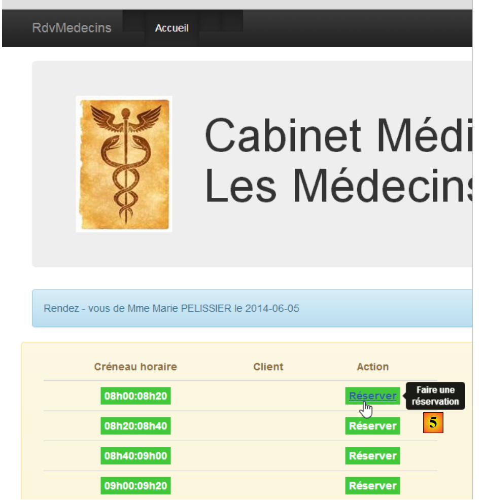 |
- una volta ottenuto l’agenda del medico, è possibile prenotare una fascia oraria [5];
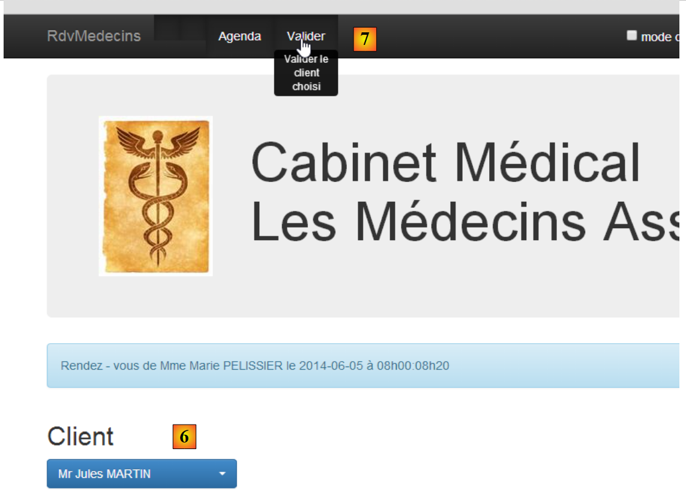 |
- in [6], si seleziona il paziente per l’appuntamento e si conferma la scelta in [7];
 |
Una volta confermato l'appuntamento, si torna automaticamente all'agenda dove il nuovo appuntamento è ora registrato. Questo appuntamento potrà essere successivamente cancellato in [7].
Le funzionalità principali sono state descritte. Sono semplici. Quelle che non sono state descritte sono funzioni di navigazione per tornare a una vista precedente. Concludiamo con la gestione della lingua:
 |
- in [1], si passa dal francese all’inglese;
2
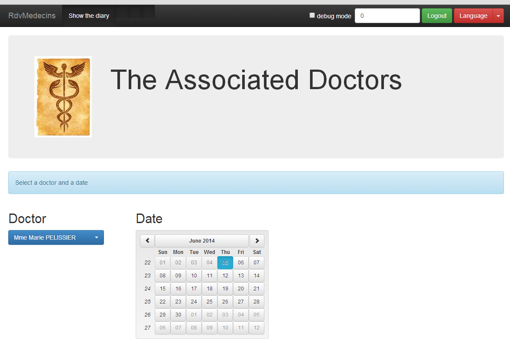
- in [2], la vista passa all’inglese, compreso il calendario;
3.4. Configurazione del progetto Angular
Costruiremo il nostro client Angular in modo graduale. Utilizziamo IDE Webstorm.
Creiamo una cartella vuota [rdvmedecins-angular-v1] e apriamola con Webstorm:
 |
- in [1], apriamo una cartella;
- in [2], selezioniamo la cartella che abbiamo creato;
- in [3], otteniamo un progetto WebStorm vuoto;
 |
- in [4], la configurazione del progetto avviene tramite l'opzione [File / Settings];
- Nei file [5] e [6], si configura la proprietà [Spelling] che gestisce il controllo ortografico. Per impostazione predefinita, tale funzione è attiva. Poiché il software scaricato è in lingua inglese, i nostri commenti in francese relativi ai programmi verranno evidenziati come possibili errori ortografici. Si disattiva quindi questo controllo ortografico [7];
 |
- in [8], si crea un nuovo file;
- in [9], si sceglie di creare il file [package.json] che descrive l’applicazione con una sintassi JSON;
- in [10], si modifica il file generato come mostrato in [11];
- in [12], si salva questo file sia in [package.json] che in [bower.json];
 |
- in [13], si configura nuovamente il progetto;
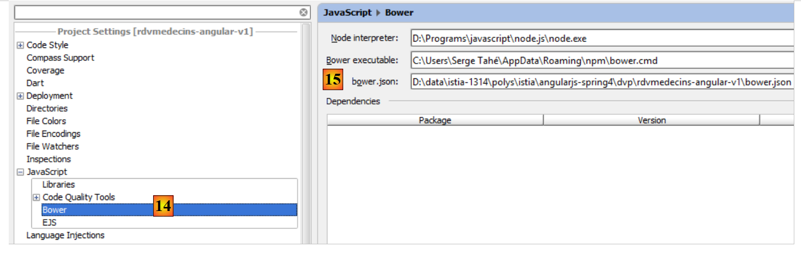 |
- in [14], si configura la proprietà [Javascript / Bower] che ci consentirà di dichiarare le librerie JavaScript di cui abbiamo bisogno;
- in [15], si indica il file [bower.json] che abbiamo appena creato;
 |
- in [16], aggiungiamo una libreria JavaScript;
- in [17] vengono visualizzate tutte le librerie JavaScript scaricabili;
- in [18], possiamo inserire un criterio per filtrare l’elenco [17]. Qui specifichiamo che vogliamo la libreria [Angular JS];
- in [19] compaiono le caratteristiche della libreria. Qui si vede che verrà scaricata la versione 1.2.18 di Angular;
- in [20], la si scarica;
 |
- in [21], si vede che è stata scaricata;
- in [22], si vede la versione scaricata. Si tratta quindi in realtà della 1.2.19;
- in [23], si vede l'ultima versione disponibile;
 |
- in [24], seguendo la stessa procedura di prima, si scaricano le seguenti librerie:
per codificare la stringa "user:password" in Base64; | ||
per internazionalizzare il calendario | ||
per instradare i URL interni all'applicazione verso il controller e la vista corretti; | ||
consente l'internazionalizzazione delle viste. Si tratta di un progetto indipendente da Angular. In questo caso verranno utilizzate due lingue: il francese e l'inglese; | ||
fornisce componenti visivi compatibili con Bootstrap. Qui useremo il suo calendario; | ||
il framework CSS Bootstrap. Verrà utilizzato per costruire le viste; | ||
fornisce un componente visivo di tipo "tabella". È "responsive" nel senso che può adattarsi alle dimensioni dello schermo; | ||
fornisce un componente di tipo "elenco a discesa"; |
 |
- in [25], le librerie scaricate sono state installate nella cartella [bower_components];
- in [26], si vede che la libreria JQuery è stata scaricata. Questo perché Bootstrap la utilizza. Il sistema di installazione delle dipendenze JavaScript di un progetto è analogo a quello di Maven per l'ambiente Java: se una libreria scaricata ha a sua volta delle dipendenze, queste vengono scaricate automaticamente;
Il file [bower.json] è stato aggiornato:
Tutte le dipendenze scaricate sono state inserite nel file.
3.5. La pagina iniziale del client Angular
Creiamo una prima versione della pagina iniziale del client Angular:
 |
- nei file [1] e [2], creiamo un file HTML denominato [app-01], [3] e [4];
Il file [app-01.html] sarà la nostra pagina principale per un po'. In esso configureremo l’importazione dei file CSS e JS necessari all’applicazione:
<!DOCTYPE html>
<html>
<head>
<title>RdvMedecins</title>
<!-- META -->
<meta http-equiv="Content-Type" content="text/html; charset=utf-8">
<meta name="viewport" content="width=device-width, initial-scale=1.0">
<meta name="description" content="Angular client for RdvMedecins">
<meta name="author" content="Serge Tahé">
<!-- il CSS -->
<link href="bower_components/bootstrap/dist/css/bootstrap.min.css" rel="stylesheet" />
<link href="bower_components/bootstrap/dist/css/bootstrap-theme.min.css" rel="stylesheet"/>
<link href="bower_components/bootstrap-select/bootstrap-select.min.css" rel="stylesheet"/>
<link href="bower_components/footable/css/footable.core.min.css" rel="stylesheet"/>
</head>
<body>
<div class="container">
<h1>Rdvmedecins - v1</h1>
</div>
<!-- Bootstrap core JavaScript ================================================== -->
<script type="text/javascript" src="bower_components/jquery/dist/jquery.min.js"></script>
<script type="text/javascript" src="bower_components/bootstrap/dist/js/bootstrap.min.js"></script>
<script type="text/javascript" src="bower_components/bootstrap-select/bootstrap-select.min.js"></script>
<script type="text/javascript" src="bower_components/footable/dist/footable.min.js"></script>
<!-- AngularJS -->
<script type="text/javascript" src="bower_components/angular/angular.min.js"></script>
<script type="text/javascript" src="bower_components/angular-ui-bootstrap-bower/ui-bootstrap-tpls.min.js"></script>
<script type="text/javascript" src="bower_components/angular-route/angular-route.min.js"></script>
<script type="text/javascript" src="bower_components/angular-translate/angular-translate.min.js"></script>
<script type="text/javascript" src="bower_components/angular-base64/angular-base64.min.js"></script>
</body>
</html>
- righe 11-12: i file CSS per Bootstrap;
- riga 13: il file CSS per il componente [boostrap-select];
- riga 14: il file CSS per il componente [footable];
- righe 21-24: i file JS dei componenti Bootstrap;
- riga 21: i componenti Bootstrap sono basati su JQuery;
- riga 22: il file JS di Bootstrap;
- riga 23: il file JS per il componente [boostrap-select];
- riga 24: il file JS per il componente [footable];
- righe 26-30: i file JS di Angular e dei progetti ad esso collegati;
- riga 26: il file JS di Angular. Deve essere caricato dopo JQuery se si utilizza questa libreria;
- riga 27: il file JS del progetto [angular-ui-bootstrap];
- riga 28: il file JS del router [angular-route];
- riga 29: il file JS del modulo di internazionalizzazione delle applicazioni Angular;
- riga 30: il file JS del modulo [angular-base64];
È possibile verificare la validità del file [app-01.html]:
 |
- in [1], si richiede l'ispezione del codice;
- nel file [2], il risultato quando tutto funziona correttamente;
Si consiglia questa ispezione sistematica del codice prima della sua esecuzione. In questo caso, tale controllo consente di individuare eventuali errori di riferimento nei file CSS e JS. Se un percorso non è corretto, l’ispettore di codice lo segnalerà.
- In [3], la pagina può essere caricata in un browser tramite un debugger. Nel browser si ottiene il seguente risultato:
 |
- in [4], la pagina [app-01.html] è stata fornita da un server interno a WebStorm che opera qui sulla porta 63342;
- in [5], la console del debugger. Se si fossero verificati degli errori, sarebbero apparsi qui. È qui che vengono visualizzati anche i messaggi generati dall’istruzione [console.log(expression)] del JavaScript. Utilizzeremo ampiamente questa possibilità;
La modalità debug consente di modificare la pagina in WebStorm e di vedere i risultati di tali modifiche nel browser senza dover ricaricare la pagina. Quindi, se aggiungiamo la riga 3 qui sotto:
<div class="container">
<h1>Rdvmedecins - v1</h1>
<h2>Version 1</h2>
</div>
e torniamo al browser, notiamo che la pagina è cambiata:
 |
3.6. Introduzione a Bootstrap
Illustreremo ora alcune delle caratteristiche di Bootstrap utilizzate nell’applicazione. Ho solo una conoscenza limitata di questo framework, acquisita copiando e incollando codice trovato su Internet. Spiegherò il ruolo delle classi CSS che credo di comprendere. Mi asterrò dal commentare le altre.
3.6.1. Esempio 1
In Angular, le operazioni che recuperano informazioni dall’esterno sono asincrone. Ciò significa che l’operazione viene avviata e che si ritorna immediatamente alla vista con cui l’utente può continuare a interagire. L’applicazione viene avvisata del completamento dell’operazione tramite un evento. Questo evento viene gestito da una funzione JS che può quindi arricchire la vista corrente o modificarla. Se l’operazione rischia di richiedere molto tempo, è utile offrire all’utente la possibilità di annullarla. Gliela offriremo sistematicamente. A tal fine, utilizzeremo un banner Bootstrap:

Per ottenere questo risultato, duplichiamo [app-01.html] in [app-02.html] e modifichiamo le seguenti righe:
<div class="container">
<h1>Rdvmedecins - v1</h1>
<div class="alert alert-warning">
<h1>Opération en cours. Veuillez patienter...
<button class="btn btn-primary pull-right">Annuler</button>
<img src="assets/images/waiting.gif" alt=""/>
</h1>
</div>
</div>
- riga 1: la classe CSS [container] definisce un'area di visualizzazione all'interno del browser;
- riga 3: la classe CSS [alert] visualizza un'area colorata. La classe [alert-warning] utilizza un colore predefinito;
- riga 5: la classe [btn] applica uno stile a un pulsante. La classe [btn-primary] gli assegna un determinato colore. La classe [pull-right] lo posiziona a destra del banner di avviso;
- riga 6: un'immagine animata di attesa;
3.6.2. Esempio 2
Le diverse viste dell’applicazione avranno un titolo comune:
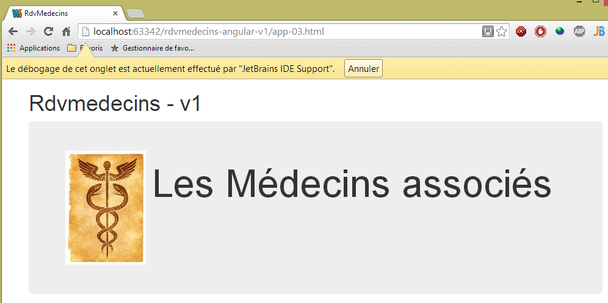
Per ottenere questo risultato, duplichiamo [app-01.html] in [app-03.html] e modifichiamo le seguenti righe:
<div class="container">
<h1>Rdvmedecins - v1</h1>
<!-- Bootstrap Jumbotron -->
<div class="jumbotron">
<div class="row">
<div class="col-md-2">
<img src="assets/images/caduceus.jpg" alt="RvMedecins"/>
</div>
<div class="col-md-10">
<h1>Les Médecins associés</h1>
</div>
</div>
</div>
</div>
- l'area colorata si ottiene con la classe [jumbotron] della riga 4;
- riga 5: la classe [row] definisce una riga a 12 colonne;
- riga 6: la classe [col-md-2] definisce un'area a due colonne nella riga;
- riga 7: in queste due colonne si inserisce un'immagine;
- righe 9-11: nelle altre 10 colonne si inserisce il testo;
3.6.3. Esempio 3
Le viste avranno una barra di comando nella parte superiore. In essa saranno presenti opzioni di comando, link o pulsanti. Vi saranno presenti anche elementi di modulo. Ad esempio:
 |
Per ottenere questo risultato, duplichiamo [app-01.html] in [app-04.html] e modifichiamo le seguenti righe:
<div class="container">
<h1>Rdvmedecins - v1</h1>
<div class="navbar navbar-inverse navbar-fixed-top" role="navigation">
<div class="container">
<div class="navbar-header">
<button type="button" class="navbar-toggle" data-toggle="collapse" data-target=".navbar-collapse">
<span class="sr-only">Toggle navigation</span>
<span class="icon-bar"></span>
<span class="icon-bar"></span>
<span class="icon-bar"></span>
</button>
<a class="navbar-brand" href="#">RdvMedecins</a>
</div>
<div class="navbar-collapse collapse">
<form class="navbar-form navbar-right">
<!-- modalità debug -->
<label style="width: 100px">
<input type="checkbox">
<span style="color: white">Debug</span>
</label>
<!-- modulo di identificazione -->
<div class="form-group">
<input type="text" class="form-control" placeholder="Temps d'attente"
style="width: 150px"/>
<input type="text" class="form-control" placeholder="URL du service web"
style="width: 200px"/>
<input type="text" class="form-control" placeholder="Login"
style="width: 100px"/>
<input type="password" class="form-control" placeholder="Mot de passe"
style="width: 100px"/>
</div>
<button class="btn btn-success">
Connexion
</button>
</form>
</div>
<button class="btn btn-success">
Connexion
</button>
</form>
</div>
</div>
</div>
</div>
- riga 4: la classe [navbar] definirà lo stile della barra di navigazione. La classe [navbar-inverse] le assegna lo sfondo nero. La classe [navbar-fixed-top] farà in modo che, quando si «scorre» la pagina visualizzata dal browser, la barra di navigazione rimanga nella parte superiore dello schermo;
- righe 6-14: definiscono l’area [1]. Si tratta tipicamente di una serie di classi che non capisco. Utilizzo il componente così com’è;
- riga 15: definisce un'area «responsive» della barra di comando. Su uno smartphone, quest'area scompare all'interno di un'area di menu;
- riga 16: la classe [navbar-form] definisce lo stile di un modulo della barra di comando. La classe [navbar-right] lo posiziona a destra di quest’ultimo;
- righe 23-32: i quattro campi di immissione del modulo della riga 17 [3]. Si trovano all’interno di una classe [form-group] che definisce gli elementi di un modulo e ciascuna di esse ha la classe [form-control];
- riga 33: la classe [btn] che abbiamo già incontrato, arricchita dalla classe [btn-success] che le conferisce il colore verde;
3.6.4. Esempio 4
La barra di comando consentirà di cambiare lingua tramite un menu a tendina:

Per ottenere questo risultato, duplichiamo [app-01.html] in [app-05.html] e aggiungiamo le seguenti righe alla barra di comando:
<button class="btn btn-success">
Connexion
</button>
<!-- lingue -->
<div class="btn-group">
<button type="button" class="btn btn-danger">
Langues
</button>
<button type="button" class="btn btn-danger dropdown-toggle" data-toggle="dropdown">
<span class="caret"></span>
<span class="sr-only">Toggle Dropdown</span>
</button>
<ul class="dropdown-menu" role="menu">
<li>
<a href="">Français</a>
</li>
<li>
<a href="">English</a>
</li>
</ul>
</div>
</form>
Le righe aggiunte sono le righe da 4 a 21.
- riga 5: la classe [btn-group] definisce lo stile di un gruppo di pulsanti. Ce ne sono due alle righe 6 e 9;
- righe 6-8: il primo pulsante definisce il testo dell'elenco a discesa. La classe [btn-danger] gli assegna il colore rosso;
- righe 9-12: il secondo pulsante è quello del menu a tendina. È affiancato al primo, il che dà l’impressione di un unico componente;
- riga 10: visualizza la freccia verso il basso che indica che il pulsante è un menu a tendina;
- riga 11: per gli "screen reader";
- righe 13-20: gli elementi del menu a tendina sono gli elementi di un elenco non ordinato;
3.6.5. Esempio 5
Per inviare un modulo o per navigare, l’utente avrà a disposizione nella barra di comando opzioni o pulsanti come quelli riportati di seguito:
 |
Le opzioni di menu sono state implementate in [1]. Per ottenere questo risultato, duplichiamo [app-01.html] in [app-06.html] e aggiungiamo le seguenti righe:
<div class="navbar navbar-inverse navbar-fixed-top" role="navigation">
<div class="container">
<div class="navbar-header">
...
</div>
<!-- opzioni di menu -->
<div class="collapse navbar-collapse">
<ul class="nav navbar-nav">
<li class="active">
<a href="">
<span>Home</span>
</a>
</li>
<li class="active">
<a href="">
<span>Agenda</span>
</a>
</li>
<li class="active">
<a href="">
<span>Valider</span>
</a>
</li>
<li class="active">
<a href="">
<span>Annuler</span>
</a>
</li>
</ul>
<!-- pulsanti a destra -->
<form class="navbar-form navbar-right" role="form">
...
</form>
</div>
</div>
</div>
</div>
- Le opzioni di menu sono definite dalle righe 8-29. Anche in questo caso si tratta di elementi di un elenco <ul>. La classe [active] rende il testo in grassetto, indicando così che è possibile cliccare sull’opzione.
3.6.6. Esempio 6
Presenteremo i medici e i clienti in elenchi a discesa come di seguito:
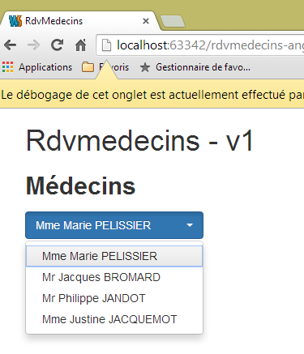 |
L’elenco a discesa utilizzato non è un componente nativo di Bootstrap. Si tratta del componente [bootstrap-select] (http://silviomoreto.github.io/bootstrap-select/). Per ottenere questo risultato, duplichiamo [app-01.html] in [app-07.html] e aggiungiamo le seguenti righe:
<!DOCTYPE html>
<html>
<head>
...
<link href="bower_components/bootstrap-select/bootstrap-select.min.css" rel="stylesheet"/>
</head>
<body>
<div class="container">
<h1>Rdvmedecins - v1</h1>
<h2><label for="medecins">Médecins</label></h2>
<select id="medecins" data-style="btn btn-primary" class="selectpicker">
<option value="1">Mme Marie PELISSIER</option>
<option value="1">Mr Jacques BROMARD</option>
<option value="1">Mr Philippe JANDOT</option>
<option value="1">Mme Justine JACQUEMOT</option>
</select>
</div>
<!-- Bootstrap core JavaScript ================================================== -->
...
<script type="text/javascript" src="bower_components/bootstrap-select/bootstrap-select.min.js"></script>
<!-- script locale -->
<script>
$('.selectpicker').selectpicker();
</script>
</body>
</html>
- riga 5: occorre importare il foglio di stile di [bootstrap-select];
- riga 13: l’attributo [data-style] viene utilizzato da [bootstrap-select]. Serve a definire lo stile dell’elenco a discesa. In questo caso, gli viene assegnata la forma di un pulsante blu [btn-primary];
- riga 13: l'attributo [class] viene utilizzato alla riga 23. Può essere qualsiasi valore;
- righe 14-17: gli elementi dell’elenco a discesa. Qui sono presenti i classici tag HTML;
- riga 22: è necessario importare il JS da [bootstrap-select];
- righe 24-26: uno script JS eseguito al termine del caricamento della pagina;
- riga 25: un'istruzione JQuery. Si applica il metodo [selectpicker] (selectpicker()) a tutti gli elementi con la classe [selectpicker] ($('.selectpicker')). Ce n'è solo uno, il tag <select> della riga 13. Il metodo [selectpicker] proviene dal file JS a cui si fa riferimento alla riga 22;
3.6.7. Esempio 7
Per visualizzare l’agenda di un medico, utilizzeremo una tabella «responsive» fornita dalla libreria JS [footable]:
 |
- in [1]: la tabella con visualizzazione normale;
- in [2]: la tabella quando si riduce la dimensione della finestra del browser. La colonna [Action] passa automaticamente alla riga successiva. Questo è ciò che viene definito un componente "responsive" o semplicemente adattabile.
Duplichiamo [app-01.html] in [app-08.html] e aggiungiamo le seguenti righe:
...
<link href="bower_components/footable/css/footable.core.min.css" rel="stylesheet"/>
<link href="assets/css/rdvmedecins.css" rel="stylesheet"/>
...
<div class="container">
<h1>Rdvmedecins - v1</h1>
<div class="row alert alert-warning">
<div class="col-md-6">
<table id="creneaux" class="table">
<thead>
<tr>
<th data-toggle="true">
<span>Créneau horaire</span>
</th>
<th>
<span>Client</span>
</th>
<th data-hide="phone">
<span>Action</span>
</th>
</thead>
<tbody>
<tr>
<td>
<span class='status-metro status-active'>
9h00-9h20
</span>
</td>
<td>
<span></span>
</td>
<td>
<a href="" class="status-metro status-active">
Réserver
</a>
</td>
</tr>
<tr>
<td>
<span class='status-metro status-suspended'>
9h20-9h40
</span>
</td>
<td>
<span>Mme Paule MARTIN</span>
</td>
<td>
<a href="" class="status-metro status-suspended">
Supprimer
</a>
</td>
</tr>
</tbody>
</table>
</div>
</div>
</div>
...
<script src="bower_components/footable/dist/footable.min.js" type="text/javascript"></script>
- le righe 2 e 60 sono già presenti in [app-01.html]. Si tratta dei file CSS e JS forniti dalla libreria [footable];
- la riga 3 fa riferimento al seguente file CSS:
@CHARSET "UTF-8";
#intervalli th {
text-align: center;
}
#intervalli td {
text-align: center;
font-weight: bold;
}
.status-metro {
display: inline-block;
padding: 2px 5px;
color:#fff;
}
.status-metro.status-active {
background: #43c83c;
}
.status-metro.status-suspended {
background: #fa3031;
}
Gli stili [status-*] provengono da un esempio di utilizzo della tabella [footable] trovato sul sito della biblioteca.
- riga 8: inserisce la tabella in una riga [row] e un riquadro colorato [alert alert-warning];
- riga 9: la tabella occuperà 6 colonne [col-md-6];
- riga 10: la tabella HTML è formattata con Bootstrap [class='table'];
- riga 13: l’attributo [data-toggle] indica la colonna che ospita il simbolo [+/-] che espande/comprime la riga;
- riga 19: l'attributo [data-hide='phone'] indica che la colonna deve essere nascosta se lo schermo ha le dimensioni di uno schermo di telefono. È possibile utilizzare anche il valore «tablet»;
3.6.8. Esempio 8
Per aiutare l’utente, creeremo dei tooltip attorno ai componenti principali delle viste:
 |
Per ottenere questo risultato, duplichiamo [app-01.html] in [app-09.html] e aggiungiamo le seguenti righe:
<!DOCTYPE html>
<html ng-app="rdvmedecins">
<head>
...
</head>
<body>
<div class="container">
<h1>Rdvmedecins - v1</h1>
<div class="navbar navbar-inverse navbar-fixed-top" role="navigation">
<div class="container">
<div class="navbar-header">
<button type="button" class="navbar-toggle" data-toggle="collapse" data-target=".navbar-collapse">
<span class="sr-only">Toggle navigation</span>
<span class="icon-bar"></span>
<span class="icon-bar"></span>
<span class="icon-bar"></span>
</button>
<a class="navbar-brand" href="#">RdvMedecins</a>
</div>
<!-- opzioni di menu -->
<div class="collapse navbar-collapse">
<ul class="nav navbar-nav">
<li class="active">
<a href="">
<span tooltip="Retourne à la page d'accueil" tooltip-placement="bottom">Home</span>
</a>
</li>
<li class="active">
<a href="">
<span tooltip="Affiche l'agenda" tooltip-placement="top">Agenda</span>
</a>
</li>
<li class="active">
<a href="">
<span tooltip="Valide le rendez-vous" tooltip-placement="right">Valider</span>
</a>
</li>
<li class="active">
<a href="">
<span tooltip="Annule l'opération en cours" tooltip-placement="left">Annuler</span>
</a>
</li>
</ul>
</div>
</div>
</div>
</div>
<!-- Bootstrap core JavaScript ================================================== -->
<...
<script type="text/javascript" src="bower_components/angular-ui-bootstrap-bower/ui-bootstrap-tpls.min.js"></script>
<!-- script locale -->
<script>
// --------------------- modulo Angular
angular.module("rdvmedecins", ['ui.bootstrap']);
</script>
</body>
</html>
I fumetti di aiuto sono forniti dalla libreria [angular-ui-bootstrap], che a sua volta si basa sulla libreria [angular]. La riga 50 importa la libreria [angular-ui-bootstrap]. Per implementare i componenti della libreria [angular-ui-bootstrap], è necessario creare un modulo Angular. Ciò avviene alle righe 52-55. Queste righe definiscono un modulo Angular denominato [rdvmedecins] (1° parametro). Un modulo Angular può utilizzare altri moduli Angular. Queste sono le cosiddette dipendenze del modulo. Sono fornite in un array come secondo parametro della funzione [angular.module]. In questo caso, il modulo denominato [ui.bootstrap] è fornito dalla libreria [angular-ui-bootstrap]. È proprio questo modulo che ci fornirà i tooltip.
La riga 54 definisce un modulo Angular. Per impostazione predefinita, ciò non ha alcun effetto sulla pagina. Si indica che la pagina deve essere gestita da Angular, associandola a un modulo Angular. È ciò che viene fatto alla riga 2. L’attributo [ng-app='rdvmedecins'] associa la pagina al modulo creato alla riga 54. La pagina verrà quindi analizzata da Angular. Gli attributi [tooltip] verranno individuati ed elaborati dal modulo [ui.bootstrap].
La sintassi del tooltip è la seguente:
<span tooltip="Retourne à la page d'accueil" tooltip-placement="bottom">Home</span>
Nell’esempio sopra riportato, si aggiunge un’informativa al testo [Home]:
- [tooltip]: definisce il testo del tooltip;
- [tooltip-placement]: definisce la sua posizione (bottom, top, left, right);
Angular JS consente di aggiungere nuovi tag o nuovi attributi a quelli già esistenti nel linguaggio HTML. Questa estensione del linguaggio HTML viene realizzata tramite direttive Angular. In questo caso, gli attributi [tooltip] e [tooltip-placement] sono attributi creati da [angular-ui-bootstrap].
3.6.9. Esempio 9
Per aiutare l’utente a scegliere il giorno di un appuntamento, gli proporremo un calendario:

Come per i fumetti di aiuto, questo calendario è fornito dalla libreria [angular-ui-bootstrap]. Per ottenere questo risultato, duplichiamo [app-01.html] in [app-10.html] e aggiungiamo le seguenti righe:
<!DOCTYPE html>
<html ng-app="rdvmedecins">
<head>
...
<body>
<div class="container">
<h1>Rdvmedecins - v1</h1>
<div>
<pre>Date <em>{{jour | date:'fullDate'}}</em></pre>
<div class="row">
<div class="col-md-2">
<h4>Calendrier</h4>
<div style="display:inline-block; min-height:290px;">
<datepicker ng-model="jour" show-weeks="true" class="well"></datepicker>
</div>
</div>
</div>
</div>
</div>
</div>
...
<!-- script locale -->
<script>
// --------------------- modulo Angular
angular.module("rdvmedecins", ['ui.bootstrap'])
</script>
</body>
</html>
Come in precedenza, la pagina è associata a un modulo Angular (righe 2 e 28). Il calendario è definito dal tag <datepicker> alla riga 16, definito dalla libreria [angular-ui-bootstrap]:
- [show-weeks='true']: per visualizzare i numeri delle settimane;
- [class='well']: per circondare il calendario con un'area grigia dagli angoli arrotondati;
- [ng-model='jour']: gli attributi [ng-*] sono attributi Angular. L’attributo [ng-model] indica un dato che verrà inserito nel modello della vista. Quando l'utente cliccherà su una data, questa verrà inserita nella variabile [jour] del modello. Questa variabile viene utilizzata alla riga 10. La sintassi {{espressione}} consente di valutare un'espressione composta da elementi del modello. In questo caso, {{giorno}} visualizzerà il valore della variabile [jour] del modello. Una caratteristica fondamentale di Angular è che la vista seguirà automaticamente le modifiche della variabile [jour]. Pertanto, quando l'utente modificherà le date, tali modifiche verranno immediatamente visualizzate alla riga 10. In generale, il funzionamento è il seguente:
- una vista V è associata a un modello M;
- Angular monitora il modello M e aggiorna automaticamente la vista V quando si verifica una modifica al modello M;
La sintassi {{giorno|data}} è denominata filtro. Non viene visualizzato il valore di [jour], bensì il valore di [jour] filtrato da un filtro denominato [date]. Questo filtro è predefinito in Angular. Serve a formattare le date. Accetta parametri che specificano il formato desiderato. Pertanto, l’espressione {{giorno | data:'fullDate'}} indica che si desidera il formato completo della data, in questo caso [Friday, June 20, 2014], poiché il calendario è impostato di default in inglese. Ne parleremo prossimamente in relazione alla sua internazionalizzazione.
3.6.10. Conclusione
Abbiamo presentato gli elementi del framework CSS Bootstrap che utilizzeremo. Si trattava di componenti passivi: i loro eventi non venivano gestiti. Pertanto, un clic sui pulsanti o sui link non produceva alcun effetto. Questi eventi saranno gestiti in JavaScript. È possibile utilizzare questo linguaggio senza l’ausilio di framework, ma come è avvenuto sul lato server, alcuni framework si impongono anche sul lato client. È il caso del framework Angular JS, che introduce un nuovo approccio allo sviluppo di applicazioni JavaScript eseguite da un browser. Lo presentiamo ora.
3.7. Alla scoperta di Angular JS
Illustreremo ora alcune delle caratteristiche del framework Angular JS utilizzate nell’applicazione. Ne abbiamo già incontrate alcune:
- una pagina HTML è basata su Angular JS se vi si associa un modulo:
<html ng-app="rdvmedecins">
- Angular consente di creare nuovi tag e nuovi attributi HTML tramite le direttive:
- Angular consente di creare filtri:
- Una vista V visualizza un modello M. Angular monitora il modello M e aggiorna automaticamente la vista V ogni volta che si verifica una modifica al modello M. Il valore di una variabile del modello M viene visualizzato nella vista V tramite:
Inizieremo approfondendo l’implementazione del Design Pattern Modello – Vista – Controller in Angular. Ricordiamo le relazioni che esistono tra loro dal punto di vista dell’architettura:
 |
- la vista V1 visualizza il modello M1 creato dal controller C1. Quest’ultimo contiene non solo il modello M1, ma anche i gestori degli eventi della vista V1. Ci troviamo nel ciclo 5, 8, 9:
- [5]: si verifica un evento nella vista V1. Viene gestito dal controller C1;
- quest’ultimo esegue la propria operazione [6-7], quindi costruisce il modello M1 [8];
- [9]: la vista V1 visualizza il nuovo modello M1. Come abbiamo detto, quest’ultima fase è automatica. A differenza di altri framework, non è presente un push esplicito (C1 inserisce il modello M1 in V1) né un pull esplicito (la vista V1 recupera il modello M1 da C1). C'è un push implicito che lo sviluppatore non vede;
- poi riprende il ciclo 5, 8, 9;
3.7.1. Esempio 1: il modello MVC di Angular
Riprendiamo l’esempio del calendario. Abbiamo visto la direttiva che lo genera:
<datepicker ng-model="jour" show-weeks="true" class="well"></datepicker>
Questa direttiva ammette altri attributi oltre a quelli presentati sopra, tra cui l’attributo [min-date] che imposta la data minima selezionabile nel calendario. Questo ci sarà utile. Quando l’utente sceglie una data per un appuntamento, questa deve essere uguale o superiore a quella del giorno corrente. Scriveremo quindi:
<datepicker ng-model="jour" ... min-date="dateMin"></datepicker>
dove [dateMin] sarà una variabile del modello della pagina che avrà come valore la data odierna. Si otterrà così la seguente pagina:
 |
- in [1], siamo il 19 giugno 2014. Il cursore indica che è possibile selezionare il 19 giugno;
- in [2], il cursore indica che non è possibile selezionare il 18 giugno;
Duplichiamo [app-10.html] in [app-11.html] e apportiamo le seguenti modifiche:
<!DOCTYPE html>
<html ng-app="rdvmedecins">
<head>
...
</head>
<body ng-controller="rdvMedecinsCtrl">
<div class="container">
<h1>Rdvmedecins - v1</h1>
<div>
<pre>Date <em>{{jour | date:'fullDate' }}</em></pre>
<div class="row">
<div class="col-md-2">
<h4>Calendrier</h4>
<div style="display:inline-block; min-height:290px;">
<datepicker ng-model="jour" show-weeks="true" class="well" min-date="minDate"></datepicker>
</div>
</div>
</div>
</div>
</div>
<!-- Bootstrap core JavaScript ================================================== -->
...
<!-- script locale -->
<script>
// --------------------- modulo Angular
angular.module("rdvmedecins", ['ui.bootstrap']);
// controller
angular.module("rdvmedecins")
.controller('rdvMedecinsCtrl', ['$scope',
function ($scope) {
// data minima
$scope.minDate = new Date();
}]);
</script>
</body>
</html>
Esaminiamo innanzitutto lo script locale delle righe 26-37:
- riga 28: creazione del modulo [rdvmedecins] con la sua dipendenza dal modulo [ui.bootstrap] che fornisce il calendario;
- righe 30-35: creazione di un controller. Sarà questo a contenere il modello della nostra pagina. Qui non ci sarà alcun gestore di eventi;
- righe 30-31: il controller [rdvMedecinsCtrl] appartiene al modulo [rdvmedecins]. È possibile aggiungere a un modulo tutti i controller che si desidera. Nella nostra applicazione avremo:
- un modulo di gestione dell'applicazione;
- un controller per ogni vista;
- il secondo parametro della funzione [controller] è un array della forma ['O1', 'O2', ..., 'On', function(O1, O2, ..., On)]. L’ultimo parametro è la funzione che implementa il controller. I suoi parametri sono oggetti che Angular JS fornirà alla funzione.
Torniamo all’architettura di un’applicazione Angular:
 |
Nell’esempio sopra riportato, il controller C1 contiene l’insieme dei gestori di eventi della vista V1, nonché il modello M1 di quest’ultima. Gli handler di eventi potrebbero aver bisogno di uno o più servizi [6] per svolgere il proprio lavoro. Si passano tutti questi servizi come parametri alla funzione di costruzione del controller:
I servizi Si sono singleton. Angular ne crea un unico esemplare. Sono identificati da un nome Si. Perché compaiono due volte nella tabella sopra riportata? In fase di esecuzione, gli script JS vengono minificati. In questo processo di minificazione, la tabella sopra riportata diventa:
I parametri perdono il loro nome. Ma si tratta proprio dei nomi dei servizi. È quindi importante conservare questi nomi. Ecco perché vengono passati come stringhe di caratteri come parametri che precedono la funzione. Le stringhe di caratteri non vengono modificate durante il processo di minificazione. Quando Angular costruirà il controller con il nuovo array, sostituirà a1 con S1, a2 con S2, ... L'ordine dei parametri è quindi importante. Deve corrispondere all'ordine dei servizi che precedono la definizione della funzione.
Torniamo alla definizione del controller [rdvMedecinsCtrl]:
// controller
angular.module("rdvmedecins")
.controller('rdvMedecinsCtrl', ['$scope',
function ($scope) {
// data minima
$scope.minDate = new Date();
}]);
- righe 3-4: l'unico oggetto iniettato nel controller è l'oggetto $scope. Si tratta di un oggetto predefinito che rappresenta il modello M delle viste associate al controller. Per arricchire il modello di una vista, è sufficiente aggiungere dei campi all'oggetto $scope;
- è ciò che viene fatto alla riga 6. Si crea il campo [minDate] con come valore la data odierna;
La vista V utilizza questo modello M nel modo seguente:
<body ng-controller="rdvMedecinsCtrl">
<div class="container">
...
<div style="display:inline-block; min-height:290px;">
<datepicker ng-model="jour" show-weeks="true" class="well" min-date="minDate"></datepicker>
</div>
...
</div>
...
- riga 1: il corpo della pagina è associato al controller [rdvMedecinsCtrl] tramite l’attributo [ng-controller]. Ciò significa che tutto ciò che si trova all’interno del tag <body> utilizzerà il controller [rdvMedecinsCtrl] per gestire i propri eventi e ottenere il proprio modello M. Una pagina HTML può dipendere da più controller, annidati o meno gli uni negli altri:
Sopra:
- il contenuto di [div1] (righe 1-10) visualizza il modello M1 gestito dal controller c1. I tag di quest’area possono fare riferimento ai gestori di eventi del controller c1;
- il contenuto di [div11] (righe 3-4) visualizza il modello M11 gestito dal controller c11, ma anche il modello M1. Esiste un'ereditarietà dei modelli. I tag di quest'area possono fare riferimento sia ai gestori di eventi del controller c11 che ai gestori di eventi del controller c1. Non possono fare riferimento né al modello M12 del controller c12 né ai gestori di eventi di quest'ultimo. Il controller c12, infatti, non è riconosciuto tra le righe 3-5;
- righe 7-9: si può seguire un ragionamento analogo a quello esposto in precedenza;
Torniamo al codice del calendario:
<datepicker ng-model="jour" show-weeks="true" class="well" min-date="minDate"></datepicker>
L'attributo [min-date] viene inizializzato con il valore [minDate] del modello. Implicitamente [$scope.minDate]. Il campo viene sempre cercato nell'oggetto $scope.
3.7.2. Esempio 2: localizzazione delle date
Per il momento il calendario non ci è di grande utilità poiché si tratta di un calendario inglese. È possibile localizzarlo:
 |
- in [1], abbiamo un calendario in francese;
- con [2], lo si imposta in inglese;
- con [3], il calendario inglese;
Duplichiamo la pagina [app-11.html] in [app-12.html], quindi modifichiamo quest’ultima come segue:
<!DOCTYPE html>
<html ng-app="rdvmedecins">
<head>
...
</head>
<body ng-controller="rdvMedecinsCtrl">
<div class="container">
<h1>Rdvmedecins - v1</h1>
<pre>Date <em>{{jour | date:'fullDate' }}</em></pre>
<div class="row">
<!-- il calendario-->
<div class="col-md-4">
<h4>Calendrier</h4>
<div style="display:inline-block; min-height:290px;">
<datepicker ng-model="jour" show-weeks="true" class="well" min-date="minDate"></datepicker>
</div>
</div>
<!-- le lingue -->
<div class="col-md-2">
<div class="btn-group" dropdown is-open="isopen">
<button type="button" class="btn btn-primary dropdown-toggle" style="margin-top: 30px">
Langues<span class="caret"></span>
</button>
<ul class="dropdown-menu" role="menu">
<li><a href="" ng-click="setLang('fr')">Français</a></li>
<li><a href="" ng-click="setLang('en')">English</a></li>
</ul>
</div>
</div>
</div>
</div>
...
<script type="text/javascript" src="rdvmedecins.js"></script>
</body>
</html>
Le modifiche sono poche. È stata semplicemente aggiunta la lista a tendina delle lingue alle righe 21-31. Per la prima volta, alle righe 27-28 incontriamo un gestore di eventi:
- riga 27: l’attributo [ng-click] è un attributo Angular che indica il gestore di eventi da eseguire quando si fa clic sull’elemento che possiede tale attributo. In questo caso, verrà eseguita la funzione [$scope.setLang('fr')], che imposterà il calendario in francese;
- riga 28: qui si imposta il calendario in inglese;
- riga 35: poiché il codice JavaScript del controller è piuttosto corposo, lo inseriamo in un file denominato [rdvmedecins.js];
Angular gestisce la localizzazione delle viste con un modulo denominato [ngLocale]. La definizione del nostro modulo [rdvmedecins] sarà quindi la seguente:
// --------------------- modulo Angular
angular.module("rdvmedecins", ['ui.bootstrap', 'ngLocale']);
Riga 2: non bisogna dimenticare le dipendenze, poiché Angular a volte è poco preciso nei suoi messaggi di errore. Trascurare una dipendenza è quindi particolarmente difficile da individuare. In questo caso abbiamo una nuova dipendenza dal modulo [ngLocale].
Per impostazione predefinita, Angular gestisce solo la localizzazione di date, numeri, ecc. che presentano varianti locali. Non gestisce invece l’internazionalizzazione dei testi. A tal fine si utilizzerà la libreria [angular-translate]. La gestione della localizzazione è affidata alla libreria [angular-i18n]. Questa libreria include tanti file quanti sono le varianti per date, numeri, ecc.
 |
Per il calendario francese utilizzeremo il file [angular-locale_fr-fr.js] e per il calendario inglese il file [angular-locale_en-us.js]. Vediamo ad esempio cosa contiene il file [angular-locale_fr-fr.js]:
'use strict';
angular.module("ngLocale", [], ["$provide", function($provide) {
var PLURAL_CATEGORY = {ZERO: "zero", ONE: "one", TWO: "two", FEW: "few", MANY: "many", OTHER: "other"};
$provide.value("$locale", {
"DATETIME_FORMATS": {
"AMPMS": [
"AM",
"PM"
],
"DAY": [
"dimanche",
"lundi",
"mardi",
"mercredi",
"jeudi",
"vendredi",
"samedi"
],
"MONTH": [
"janvier",
"f\u00e9vrier",
"mars",
"avril",
"mai",
"juin",
"juillet",
"ao\u00fbt",
"septembre",
"octobre",
"novembre",
"d\u00e9cembre"
],
"SHORTDAY": [
"dim.",
"lun.",
"mar.",
"mer.",
"jeu.",
"ven.",
"sam."
],
"SHORTMONTH": [
"janv.",
"f\u00e9vr.",
"mars",
"avr.",
"mai",
"juin",
"juil.",
"ao\u00fbt",
"sept.",
"oct.",
"nov.",
"d\u00e9c."
],
"fullDate": "EEEE d MMMM y",
"longDate": "d MMMM y",
"medium": "d MMM y HH:mm:ss",
"mediumDate": "d MMM y",
"mediumTime": "HH:mm:ss",
"short": "dd/MM/yy HH:mm",
"shortDate": "dd/MM/yy",
"shortTime": "HH:mm"
},
"NUMBER_FORMATS": {
"CURRENCY_SYM": "\u20ac",
"DECIMAL_SEP": ",",
"GROUP_SEP": "\u00a0",
"PATTERNS": [
{
"gSize": 3,
"lgSize": 3,
"macFrac": 0,
"maxFrac": 3,
"minFrac": 0,
"minInt": 1,
"negPre": "-",
"negSuf": "",
"posPre": "",
"posSuf": ""
},
{
"gSize": 3,
"lgSize": 3,
"macFrac": 0,
"maxFrac": 2,
"minFrac": 2,
"minInt": 1,
"negPre": "(",
"negSuf": "\u00a0\u00a4)",
"posPre": "",
"posSuf": "\u00a0\u00a4"
}
]
},
"id": "fr-fr",
"pluralCat": function (n) { if (n >= 0 && n <= 2 && n != 2) { return PLURAL_CATEGORY.ONE; } return PLURAL_CATEGORY.OTHER;}
});
}]);
Qui si vedono gli elementi che consentono di creare un calendario francese:
- righe 10-18: la tabella dei giorni della settimana;
- righe 19-32: la tabella dei mesi dell’anno;
- righe 33-41: la tabella dei giorni della settimana in forma abbreviata;
- righe 42-55: la tabella dei mesi dell'anno in forma abbreviata;
- righe 56-63: formati di data e ora. Alla riga 62 si riconosce il formato «gg/mm/aa» delle date francesi;
- righe 65-95: informazioni sulla formattazione dei numeri. Questo aspetto non ci interessa in questa sede;
- riga 96: l’identificativo «fr-fr» delle impostazioni locali del file (fr-fr: francese di Francia, fr-ca: francese del Canada, ...)
Nel file [angular-locale_en-us.js] c'è esattamente la stessa cosa, ma questa volta per la versione inglese di USA (en-us).
Il codice sopra riportato non è molto semplice da leggere. Leggendo attentamente, si scopre che tutto questo codice definisce la variabile [$locale] della riga 4. È modificando il valore di questa variabile che si ottiene l’internazionalizzazione di date, numeri, valute, ecc. Curiosamente, Angular non ha previsto la modifica della variabile [$locale] durante l’esecuzione. La si definisce una volta per tutte importando il file della locale desiderata:
<script type="text/javascript" src="bower_components/angular-i18n/angular-locale_fr-fr.js"></script>
Non serve a nulla importare tutti i file delle impostazioni locali desiderate, poiché ogni file, come abbiamo visto, fa una sola cosa: definire la variabile [$locale]. È l’ultimo file importato che prevale e da quel momento in poi non c’è più modo di cambiare l’impostazione locale.
Navigando sul web alla ricerca di una soluzione a questo problema, non ne ho trovata nessuna. Ne propongo una qui: [https://github.com/stahe/angular-ui-bootstrap-datepicker-with-locale-updated-on-the-fly]. L’idea è quella di inserire le diverse impostazioni locali di cui abbiamo bisogno in un dizionario. È lì che andremo a cercarle quando sarà necessario cambiarle. Il codice JavaScript di [rdvmedecins.js] ha la seguente struttura:
 |
Se si elimina la definizione delle impostazioni locali, che occupa 200 righe (righe 15-215 sopra), il codice risulta semplice:
- riga 6: definisce il modulo [rdvmedecins] e le sue dipendenze;
- righe 8-10: definisce il controller [rdvMedecinsCtrl] della pagina;
- riga 9: la funzione di costruzione del controller riceve due parametri:
- $scope: per creare il modello della vista;
- $locale: che è la variabile che gestisce la localizzazione del calendario. È questa che va modificata quando si cambia lingua;
- riga 13: la variabile [minDate] del modello viene inizializzata con la data odierna;
- riga 15: definisce il dizionario [locales]. Si noti che non è stato scritto [$scope.locales]. La variabile [locales], infatti, non fa parte del modello esposto alla vista;
- righe 15-215: definiscono un dizionario {'fr':locale-fr-fr, 'en':locale-en-us}. I valori [locale-fr-fr] e [locale-en-us] sono ricavati rispettivamente dai file JS, [angular-locale_fr-fr.js] e [angular-locale_en-us.js]. La parte più difficile è non sbagliare nelle numerosissime parentesi di questo dizionario...
- riga 217: si inizializza la variabile $locale con locales['fr'], ovvero la versione francese delle impostazioni locali. Non è possibile scrivere semplicemente [$locale=locales['fr']], poiché ciò assegna a $locale l’indirizzo di locales['fr']. È necessario effettuare una copia per valore. Ciò può essere fatto con la funzione predefinita [angular.copy];
- riga 219: la variabile [jour] del modello viene inizializzata con la data odierna. Ciò comporta che il calendario venga visualizzato posizionato su tale data;
- righe 223-230: definiscono il gestore di eventi che viene chiamato al momento del cambio di lingua. Si noti la sintassi:
per definire un gestore di eventi che si chiamerebbe [nom_fonction] e che accetterebbe i parametri [param1, param2, ...];
Ricordiamo il codice HTML dell'elenco a discesa:
<!-- le lingue -->
<div class="col-md-2">
<div class="btn-group" dropdown is-open="isopen">
<button type="button" class="btn btn-primary dropdown-toggle" style="margin-top: 30px">
Langues<span class="caret"></span>
</button>
<ul class="dropdown-menu" role="menu">
<li><a href="" ng-click="setLang('fr')">Français</a></li>
<li><a href="" ng-click="setLang('en')">English</a></li>
</ul>
</div>
</div>
- riga 8: la selezione del francese comporta la chiamata di [setLang('fr')];
- riga 9: la selezione dell'inglese comporta la chiamata di [setLang('en')];
- riga 3: l'attributo [is-open] è un valore booleano che controlla l'apertura (true) o la chiusura (false) dell'elenco a discesa. Viene inizializzato con la variabile [isopen] del modello della vista;
Torniamo al codice di [rdvmedecins.js]:
- riga 225: si modifica il valore della variabile [$locale] con il valore del dizionario [locales] appropriato;
- riga 227: abbiamo detto che quando il modello M di una vista V cambia, la vista V viene automaticamente aggiornata con il nuovo modello. Alla riga 225 è stato modificato il valore della variabile [$locale], che non fa parte del modello M visualizzato dalla vista V. È necessario trovare un modo per modificare questo modello M in modo che il calendario si aggiorni e utilizzi la nuova impostazione locale. Qui si modifica la variabile [jour] del modello del calendario. La si inizializza con un nuovo puntatore (new) che punta a una data identica a quella visualizzata. [$scope.jour.getTime()] è il numero di millisecondi trascorsi tra il 1° gennaio 1970 e la data visualizzata dal calendario. Con questo numero, si ricostruisce una nuova data. Ovviamente si otterrà la stessa data e il calendario rimarrà posizionato sulla data che stava visualizzando. Tuttavia, il valore di [$scope.jour], che in realtà è un puntatore, sarà cambiato e il calendario si aggiornerà;
- riga 229: si imposta su false il valore della variabile [isopen] del modello. Questa variabile controlla uno degli attributi dell’elenco a discesa:
<div class="btn-group" dropdown is-open="isopen">
<button type="button" class="btn btn-primary dropdown-toggle" style="margin-top: 30px">
Langues<span class="caret"></span>
</button>
...
</div>
Nella riga 1 sopra riportata, l’attributo [is-open] passerà a false, il che avrà l’effetto di chiudere l’elenco a discesa.
3.7.3. Esempio 3: internazionalizzazione dei testi
Torniamo alla localizzazione del calendario:
 |
In [3], vediamo che il calendario è in inglese, ma non i testi [Calendrier, Langues]. Per impostazione predefinita, Angular non offre uno strumento per l’internazionalizzazione dei messaggi. In questo caso utilizzeremo la libreria [angular-translate] (https://github.com/angular-translate/angular-translate).
Svilupperemo il seguente esempio:
 |
- in [1], la vista in francese;
- in [2], la visualizzazione in inglese;
Vediamo la configurazione necessaria per l’internazionalizzazione. Lo script [rdvmedecins.js] viene modificato come segue:
// --------------------- modulo Angular
angular.module("rdvmedecins", ['ui.bootstrap', 'ngLocale', 'pascalprecht.translate']);
// configurazione i18n
angular.module("rdvmedecins")
.config(['$translateProvider', function ($translateProvider) {
// messaggi in francese
$translateProvider.translations("fr", {
'msg_header': 'Studio medico <br/> Les Médecins Associés',
'msg_langues': 'Lingue',
'msg_agenda': 'Agenda di {{titolo}} {{nome}} {{cognome}}<br/>il {{giorno}}',
'msg_calendrier': 'Calendario',
'msg_jour': 'Giorno selezionato: ',
'msg_meteo': "Oggi pioverà..."
});
// messaggi in inglese
$translateProvider.translations("en", {
'msg_header': 'The Associated Doctors',
'msg_langues': 'Lingue',
'msg_agenda': "Diario di {{titre}} {{prenom}} {{nom}}<br/> del {{jour}}",
'msg_calendrier': 'Calendario',
'msg_jour': 'Giorno selezionato: ',
'msg_meteo': 'Oggi pioverà...'
});
// lingua predefinita
$translateProvider.preferredLanguage("fr");
}]);
- riga 2: la prima modifica consiste nell’aggiunta di una nuova dipendenza. L’internazionalizzazione dell’applicazione richiede il modulo Angular [pascalprecht.translate];
- righe 5-26: definiscono la funzione [config] del modulo [rdvmedecins]. All'avvio di un'applicazione Angular, il framework istanzia tutti i servizi necessari all'applicazione, sia quelli predefiniti da Angular sia quelli definiti dall'utente. Per il momento non abbiamo definito alcun servizio. La funzione [config] del modulo di un'applicazione viene eseguita prima di qualsiasi istanziazione di un servizio. Può essere utilizzata per definire le informazioni di configurazione dei servizi che verranno successivamente istanziati. In questo caso, la funzione [config] verrà utilizzata per definire i messaggi internazionalizzati dell'applicazione;
- riga 5: il parametro della funzione [config] è un array ['O1', 'O2', ..., 'On', function(O1, O2, ..., On)] in cui Oi è un oggetto noto e fornito da Angular. In questo caso, l'oggetto [$translateProvider] è fornito dal modulo [pascalprecht.translate]. [function] è la funzione eseguita per configurare l'applicazione;
- righe 7-14: la funzione [$translateProvider.translations] accetta due parametri:
- il primo parametro è la chiave di una lingua. Si può inserire ciò che si desidera. In questo caso, abbiamo inserito 'fr' per le traduzioni in francese (riga 7) e 'en' per quelle in inglese (riga 16),
- il secondo è l'elenco delle traduzioni sotto forma di un dizionario {'cle1':'msg1', 'cle2':'msg2', ...};
- righe 7-14: i messaggi in francese;
- righe 16-23: i messaggi in inglese;
- riga 25: il metodo [preferredLanguage] imposta la lingua predefinita. Il suo parametro è uno degli argomenti utilizzati come primo parametro della funzione [$translateProvider.translations], quindi in questo caso o 'fr' (riga 7) o 'en' (riga 16);
- si noti che esistono tre tipi di messaggi:
- messaggi senza parametri né elementi HTML (righe 9, 11, 12, ...),
- messaggi con elementi HTML (righe 8, 10, ...),
- messaggi con parametri (righe 10, 19);
Ora duplichiamo [app-11.html] in [app-12.html] e apportiamo le seguenti modifiche:
<div class="container">
<!-- un primo testo contenente elementi HTML -->
<h3 class="alert alert-info" translate="{{'msg_header'}}"></h3>
<!-- un secondo testo con parametri -->
<h3 class="alert alert-warning" translate="{{msg.text}}" translate-values="{{msg.model}}"></h3>
<!-- un terzo testo tradotto dal controller -->
<h3 class="alert alert-danger">{{msg2}}</h3>
<pre>{{'msg_jour'|translate}}<em>{{jour | date:'fullDate' }}</em></pre>
<div class="row">
<!-- il calendario-->
<div class="col-md-4">
<h4>{{'msg_calendrier'|translate}}</h4>
<div style="display:inline-block; min-height:290px;">
<datepicker ng-model="jour" show-weeks="true" class="well" min-date="minDate"></datepicker>
</div>
</div>
<!-- le lingue -->
<div class="col-md-2">
<div class="btn-group" dropdown is-open="isopen">
<button type="button" class="btn btn-primary dropdown-toggle" style="margin-top: 30px">
{{'msg_langues'|translate}}<span class="caret"></span>
</button>
<ul class="dropdown-menu" role="menu">
<li><a href="" ng-click="setLang('fr')">Français</a></li>
<li><a href="" ng-click="setLang('en')">English</a></li>
</ul>
</div>
</div>
</div>
</div>
- le traduzioni si trovano alle righe 3, 5, 9, 13, 23;
- si possono distinguere tre sintassi:
- la sintassi [translate={{'msg_key'}}] (riga 3), dove [msg_key] è una delle chiavi di un dizionario di traduzione. Questa sintassi è adatta ai messaggi con o senza elementi HTML, ma non a quelli con parametri;
- la sintassi [translate={{'msg_key'}} translate-values={{dictionnaire]}}] (riga 5), adatta ai messaggi con o senza elementi HTML e con parametri;
- la sintassi [{{'msg_key'|translate}}] (righe 9, 13, 23) è adatta ai messaggi senza parametri e senza elementi HTML;
Esaminiamo i diversi messaggi di questa vista:
Studio medico <br/> Les Médecins Associés | I medici associati | |
Calendario | Calendario | |
Lingue | Lingue | |
Giorno selezionato: | Giorno selezionato: |
Esaminiamo ora la riga 5:
<h3 class="alert alert-warning" translate="{{msg.text}}" translate-values="{{msg.model}}"></h3>
Si noti che [msg.text] e [msg.model] non sono racchiusi tra apostrofi. Non si tratta di stringhe di caratteri, ma di elementi del modello:
- msg.text: definisce la chiave del messaggio configurato da utilizzare;
- msg.model: è il dizionario che fornisce i valori dei parametri;
I nomi dei campi [text, model] possono essere qualsiasi cosa. Nel controller [rdvMedecinsCtrl] della vista, l'oggetto [msg] è definito come segue:
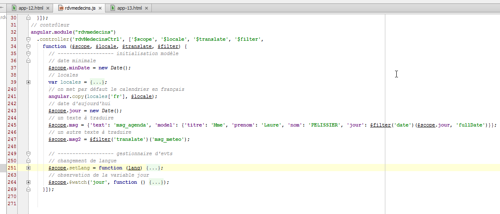
- riga 245: la definizione dell’oggetto [msg];
- riga 245: il campo [text] ha come valore la chiave [msg_agenda], associata a due valori:
- Agenda di {{titolo}} {{nome}} {{cognome}}<br/>il {{giorno}} nel dizionario francese;
- Diario di {{titolo}} {{nome}} {{cognome}}<br/> il {{giorno}} nel dizionario inglese;
Il messaggio da visualizzare ha quindi quattro parametri [titre, prenom, nom, jour];
- riga 245: il campo [model] è un dizionario che assegna un valore a questi quattro parametri. C'è una difficoltà per il parametro [jour]. Si desidera visualizzare il nome completo del giorno. Esso varia a seconda che sia in francese o in inglese. Si utilizza quindi il filtro [date] già impiegato nella vista nella forma {{ giorno | data:'fullDate'}}. È possibile utilizzare qualsiasi filtro nel codice JavaScript nella forma $filter('filter')(valore, complementi), dove $filter è un oggetto predefinito di Angular e 'filter' è il nome del filtro;
- righe 33-34: l’oggetto predefinito $filter viene passato come parametro al controller, il che ne consente l’utilizzo alla riga 245;
Torniamo a un'altra riga della vista visualizzata:
<!-- un terzo testo tradotto dal controller -->
<h3 class="alert alert-danger">{{msg2}}</h3>
Tutte le traduzioni precedenti sono state effettuate nella vista tramite gli attributi del modulo [pascalprecht.translate]. Si può anche decidere di effettuare questa traduzione lato server. È ciò che viene fatto qui. Nel controller (riga 247 nella schermata sopra) è presente il seguente codice:
$scope.msg2 = $filter('translate')('msg_meteo');
Si utilizza la stessa sintassi del filtro «date», poiché anche «translate» è un filtro. Qui si richiede il messaggio chiave «msg_meteo».
Esaminiamo il meccanismo del cambio di lingua. Abbiamo visto che la funzione [config] di configurazione del modulo [rdvmedecins] aveva impostato il francese come lingua predefinita (riga 9 qui sotto):
// configurazione i18n
angular.module("rdvmedecins")
.config(['$translateProvider', function ($translateProvider) {
// messaggi in francese
$translateProvider.translations("fr", {...});
// messaggi in inglese
$translateProvider.translations("en", {...});
// lingua predefinita
$translateProvider.preferredLanguage("fr");
}]);
Ricordiamo inoltre che anche la locale predefinita era il francese. Nell’inizializzazione del controller [rdvmedecins] è stato scritto:
// si imposta la lingua in francese
angular.copy(locales['fr'], $locale);
- riga 2: [locales] è un dizionario che abbiamo creato;
Non vi è alcun collegamento tra l'internazionalizzazione dei messaggi fornita dal modulo [pascalprecht.translate] e la localizzazione delle date che abbiamo implementato. Quest'ultima utilizza una variabile $locale che non viene utilizzata dal modulo [pascalprecht.translate]. Si tratta di due processi che non interagiscono tra loro.
È ora il momento di vedere cosa succede quando l’utente cambia lingua:

- riga 251: al momento del cambio di lingua, viene chiamata la funzione [setLang] con uno dei due parametri ['fr','en'];
- righe 252-257: sono già state spiegate – modificano la variabile [$locale] del calendario. Ciò non ha alcuna incidenza sulla lingua delle traduzioni;
- riga 259: si modifica la lingua delle traduzioni. Si utilizza l’oggetto [$translate] fornito dal modulo [pascalprecht.translate]. A tal fine, è necessario inserirlo nel controller:
// controller
angular.module("rdvmedecins")
.controller('rdvMedecinsCtrl', ['$scope', '$locale', '$translate', '$filter',
function ($scope, $locale, $translate, $filter) {
Nelle righe 3 e 4 sopra riportate, si inserisce l'oggetto $translate;
- il parametro lang della funzione [$translate.use(lang)] deve assumere come valore una delle chiavi utilizzate nella configurazione come primo parametro della funzione [$translateProvider.translations], ovvero 'fr' o 'en'. È proprio così;
- riga 261: si ricalcola il valore di msg2. Perché? Nella vista, dopo il cambio di lingua effettuato dalla riga 259, tutti gli attributi [translate] presenti verranno rivalutati. Questo non accadrà per l’espressione {{msg2}}, che non possiede tale attributo. Pertanto, il suo nuovo valore viene calcolato nel controller. Ciò deve avvenire dopo il cambio di lingua della riga 259 affinché la nuova lingua venga utilizzata per il calcolo di [msg2];
Se ci fermiamo qui, si osservano due anomalie:
 |
- in [1], il giorno è rimasto in francese mentre il resto della vista è in inglese;
- in [2] e [3], il giorno selezionato è il 24 giugno, mentre in [1] il giorno rimane fissato al 20 giugno;
Proviamo a cercare delle spiegazioni prima di trovare delle soluzioni. Il messaggio [1] viene generato nel controller con il seguente codice:
$scope.msg = {'text': 'msg_agenda', 'model': {'titre': 'Mme', 'prenom': 'Laure', 'nom': 'PELISSIER', 'jour': $filter('date')($scope.jour, 'fullDate')}};
e visualizzato nella vista con il seguente codice:
<h3 class="alert alert-warning" translate="{{msg.text}}" translate-values="{{msg.model}}"></h3>
L'anomalia [1] (il giorno è rimasto in francese mentre il resto della vista è in inglese) sembra indicare che, se l'attributo [translate] viene rivalutato al momento di un cambio di lingua, ciò non è avvenuto per l’attributo [translate-values]. È quindi possibile forzare tale ricalcolo nel controller:
// ------------------- gestore eventi
// cambio di lingua
$scope.setLang = function (lang) {
...
// si aggiorna msg2
$scope.msg2 = $filter('translate')('msg_meteo');
// e la data del messaggio
$scope.msg.model.jour = $filter('date')($scope.jour, 'fullDate');
};
Ad ogni cambio di lingua, la riga 8 sopra riportata ricalcola il giorno visualizzato. Ciò risolve effettivamente il primo problema, ma non il secondo (il giorno visualizzato nel messaggio non cambia quando si seleziona un altro giorno nel calendario). La ragione di questo comportamento è la seguente. Il messaggio viene visualizzato nella vista con il codice seguente:
<h3 class="alert alert-warning" translate="{{msg.text}}" translate-values="{{msg.model}}"></h3>
La vista visualizzata V cambia solo se cambia il suo modello M. Tuttavia, in questo caso, la selezione di un nuovo giorno nel calendario innesca un evento che non viene gestito, per cui il modello [msg] non cambia e, di conseguenza, non cambia nemmeno la vista. Modifichiamo quindi nella vista la definizione del calendario:
<datepicker ng-model="jour" show-weeks="true" class="well" min-date="minDate"
ng-click="calendarClick()"></datepicker>
Quanto sopra indica che il clic sul calendario deve essere gestito dalla funzione [$scope.calendarClick]. Questa è la seguente:
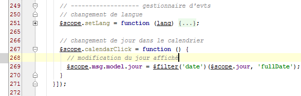
- riga 267: il gestore del clic sul calendario;
- riga 269: si forza l'aggiornamento del giorno visualizzato tramite il messaggio [msg];
3.7.4. Esempio 4: un servizio di configurazione
Torniamo all’architettura di un’applicazione Angular JS:
 |
Ci concentreremo qui sul concetto di servizio. Si tratta di un concetto piuttosto ampio. Se quanto sopra, il livello [DAO] è chiaramente un servizio, qualsiasi oggetto Angular può diventare un servizio:
- un servizio segue una sintassi specifica. Ha un nome e Angular lo riconosce tramite tale nome;
- un servizio può essere iniettato da Angular nei controller e in altri servizi;
Alcuni dei servizi che configureremo nel modulo [rdvmedecins] dovranno essere configurati. Poiché un servizio può essere iniettato in un altro servizio, si è tentati di effettuare la configurazione in un servizio che chiameremo [config] e di iniettarlo nei servizi e nei controller da configurare. Descriviamo ora questo processo.
Duplichiamo [app-13.html] in [app-14.html] e apportiamo le seguenti modifiche:
<div class="container">
<!-- controllo del messaggio in attesa -->
<label>
<input type="checkbox" ng-model="waiting.visible">
<span>Voir le message d'attente</span>
</label>
<!-- il messaggio in attesa -->
<div class="alert alert-warning" ng-show="waiting.visible">
<h1>{{ waiting.text | translate}}
<button class="btn btn-primary pull-right" ng-click="waiting.cancel()">
{{'msg_cancel'|translate}}</button>
<img src="assets/images/waiting.gif" alt=""/>
</h1>
</div>
...
</div>
...
<script type="text/javascript" src="rdvmedecins-02.js"></script>
- righe 3-6: una casella di controllo che determina se visualizzare o meno il messaggio di attesa delle righe 9-15. Il valore della casella di controllo viene inserito nella variabile [waiting.visible] del modello M della vista V. Questo valore è true se la casella è selezionata e false in caso contrario. Funziona in entrambi i sensi. Se assegniamo il valore true alla variabile [waiting.visible], la casella verrà selezionata. Esiste un'associazione bidirezionale tra la vista V e il suo modello M;
- righe 9-15: un messaggio di attesa con un pulsante per annullare l’attesa (riga 11);
- riga 9: il messaggio è visibile solo se la variabile [waiting.visible] ha il valore true. Pertanto, quando si seleziona la casella di riga 4:
- il valore true viene assegnato alla variabile [waiting.visible] (ng-model, riga 4);
- poiché si è verificata una modifica al modello M, la vista V viene automaticamente rivalutata. Il messaggio di attesa verrà quindi reso visibile (ng-show, riga 9);
- il ragionamento è analogo quando si deseleziona la casella della riga 4: il messaggio di attesa viene nascosto;
- riga 10: il messaggio di attesa viene tradotto (filtro translate);
- riga 11: quando si fa clic sul pulsante, viene eseguito il metodo [waiting.cancel()] (attributo ng-click);
- riga 12: il testo del pulsante viene tradotto;
- riga 19: il codice JavaScript dell'applicazione viene inserito in un nuovo file JS [rdvmedecins-02] per non perdere il codice già scritto e che ora deve essere riorganizzato;
Si ottiene la seguente visualizzazione:
 |
- in [1], casella non spuntata;
- in [2], casella selezionata;
Lo script [rdvmedecins-02] è una riorganizzazione dello script [rdvmedecins]:

- riga 6: il modulo [rdvmedecins] dell'applicazione;
- righe 9-10: la funzione di configurazione dell'applicazione;
- righe 38-39: il servizio [config];
- righe 283-284: il controller [rdvMedecinsCtrl];
In precedenza, avevamo definito nel controller il dizionario locales={'fr':..., 'en': ...}, che contava 200 righe. Questo dizionario è chiaramente un elemento di configurazione, pertanto lo si migra nel servizio [config] alle righe 38-39. Questo servizio è definito come segue:

- righe 38-39: viene creato un servizio con la funzione [factory] dell’oggetto [angular.module]. La sintassi di questa funzione è la stessa delle precedenti: factory('nom_service', ['O1','O2', ...., 'On', function (O1, O2, ..., On){...}]), dove gli Oi sono i nomi degli oggetti riconosciuti da Angular (predefiniti o creati dallo sviluppatore) che Angular inietta come parametro della funzione factory. Poiché in questo caso la funzione non ha parametri, è stata utilizzata una sintassi più breve, anch’essa accettata: factory('nom_service', function (){...}]);
- riga 40: la funzione [factory] deve implementare il servizio tramite un oggetto che restituisce. È proprio questo oggetto a costituire il servizio. Ecco perché la funzione viene chiamata factory (fabbrica di creazione di oggetti);
In generale, il codice di un servizio ha la forma:
Angular.module('nom_module')
.factory('nom_service',['O1','O2', ...., 'On', function (O1, O2, ..., On){
// preparazione del servizio
...
// si restituisce l'oggetto che implementa il servizio
return {
// campi
...
// metodi
...
}
});
- riga 6: viene restituito un oggetto JS che può contenere sia campi che metodi. Sono questi ultimi a garantire il servizio;
In questo caso il servizio [config] definisce solo campi e nessun metodo. Qui verranno inseriti tutti i parametri configurabili nell’applicazione:
- righe 42-47: le chiavi dei messaggi da tradurre;
- righe 59-62: i URL dell’applicazione;
- righe 64-69: i URL del servizio web remoto;
- riga 71: una chiamata HTTP verso un servizio web che non risponde; l'operazione potrebbe richiedere molto tempo. Qui si imposta a 1 secondo il tempo massimo di attesa per la risposta del servizio web. Trascorso questo tempo, la chiamata HTTP fallisce e viene generata un'eccezione JS;
- riga 73: prima di ogni chiamata al server, si simulerà un'attesa la cui durata è qui impostata in millisecondi. Un valore di 0 indica che non vi è alcuna attesa. L’applicazione sarà realizzata in modo tale che l’utente possa annullare un’operazione da lui avviata. Affinché possa essere annullata, l’operazione deve durare almeno alcuni secondi. Utilizzeremo questa attesa artificiale per simulare operazioni di lunga durata;
- riga 75: in modalità [debug=true], nella vista corrente vengono visualizzate informazioni aggiuntive. Per impostazione predefinita, questa modalità è attivata. In produzione, si imposterebbe questo campo su false;
- righe 77-278: il dizionario delle due impostazioni locali «fr» e «en». In precedenza si trovava nel controller [rdvMedecinsCtrl];
Con questo servizio, il controller [rdvMedecinsCtrl] subisce le seguenti modifiche:

- righe 284-285: il servizio [config] viene inserito nel controller;
- riga 290: il dizionario [locales] si trova ora nel servizio [config] e non più nel controller;
- riga 294: l'oggetto [waiting] che controlla la visualizzazione del messaggio di attesa. La chiave del messaggio di attesa si trova nel servizio [config] (campo text). Per impostazione predefinita il messaggio di attesa è nascosto (campo visibile). Il campo cancel ha come valore il nome della funzione alla riga 316. Questo campo è quindi un metodo o una funzione;
- riga 316: la funzione [cancel] è privata (non è stato scritto $scope.cancel=function(){}). Torniamo al codice del pulsante di annullamento:
<button class="btn btn-primary pull-right" ng-click="waiting.cancel()">
Quando l’utente fa clic sul pulsante di annullamento, viene chiamato il metodo [$scope.waiting.cancel()]. In definitiva, viene eseguita la funzione privata cancel alla riga 316. Essa si limita a nascondere il messaggio di attesa impostando a false la variabile del modello [waiting.visible] (riga 318);
3.7.5. Esempio 5: programmazione asincrona
Presentiamo ora un nuovo servizio con un nuovo concetto, quello della programmazione asincrona.
 |
La nostra applicazione avrà tre servizi:
- [config]: il servizio di configurazione che abbiamo appena presentato;
- [utils]: un servizio di metodi di utilità. Ne presenteremo due;
- [dao]: il servizio di accesso al servizio web per la prenotazione degli appuntamenti. Lo presenteremo prossimamente;
Scriveremo la seguente applicazione:
 |
 |
- si tratta di visualizzare il banner [2] per un periodo di tempo stabilito da [1]. L'attesa può essere annullata tramite [3].
Duplichiamo [app-01.html] in [app-15.html] e modifichiamo il codice come segue:
<!DOCTYPE html>
<html ng-app="rdvmedecins">
<head>
<title>RdvMedecins</title>
...
</head>
<body ng-controller="rdvMedecinsCtrl">
<div class="container">
<!-- il messaggio di attesa -->
<div class="alert alert-warning" ng-show="waiting.visible" ng-cloak="">
<h1>{{ waiting.text | translate}}
<button class="btn btn-primary pull-right" ng-click="waiting.cancel()">{{'msg_cancel'|translate}}</button>
<img src="assets/images/waiting.gif" alt=""/>
</h1>
</div>
<!-- il modulo -->
<div class="alert alert-info" ng-hide="waiting.visible">
<div class="form-group">
<label for="waitingTime">{{waitingTimeText | translate}}</label>
<input type="text" id="waitingTime" ng-model="waiting.time"/>
</div>
<button class="btn btn-primary" ng-click="execute()">Exécuter</button>
</div>
</div>
..
<script type="text/javascript" src="rdvmedecins-03.js"></script>
</body>
</html>
- riga 11: l'attributo [ng-cloak] impedisce la visualizzazione del campo prima che siano state calcolate le espressioni Angular al suo interno. Ciò evita una breve visualizzazione del campo prima della valutazione dell'attributo [ng-show], che ne provocherà di fatto l'occultamento;
- riga 22: l'input dell'utente (tempo di attesa) verrà memorizzato nel modello [waiting.time] (attributo ng-model);
- riga 28: la pagina utilizza un nuovo script [rdvmedecins-03];
Lo script [rdvmedecins-03] è il seguente:

- riga 6: il modulo Angular che gestisce l'applicazione;
- riga 10: la funzione [config] utilizzata per l'internazionalizzazione dei messaggi;
- riga 41: il servizio [config] che abbiamo descritto;
- riga 286: il servizio [utils] che realizzeremo;
- riga 315: il controller [rdvmedecinsCtrl] che realizzeremo;
Aggiungiamo alla funzione [config] una nuova chiave di messaggio (righe 6, 11):
angular.module("rdvmedecins")
.config(['$translateProvider', function ($translateProvider) {
// messaggi in francese
$translateProvider.translations("fr", {
...
'msg_waiting_time_text': "Tempo di attesa: "
});
// messaggi in inglese
$translateProvider.translations("en", {
...
'msg_waiting_time_text': "Tempo di attesa:"
});
// lingua predefinita
$translateProvider.preferredLanguage("fr");
}]);
Aggiungiamo al servizio [config] una nuova riga (riga 6) per questa chiave di messaggio:
angular.module("rdvmedecins")
.factory('config', function () {
return {
// messaggi da internazionalizzare
...
waitingTimeText: 'msg_waiting_time_text',
Il servizio [utils] contiene due metodi (righe 4, 12):
angular.module("rdvmedecins")
.factory('utils', ['config', '$timeout', '$q', function (config, $timeout, $q) {
// visualizzazione della rappresentazione JSON di un oggetto
function debug(message, data) {
if (config.debug) {
var text = data ? message + " : " + angular.toJson(data) : message;
console.log(text);
}
}
// attesa
function waitForSomeTime(milliseconds) {
// attesa asincrona in millisecondi
var task = $q.defer();
$timeout(function () {
task.resolve();
}, milliseconds);
// si restituisce l'attività
return task;
};
// istanza del servizio
return {
debug: debug,
waitForSomeTime: waitForSomeTime
}
}]);
- riga 2: il servizio si chiama [utils] (1° parametro). Ha dipendenze da tre servizi: due servizi Angular predefiniti, $timeout e $q, e il servizio config. Il servizio [$timeout] consente di eseguire una funzione dopo che è trascorso un certo periodo di tempo. Il servizio [$q] consente di creare attività asincrone;
- riga 4: una funzione locale [debug];
- riga 12: una funzione locale [waitForSomeTime];
- righe 23-26: l’istanza del servizio [utils]. Si tratta di un oggetto che espone due metodi, quelli delle righe 4 e 12. Si noti che i campi dell’oggetto possono avere nomi qualsiasi. Per coerenza, sono stati denominati con i nomi delle funzioni a cui fanno riferimento;
- righe 4-9: il metodo [debug] scrive sulla console un messaggio [message] ed eventualmente la rappresentazione JSON di un oggetto [data]. Ciò consente di visualizzare oggetti di qualsiasi complessità;
- righe 12-20: il metodo [waitForSomeTime] crea un'attività asincrona della durata di [milliseconds] millisecondi;
- riga 14: creazione di un'attività tramite l'oggetto predefinito [$q] (https://docs.angularjs.org/api/ng/service/$q). Di seguito, l'oggetto API dell'attività denominata [deferred] nella documentazione di Angular:

- un'attività asincrona [task] viene creata dall'istruzione [$q.defer()];
- viene completata utilizzando uno dei due metodi:
- [task.resolve(value)]: che conclude l'attività con esito positivo e restituisce il valore [value] a chi è in attesa del completamento dell'attività;
- [task.reject(value)]: che termina l'attività con esito negativo e restituisce il valore [value] a coloro che attendono la fine dell'attività;
L'attività [task] può fornire regolarmente informazioni a chi ne attende il completamento:
- [task.notify(value)]: invia il valore [value] a coloro che attendono il completamento dell'attività. L'attività continua a essere eseguita;
Chi desidera attendere il completamento del processo utilizza il campo [promise] dello stesso:
L’oggetto [promise] ha il seguente API (http://www.frangular.com/2012/12/api-promise-angularjs.html):

Per gestire sia il successo che il fallimento dell'operazione, si scriverà:
- riga 1: si recupera la promessa dell'attività;
- riga 2: si definiscono le funzioni da eseguire in caso di esito positivo o negativo. È possibile non specificare alcuna funzione in caso di esito negativo. La funzione [successCallback] verrà eseguita solo al termine dell'attività [task], a condizione che l'attività [task.resolve()] sia stata completata con successo. La funzione [errorCallBack] verrà eseguita solo al termine dell'attività [task] in caso di esito negativo dell'attività [task.reject()].
- riga 3: si definisce la funzione da eseguire dopo che una delle due funzioni precedenti è stata eseguita. Qui si inserisce il codice comune alle due funzioni [successCallback, errorCallBack].
Torniamo al codice della funzione [waitForSomeTime]:
// attesa
function waitForSomeTime(milliseconds) {
// attesa asincrona di millisecondi
var task = $q.defer();
$timeout(function () {
task.resolve();
}, milliseconds);
// si restituisce il task
return task;
};
- riga 4: viene creata un'attività;
- righe 5-7: l’oggetto [$timeout] consente di definire una funzione (1° parametro) che viene eseguita dopo un determinato intervallo di tempo espresso in millisecondi (2° parametro). In questo caso, il secondo parametro della funzione [$timeout] è il parametro del metodo (riga 1);
- riga 6: allo scadere del tempo [milliseconds], l’attività viene completata con successo;
- riga 9: viene restituita l’attività [task]. È importante comprendere che la riga 9 viene eseguita immediatamente dopo la definizione dell’oggetto [$timeout]. Non si attende che il timeout [milliseconds] sia scaduto. Il codice delle righe 2-10 viene quindi eseguito in due momenti diversi:
- una prima volta, quando viene definito l’oggetto [$timeout];
- una seconda volta quando il timeout [milliseconds] è scaduto;
Si tratta di una funzione asincrona: il suo risultato viene ottenuto in un momento successivo a quello della sua esecuzione.
Il codice del controller che utilizza il servizio [config] è il seguente:
// controllore
angular.module("rdvmedecins")
.controller('rdvMedecinsCtrl', ['$scope', 'utils', 'config', '$filter',
function ($scope, utils, config, $filter) {
// ------------------- inizializzazione modello
// messaggio di attesa
$scope.waiting = {text: config.msgWaiting, visible: false, cancel: cancel, time: undefined};
$scope.waitingTimeText = config.waitingTimeText;
// attività in attesa
var task;
// log
utils.debug("libellé temps d'attente", $filter('translate')($scope.waitingTimeText));
utils.debug("locales['fr']=", config.locales['fr']);
// esecuzione azione
$scope.execute = function () {
// log
utils.debug('début', new Date());
// viene visualizzato il messaggio di attesa
$scope.waiting.visible = true;
// attesa simulata
task = utils.waitForSomeTime($scope.waiting.time);
// fine attesa
task.promise.then(function () {
// operazione riuscita
utils.debug('fin', new Date());
}, function () {
// fallimento
utils.debug('Opération annulée')
});
task.promise['finally'](function () {
// fine dell'attesa in tutti i casi
$scope.waiting.visible = false;
});
};
// annullamento dell'attesa
function cancel() {
// l'attività è stata completata
task.reject();
}
}]);
- riga 3: il controller utilizza il servizio [config];
- riga 7: è stato aggiunto il campo [time] all'oggetto [$scope.waiting]. L'oggetto [$scope.waiting.time] riceve il valore del tempo di attesa impostato dall'utente;
- riga 8: la chiave del messaggio di attesa visualizzato dalla vista viene inserita nel modello [$scope.waitingTimeText]. In generale, tutto ciò che viene visualizzato da una vista V deve essere inserito nell’oggetto [$scope];
- riga 10: una variabile locale. Non è esposta alla vista V;
- righe 12-13: utilizzo del metodo [debug] del servizio [config]. Si ottiene il seguente risultato sulla console:
Alla riga 2, si ottiene la notazione JSON dell'oggetto locales['fr'].
- riga 16: il metodo eseguito quando l'utente fa clic sul pulsante [Executer];
- riga 18: visualizza l'ora di inizio dell'esecuzione del metodo;
- riga 22: si avvia l'attività [waitForSomeTime]. Non si attende il suo completamento. L'esecuzione prosegue con la riga 24 successiva;
- righe 24-30: si definiscono le funzioni da eseguire quando l’attività termina con successo (riga 26) e in caso di errore (riga 29);
- riga 26: visualizza l'ora di fine esecuzione del metodo;
- riga 29: segnala che l'operazione è stata annullata. Ciò avviene solo quando l'utente fa clic sul pulsante [Annuler]. L'istruzione alla riga 41 interrompe quindi l'attività asincrona con un codice di errore;
- righe 31-34: si definisce la funzione da eseguire dopo l’esecuzione di una delle due funzioni precedenti;
È importante comprendere le sequenze di esecuzione di questo codice. Nel caso in cui l’utente imposti un timeout di 3 secondi e non annulli l’attesa:
- quando fa clic sul pulsante [Exécuter], viene eseguita la funzione [$scope.execute]. Le righe 16-34 vengono eseguite senza attendere i 3 secondi. Al termine di questa esecuzione, la vista V viene sincronizzata con il modello M. Viene visualizzato il messaggio di attesa (ng-show=$scope.waiting.visible=true, riga 20) e il modulo viene nascosto (ng-hide=$scope.waiting.visible=true, riga 20);
- da questo momento l’utente può interagire nuovamente con la vista. In particolare, può cliccare sul pulsante [Annuler];
- se non lo fa, dopo 3 secondi viene eseguita la funzione [$timeout] (cfr. righe 5-7 di seguito):
// attesa
function waitForSomeTime(milliseconds) {
// attesa asincrona di millisecondi millisecondi
var task = $q.defer();
$timeout(function () {
task.resolve();
}, milliseconds);
// si restituisce l'attività
return task;
};
- dopo 3 secondi, quindi, viene eseguito il codice. Questo codice conclude l’attività [task] con un codice di successo (resolve). Ciò attiverà l’esecuzione di tutti i codici che erano in attesa di tale conclusione (riga 4 qui sotto):
// attesa simulata
task = utils.waitForSomeTime($scope.waiting.time);
// fine dell'attesa
task.promise.then(function () {
// successo
utils.debug('fin', new Date());
}, function () {
// fallimento
utils.debug('Opération annulée')
});
task.promise['finally'](function () {
// fine dell'attesa in ogni caso
$scope.waiting.visible = false;
});
- la riga 6 sopra (conclusione con esito positivo) verrà quindi eseguita. Successivamente sarà il turno delle righe 11-14. Una volta eseguito questo codice, si ritorna alla vista V, che verrà quindi sincronizzata con il suo modello M. Il messaggio di attesa viene nascosto (ng-show=$scope.waiting.visible=false, riga 13) e il modulo viene visualizzato (ng-hide=$scope.waiting.visible=false, riga 13);
Le schermate sono quindi le seguenti:
Come si vede sopra, il tempo di attesa è di 3 secondi (06:01-05:58) tra l’inizio e la fine dell’attesa. Se invece l’utente annulla l’attesa prima dei 3 secondi, viene visualizzato quanto segue:
Infine, è importante comprendere che in ogni momento esiste un solo thread di esecuzione, denominato thread di UI (interfaccia utente). La fine di un'operazione asincrona viene segnalata da un evento, esattamente come avviene quando si fa clic su un pulsante. Questo evento non viene elaborato immediatamente. Viene inserito nella coda degli eventi in attesa di esecuzione. Quando arriva il suo turno, viene elaborato. Tale elaborazione utilizza il thread di UI e quindi, durante questo periodo, l’interfaccia rimane bloccata. Non reagisce alle richieste dell’utente. Per questo motivo, è importante che l’elaborazione di un evento sia rapida. Poiché ogni evento viene elaborato dal thread di UI, non è mai necessario risolvere problemi di sincronizzazione tra thread in esecuzione simultanea. In ogni momento, è in esecuzione solo il thread di UI.
3.7.6. Esempio 6: i servizi HTTP
Presentiamo ora il servizio [dao] che comunica con il server web:
 |
3.7.6.1. La vista V
 |
Scriveremo un modulo per richiedere l’elenco dei medici:
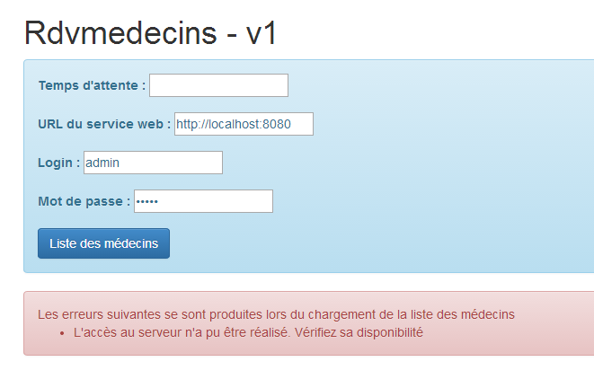
Duplichiamo [app-01.html] in [app-16.html], che poi modifichiamo come segue:
<div class="container" ng-cloak="">
<h1>Rdvmedecins - v1</h1>
<!-- il messaggio di attesa -->
<div class="alert alert-warning" ng-show="waiting.visible" ng-cloak="">
<h1>{{ waiting.text | translate}}
<button class="btn btn-primary pull-right" ng-click="waiting.cancel()">{{'msg_cancel'|translate}}</button>
<img src="assets/images/waiting.gif" alt=""/>
</h1>
</div>
<!-- la richiesta -->
<div class="alert alert-info" ng-hide="waiting.visible">
<div class="form-group">
<label for="waitingTime">{{waitingTimeText | translate}}</label>
<input type="text" id="waitingTime" ng-model="waiting.time"/>
</div>
<div class="form-group">
<label for="urlServer">{{urlServerLabel | translate}}</label>
<input type="text" id="urlServer" ng-model="server.url"/>
</div>
<div class="form-group">
<label for="login">{{loginLabel | translate}}</label>
<input type="text" id="login" ng-model="server.login"/>
</div>
<div class="form-group">
<label for="password">{{passwordLabel | translate}}</label>
<input type="password" id="password" ng-model="server.password"/>
</div>
<button class="btn btn-primary" ng-click="execute()">{{medecins.title|translate:medecins.model}}</button>
</div>
<!-- l'elenco dei medici -->
<div class="alert alert-success" ng-show="medecins.show">
{{medecins.title|translate:medecins.model}}
<ul>
<li ng-repeat="medecin in medecins.data">{{medecin.titre}}{{medecin.prenom}} {{medecin.nom}}</li>
</ul>
</div>
<!-- l'elenco degli errori -->
<div class="alert alert-danger" ng-show="errors.show">
{{errors.title|translate:errors.model}}
<ul>
<li ng-repeat="message in errors.messages">{{message|translate}}</li>
</ul>
</div>
</div>
...
<script type="text/javascript" src="rdvmedecins-04.js"></script>
- righe 13-31: implementano il modulo. Questo non è visibile quando viene visualizzato il messaggio di attesa (ng-hide="waiting.visible"). Da notare che i quattro campi di inserimento sono memorizzati in (attributi ng-model) [waiting.time (ligne 16), server.url (ligne 20), server.login (ligne 24), server.password (ligne 28)];
- righe 34-39: visualizzano l’elenco dei medici. Questo elenco non è sempre visibile (ng-show="medecins.show").
- riga 35: un'alternativa alla sintassi <div ... translate="{{medecins.title}}" translate-values="{{medecins.model}}"> già incontrata;
- riga 36: un elenco non ordinato;
- riga 37: l’elenco dei medici si trova nel modello [medecins.data]. La direttiva Angular [ng-repeat] consente di scorrere un elenco. La sintassi ng-repeat="medecin in medecins.data" richiede che il tag <li> venga ripetuto per ogni elemento dell'elenco [medecins.data]. L'elemento corrente dell'elenco è denominato [medecin];
- riga 37: per ogni <li>, vengono scritti il titolo, il nome e il cognome del medico corrente indicato dalla variabile [medecin];
- righe 42-47: visualizzano l'elenco degli errori. Questo elenco non è sempre visibile (ng-show="errors.show"). La visualizzazione segue lo stesso modello utilizzato per l'elenco dei medici. In generale, per visualizzare un elenco di oggetti si utilizza la direttiva Angular [ng-repeat];
- riga 51: il codice JavaScript si trova ora nel file [rdvmedecins-04]
3.7.6.2. Il controller C e il modello M
 |
Il codice JavaScript si evolve come segue:

- righe 6-9: il modulo [rdvmedecins] dichiara una dipendenza dal modulo [base64] fornito dalla libreria [angular-base64], che è una delle dipendenze del progetto. Questo modulo serve a codificare in Base64 la stringa [login:password] inviata al servizio web per l’autenticazione;
- righe 12-13: la funzione di inizializzazione che contiene i nostri messaggi internazionalizzati. Appaiono nuovi messaggi. Non li presenteremo più;
- righe 69-70: il servizio [config] che configura la nostra applicazione. Vi sono state aggiunte nuove chiavi di messaggio. Non le presenteremo più;
- righe 318-319: il servizio [utils] che contiene metodi di utilità. Ne vengono aggiunti di nuovi. Li presenteremo;
- righe 385-386: il servizio [dao] incaricato delle comunicazioni con il servizio web. È su di esso che ci concentreremo;
- righe 467-468: il controller C della vista V che abbiamo appena presentato. Lo illustreremo ora poiché è lui il «direttore d’orchestra» che risponde alle richieste dell’utente;
3.7.6.3. Il controller C
Il codice del controller è il seguente:
angular.module("rdvmedecins")
.controller('rdvMedecinsCtrl', ['$scope', 'utils', 'config', 'dao', '$translate',
function ($scope, utils, config, dao, $translate) {
// ------------------- inizializzazione modello
// modello
$scope.waiting = {text: config.msgWaiting, visible: false, cancel: cancel, time: undefined};
$scope.waitingTimeText = config.waitingTimeText;
$scope.server = {url: undefined, login: undefined, password: undefined};
$scope.medecins = {title: config.listMedecins, show: false, model: {}};
$scope.errors = {show: false, model: {}};
$scope.urlServerLabel = config.urlServerLabel;
$scope.loginLabel = config.loginLabel;
$scope.passwordLabel = config.passwordLabel;
// attività asincrona
var task;
// esecuzione dell'azione
$scope.execute = function () {
// si aggiorna il UI
$scope.waiting.visible = true;
$scope.medecins.show = false;
$scope.errors.show = false;
// attesa simulata
task = utils.waitForSomeTime($scope.waiting.time);
var promise = task.promise;
// attesa
promise = promise.then(function () {
// si richiede l'elenco dei medici;
task = dao.getData($scope.server.url, $scope.server.login, $scope.server.password, config.urlSvrMedecins);
return task.promise;
});
// si analizza il risultato della chiamata precedente
promise.then(function (result) {
// result={err: 0, data: [med1, med2, ...]}
// risultato={err: n, messaggi: [msg1, msg2, ...]}
if (result.err == 0) {
// si inseriscono i dati acquisiti nel modello
$scope.medecins.data = result.data;
// si aggiorna il UI
$scope.medecins.show = true;
$scope.waiting.visible = false;
} else {
// si sono verificati degli errori durante il recupero dell'elenco dei medici
$scope.errors = { title: config.getMedecinsErrors, messages: utils.getErrors(result), show: true, model: {}};
// si aggiorna il file UI
$scope.waiting.visible = false;
}
});
};
// in attesa di annullamento
function cancel() {
// si sta completando l'attività
task.reject();
// si sta aggiornando il file UI
$scope.waiting.visible = false;
$scope.medecins.show = false;
$scope.errors.show = false;
}
}
])
;
- riga 2: il controller ha una nuova dipendenza, quella dal servizio [dao];
- righe 6-13: il modello M della vista V viene inizializzato per la prima visualizzazione della stessa;
- riga 8: [$scope.server] verrà utilizzato per recuperare tre delle quattro informazioni del modulo V, mentre la quarta è memorizzata in [$scope.waiting.time] (riga 6);
- riga 9: [$scope.medecins] raccoglierà le informazioni necessarie per la visualizzazione dell'elenco dei medici:
<!-- l'elenco dei medici -->
<div class="alert alert-success" ng-show="medecins.show">
{{medecins.title|translate:medecins.model}}
<ul>
<li ng-repeat="medecin in medecins.data">{{medecin.titre}}{{medecin.prenom}} {{medecin.nom}}</li>
</ul>
</div>
L'attributo [medecins.title] costituirà il titolo del banner. È definito nel servizio [config]. L'attributo [medecins.show] controllerà se visualizzare o meno il banner (attributo ng-show="medecins.show"). L'attributo [medecins.model] è un dizionario vuoto e rimarrà tale. Serve semplicemente a illustrare l'uso della variante di traduzione utilizzata alla riga 3. Non è ancora definito l'attributo [medecins.data], che conterrà l'elenco dei medici (riga 5).
- riga 10: [$scope.errors] raccoglierà le informazioni necessarie per la visualizzazione dell'elenco degli errori:
<!-- l'elenco degli errori -->
<div class="alert alert-danger" ng-show="errors.show">
{{errors.title|translate:errors.model}}
<ul>
<li ng-repeat="message in errors.messages">{{message|translate}}</li>
</ul>
</div>
L'attributo [errors.title] sarà il titolo del banner. È definito nel servizio [config]. L'attributo [errors.show] controllerà se visualizzare o meno il banner (attributo ng-show="errors.show"). L'attributo [errors.model] è un dizionario vuoto e rimarrà tale. Serve semplicemente a illustrare l'utilizzo della variante di traduzione utilizzata alla riga 3. Non ancora definito, l'attributo [errors.messages] conterrà l'elenco dei messaggi di errore da visualizzare (riga 5).
- riga 16: l’attività asincrona. Il controller avvierà in successione due attività asincrone. I riferimenti a queste attività successive saranno inseriti nella variabile [task]. Ciò consentirà di annullarle (riga 55);
- riga 19: il metodo eseguito quando l’utente fa clic sul pulsante [Liste des médecins]:
<button class="btn btn-primary" ng-click="execute()">Liste des médecins</button>
- righe 21-23: l'interfaccia visiva viene aggiornata: viene visualizzato il messaggio di attesa, tutto il resto viene nascosto;
- riga 25: si crea l'attività asincrona di attesa. Si riceverà un segnale (attività completata) allo scadere del tempo inserito dall'utente nel modulo;
- riga 26: si recupera la promessa dell’attività asincrona. È con questa che opera il programma che avvia l’attività. È tuttavia necessario disporre del riferimento dell’attività stessa per poterla annullare (riga 55);
- righe 28-32: si definisce il lavoro da svolgere al termine dell’attesa;
- riga 30: si utilizza il metodo [dao.getData] per avviare una nuova attività asincrona. Gli si passano le informazioni di cui ha bisogno:
- il URL radice del servizio web [$scope.server.url], ad esempio [http://localhost:8080];
- il login [$scope.server.login] per l’autenticazione, ad esempio [admin];
- la password [$scope.server.password] per l'autenticazione, ad esempio [admin];
- l'URL che fornisce il servizio richiesto [config.urlSvrMedecins], in questo caso [/getAllMedecins]. In totale, l'URL completo sarà [http://localhost:8080/getAllMedecins];
Il metodo [dao.getData] restituisce un risultato che può assumere due forme:
- (continua)
- {err: 0, data: [med1, med2, ...]} dove [medi] è un oggetto che rappresenta un medico (titolo, nome, cognome),
- {err: n, messages: [msg1, msg2, ...]} dove [msgi] è un messaggio di errore e n è diverso da 0;
- riga 31: viene restituita la promessa dell'attività. A questo punto c'è qualcosa da chiarire. Abbiamo due promesse:
- promise.then(): restituisce una prima promessa [promise1];
- return task.promise: restituisce una seconda promessa [promise2];
- alla fine promise=promise.then(...; return task.promise) è una catena di due promesse [promise2.promise1]. [promise1] verrà valutata solo quando sarà ottenuta la promessa [promise2], ovvero quando l'attività [dao.getData] sarà terminata. La promessa [promise1] non dipende da alcuna attività asincrona. Verrà quindi ottenuta immediatamente;
- righe 34-50: dalla spiegazione precedente ne consegue che queste righe verranno eseguite solo quando l’attività [dao.getData] sarà terminata. Il parametro [result] passato alla funzione della riga 34 viene costruito dal metodo [dao.getData] e trasmesso al codice chiamante tramite l’operazione [task.resolve(result)], dove [result] ha la seguente forma:
- {err: 0, data: [med1, med2, ...]} dove [medi] è un oggetto che rappresenta un medico (titolo, nome, cognome),
- {err: n, messages: [msg1, msg2, ...]} dove [msgi] è un messaggio di errore e n è diverso da 0;
- riga 37: si controlla il codice di errore [result.err];
- righe 38-42: se non ci sono errori (result.err==0), allora si recupera l'elenco dei medici e lo si visualizza;
- righe 44-47: se invece c'è un errore (result.err != 0), allora si recupera l'elenco dei messaggi di errore e lo si visualizza;
- righe 53-56: il messaggio di attesa con il relativo pulsante di annullamento rimane visibile finché le due operazioni asincrone non sono terminate. Vediamo cosa succede a seconda del momento in cui avviene l’annullamento:
- occorre innanzitutto comprendere che le righe 19-50 vengono eseguite in un unico blocco. Viene quindi avviata una sola attività asincrona, quella della riga 25;
- dopo questa prima esecuzione, la vista V viene aggiornata e quindi il banner di attesa e il relativo pulsante di annullamento sono visibili. Se l’utente annulla l’attesa prima che l’attività della riga 25 sia terminata, viene eseguito il metodo della riga 53 e l’attività viene annullata con esito negativo (riga 55);
- righe 56-59: l’interfaccia viene aggiornata: il modulo viene visualizzato nuovamente e tutto il resto viene nascosto,
- si torna quindi alla vista V e il browser elaborerà l’evento successivo. Poiché l’attività è terminata, viene ottenuta la promessa relativa a tale attività, il che genera un evento. Questo viene quindi elaborato;
- vengono quindi eseguite le righe 28-32. Non è definita alcuna funzione per il caso di errore, quindi non viene eseguito alcun codice. Si ottiene una nuova promessa, quella sempre restituita da [promise.then] e sempre ottenuta,
- una volta elaborato l’evento, si ritorna alla vista V e il browser elaborerà l’evento successivo. Poiché la promessa [promise] della riga 28 è stata elaborata, quella della riga 34 verrà risolta, il che provocherà un nuovo evento. Questo viene quindi elaborato;
- le righe 34-49 verranno quindi eseguite a loro volta, poiché la promessa utilizzata nella riga 34 è stata soddisfatta. Ancora una volta, poiché non è stata definita alcuna funzione per il caso di fallimento, non viene eseguito alcun codice,
- si arriva così alla riga 50. Non vi è più alcuna attesa di attività e viene visualizzata la nuova vista V;
- supponiamo ora che l’annullamento avvenga mentre il secondo task asincrono [dao.getData] è in esecuzione. Il ragionamento precedente può essere applicato nuovamente. La fine del task provocherà l’esecuzione delle righe 34-50 con un esito di fallimento. Scopriremo presto che il metodo [dao.getData] effettua una chiamata asincrona HTTP al servizio web. Questa chiamata non verrà annullata, ma il suo risultato non verrà utilizzato.
È importante comprendere questo continuo andirivieni tra la visualizzazione della vista V e l’elaborazione degli eventi del browser. Gli eventi sono generati dall’utente (un clic) o da operazioni di sistema quali la conclusione di un’operazione asincrona. Lo stato di riposo del browser è la visualizzazione della vista V. Viene interrotto da un evento che si verifica e che il browser provvede quindi a elaborare. Non appena l’evento è stato elaborato, il browser ritorna al suo stato di riposo. La vista V viene quindi aggiornata se l’evento elaborato ha modificato il suo modello M. Il browser viene interrotto dal suo stato di riposo dall’evento successivo.
Tutto avviene in un unico thread. Due eventi non vengono mai elaborati contemporaneamente. La loro esecuzione è sequenziale. Il browser passa all’evento successivo solo quando quello precedente gli cede il posto, in genere perché è stato elaborato completamente.
Resta ancora un punto da chiarire. Per visualizzare i messaggi di errore, scriviamo:
$scope.errors = { title: config.getMedecinsErrors, messages: utils.getErrors(result), show: true, model: {}};
L’elenco dei messaggi è fornito dal metodo [utils.getErrors] definito nel servizio [utils]. Questo metodo è il seguente:
// analisi degli errori nella risposta del server JSON
function getErrors(data) {
// dati {err:n, messaggi:[]}, err!=0
// errori
var errors = [];
// codice di errore
var err = data.err;
switch (err) {
case 2 :
// non autorizzato
errors.push('not_authorized');
break;
case 3 :
// vietato
errors.push('forbidden');
break;
case 4 :
// errore locale
errors.push('not_http_error');
break;
case 6 :
// documento non trovato
errors.push('not_found');
break;
default :
// altri casi
errors = data.messages;
break;
}
// se non c'è alcun messaggio, ne viene inserito uno
if (! errors || errors.length == 0) {
errors=['error_unknown'];
}
// si restituisce l'elenco degli errori
return errors;
}
- righe 2-3: il parametro [data] ricevuto è un oggetto con due attributi:
- [err]: un codice di errore;
- [messages]: un elenco di messaggi;
- riga 5: si creerà un array di messaggi di errore. Questi messaggi sono internazionalizzati. Per questo motivo, nell’array non vengono inseriti i messaggi stessi, ma le loro chiavi di internazionalizzazione, tranne che alla riga 27. In questo caso, si utilizza l’attributo [messages] del parametro [data]. Questi messaggi sono messaggi veri e propri e non chiavi di messaggio. La vista V li tratterà tuttavia come chiavi di messaggio che non verranno quindi trovate. In questo caso, il modulo [translate] visualizza la chiave di messaggio che non ha trovato, quindi in questo caso un messaggio vero e proprio. Questo è il risultato desiderato;
- righe 32-34: gestiscono il caso in cui [data.messages] alla riga 27 sia uguale a null. Ciò accade con il servizio web scritto. Si sarebbe dovuto evitare questo caso.
3.7.6.4. Il servizio [dao]
 |
Il servizio [dao] gestisce gli scambi HTTP con il servizio web / JSON. Il suo codice è il seguente:
angular.module("rdvmedecins")
.factory('dao', ['$http', '$q', 'config', '$base64', 'utils',
function ($http, $q, config, $base64, utils) {
// log
utils.debug("[dao] init");
// ----------------------------------metodi privati
// recupera i dati dal servizio web
function getData(serverUrl, username, password, urlAction, info) {
// operazione asincrona
var task = $q.defer();
// URL della richiesta HTTP
var url = serverUrl + urlAction;
// autenticazione di base
var basic = "Basic " + $base64.encode(username + ":" + password);
// la risposta
var réponse;
// tutte le richieste HTTP devono essere autenticate
var headers = $http.defaults.headers.common;
headers.Authorization = basic;
// si effettua la richiesta HTTP
var promise;
if (info) {
promise = $http.post(url, info, {timeout: config.timeout});
} else {
promise = $http.get(url, {timeout: config.timeout});
}
promise.then(success, failure);
// si restituisce la task stessa affinché possa essere annullata
return task;
// Operazione riuscita
function success(response) {
// response.data={status:0, data:[med1, med2, ...]} oppure {status:x, data:[msg1, msg2, ...]
utils.debug("[dao] getData[" + urlAction + "] success réponse", response);
// risposta
var payLoad = response.data;
réponse = payLoad.status == 0 ? {err: 0, data: payLoad.data} : {err: 1, messages: payLoad.data};
// si restituisce la risposta
task.resolve(réponse);
}
// errore
function failure(response) {
utils.debug("[dao] getData[" + urlAction + "] error réponse", response);
// si analizza lo stato
var status = response.status;
var error;
switch (status) {
case 401 :
// non autorizzato
error = 2;
break;
case 403:
// vietato
error = 3;
break;
case 404:
// non trovato
error = 6;
break;
case 0:
// errore locale
error = 4;
break;
default:
// altro
error = 5;
}
// si sta fornendo la risposta
task.resolve({err: error, messages: [response.statusText]});
}
}
// --------------------- istanza del servizio [dao]
return {
getData: getData
}
}]);
- righe 77-79: il servizio ha un unico campo: il metodo [getData] che consente di ottenere informazioni dal servizio web / JSON;
- riga 2: compare una dipendenza [$http] che non avevamo ancora incontrato. Si tratta di un servizio predefinito di Angular che consente il dialogo HTTP con un'entità remota;
- riga 6: un log per vedere in quale momento del ciclo di vita dell’applicazione viene eseguito il codice;
- riga 10: il metodo [getData] accetta cinque parametri:
- [serverUrl]: l’URL radice del servizio web (http://localhost:8080);
- [urlAction]: l'URL del servizio specifico richiesto (/getAllMedecins);
- [username]: il nome utente;
- [password]: la sua password;
- [info]: oggetto che raccoglie informazioni aggiuntive quando il codice URL del servizio specifico richiesto viene richiesto tramite un'operazione POST. Nel caso dell'URL (/getAllMedecins), questo parametro non è stato passato. È quindi [undefined];
- riga 12: si crea un'attività asincrona;
- riga 14: l'URL completa il servizio richiesto (http://localhost:8080/getAllMedecins);
- riga 16: l’autenticazione avviene inviando la seguente intestazione HTTP:
dove [code] è il codice Base64 della stringa [username:password];
La riga 16 costruisce la parte [Basic code] dell'intestazione HTTP;
- riga 18: la risposta del servizio web;
- riga 20: le intestazioni HTTP inviate per impostazione predefinita da Angular in una richiesta HTTP sono definite nell'oggetto [$http.defaults.headers.common]. L'intestazione [Authorization:Basic code] non ne fa parte;
- riga 21: lo si aggiunge alle intestazioni HTTP da inviare sistematicamente. A sinistra dell’assegnazione c’è l’intestazione [Authorization] da inizializzare e a destra il valore dell’intestazione, in questo caso il valore definito alla riga 16. Quindi, se si scrive:
Angular invierà l’intestazione HTTP:
- riga 23: i metodi del servizio [$http] restituiscono delle promesse. Queste saranno memorizzate nella variabile [promise];
- riga 27: poiché in questo caso il parametro [info] ha il valore [undefined], viene eseguita la riga 27. L'URL (http://localhost:8080/getAllMedecins) viene richiesta con un GET. Per evitare un'attesa troppo lunga, si imposta un tempo massimo di attesa (timeout) per ottenere la risposta dal server. Per impostazione predefinita, tale tempo è di un secondo;
- riga 29: si definiscono i due metodi da eseguire quando si ottiene la promessa:
- [success]: definita alla riga 34, è il metodo da eseguire quando la promessa viene soddisfatta a seguito del completamento con successo dell'attività;
- [failure]: definito alla riga 45, è il metodo da eseguire quando la promessa viene risolta in caso di fallimento dell'attività;
- entrambi i metodi (si dovrebbe dire funzioni) sono definiti all’interno della funzione [getData]. Ciò è possibile in JavaScript. Le variabili definite in [getData] sono note in entrambe le funzioni interne [success, failure];
- riga 31: viene restituita l’attività creata alla riga 12. A questo punto è necessario ricordare il codice chiamante:
promise = promise.then(function () {
// si richiede l'elenco dei medici;
task = dao.getData($scope.server.url, $scope.server.login, $scope.server.password, config.urlSvrMedecins);
return task.promise;
});
Alla riga 3 sopra riportata, si recupera effettivamente un'attività.
- riga 34: la funzione [success] viene eseguita in un momento successivo, quando la chiamata HTTP termina con successo. Questo concetto di successo è legato alla prima riga di una risposta HTTP. Questa ha la forma:
Il codice è un testo di tre cifre che indica se la chiamata ha avuto esito positivo o meno. In linea di massima, si può dire che i codici 2xx e 3xx indicano esito positivo, mentre gli altri indicano esito negativo. Il testo è una breve spiegazione. Ecco due possibili risposte, una in caso di esito positivo, l’altra in caso di esito negativo:
- riga 36: viene visualizzata sulla console la risposta del server. Nell’errore [404 Not Found], si ottiene qualcosa del tipo:
[dao] getData[/getAllMedecins] error réponse : {"data":"...","status":404,"config":{...},"statusText":"Not Found"}
In questa risposta, utilizzeremo solo i campi [data], [status] e [statusText].
- riga 38: si recupera il campo [data] dalla risposta. Esso avrà una delle seguenti forme:
- {status: 0, data: [med1, med2, ...]} dove [medi] è un oggetto che rappresenta un medico (titolo, nome, cognome),
- {status: n, data: [msg1, msg2, ...]} dove [msgi] è un messaggio di errore e n è diverso da 0;
 |

- riga 39: si costruisce la risposta {0,data} o {n,messaggi}. La prima risposta contiene i medici nel campo [data]. La seconda segnala un errore verificatosi sul lato server. Il server ha gestito l'errore, generando un codice di errore in [err] e un elenco di messaggi di errore in [data]. In entrambi i casi, restituisce un codice HTTP 200 che indica che l'ordine HTTP è stato elaborato completamente. Per questo motivo entrambi i casi vengono gestiti nella stessa funzione [success];
- riga 41: l’attività è terminata ([task.resolve]) e viene restituita una delle due risposte:
- {err: 0, data: [med1, med2, ...]} dove [medi] è un oggetto che rappresenta un medico (titolo, nome, cognome),
- {err: n, messages: [msg1, msg2, ...]} dove [msgi] è un messaggio di errore e n è diverso da 0;
È necessario collegare questo codice al modo in cui tale risposta viene recuperata nel codice chiamante del controller:
// si analizza il risultato della chiamata precedente
promise.then(function (result) {
// result={err: 0, data: [med1, med2, ...]}
// result={err: n, messages: [msg1, msg2, ...]}
...
}
La risposta di [task.resolve(réponse)] si trova sopra nella variabile [result].
- riga 45: la funzione [failure] quando l'operazione asincrona termina con un errore. Esistono due casi possibili:
- il server segnala tale errore restituendo un codice che non è né 2xx né 3xx,
- Angular annulla la chiamata HTTP. In questo caso non viene effettuata alcuna chiamata. Si verifica un'eccezione Angular ma il server non restituisce alcun codice di errore HTTP. Questo accade, ad esempio, se si fornisce un URL non valido che non può essere chiamato;
- riga 46: si visualizza la risposta sulla console;
- riga 48: ricordiamo che la risposta del server ha il formato:
{"data":"...","status":404,"config":{...},"statusText":"Not Found"}
Riga 48: si recupera l'attributo [status] sopra indicato;
- righe 50-70: a partire dal codice di errore HTTP, si genererà un nuovo codice di errore per nascondere ai codici chiamanti la natura HTTP del metodo [dao.getData]. Si può verificare che nel controller che utilizza questo metodo nulla lasci supporre che vi sia una chiamata HTTP all’interno del metodo;
- riga 51: l’errore [401] corrisponde a un’autenticazione non riuscita (ad esempio, password errata),
- riga 55: l’errore [403] corrisponde a una chiamata non autorizzata. L’utente si è autenticato correttamente ma non dispone dei diritti sufficienti per richiedere l’operazione URL che ha richiesto. Ciò accadrà con l’utente [user / user]. Quest’ultimo esiste effettivamente nel database ma non ha il diritto di utilizzare l’applicazione. Solo l’utente [admin / admin] dispone di tale diritto;
- riga 59: l'errore [404] corrisponde a un URL non trovato. L'errore può avere diverse cause:
- l'utente ha commesso un errore di digitazione nell'URL del servizio;
- il servizio web non è stato avviato;
- il servizio web non ha risposto abbastanza rapidamente (tempo di attesa predefinito di un secondo);
- riga 63: il codice di errore HTTP 0 non esiste. Ci troviamo nel caso in cui Angular non abbia effettuato la chiamata HTTP richiesta perché il URL inserito dall'utente non è valido e non può essere chiamato. In seguito incontreremo altri casi in cui Angular non eseguirà la chiamata HTTP richiesta;
- riga 72: l'operazione viene completata con successo (task.resolve) restituendo una risposta del tipo {err, messages}, dove l'array [messages] è costituito dal solo messaggio [response.statusText]. Nel caso in cui Angular non abbia effettuato la chiamata richiesta HTTP, si avrà una stringa vuota;
Ora che disponiamo di una visione sia globale che dettagliata dell’applicazione, possiamo iniziare i test.
3.7.6.5. Test dell’applicazione - 1
Cominciamo con dati di input validi:

 |
- in [1], inseriamo 0 per evitare un'attesa;
- in [2], viene visualizzato un messaggio di errore nonostante gli input siano corretti. Non abbiamo illustrato i diversi messaggi di errore. Quello visualizzato in [2] è un messaggio generico associato all’errore 0, che corrisponde a un’eccezione di Angular. Angular ha riscontrato un problema che gli ha impedito di effettuare una chiamata HTTP. In questi casi, è necessario controllare i log della console JavaScript. Ci sono due modi per farlo:
- eseguire [F12] nel browser Chrome;
- utilizzare la console di WebStorm;
Nella console di WebStorm si trovano vari messaggi, tra cui questo:
- riga 1: Angular segnala un errore su cui torneremo più avanti;
- riga 2: il log del metodo [dao.getData]. Vi si trovano alcune informazioni interessanti:
- [status] è pari a 0, il che indica che non è stata effettuata alcuna chiamata a HTTP. Di conseguenza, [statusText] è vuoto,
- [url] corrisponde a [http://localhost:8080/getAllMedecins], il che è corretto;
- anche l'intestazione di autenticazione HTTP per [Authorization":"Basic YWRtaW46YWRtaW4=] è corretta;
Allora perché non ha funzionato? La frase chiave nei log è [No 'Access-Control-Allow-Origin' header is present]. Per comprenderla, occorre una lunga spiegazione. Cominciamo con il ripercorrere l’architettura generale dell’applicazione client/server:

- le pagine HTML / CSS / JS dell’applicazione Angular provengono dal server [1];
- in [2], il servizio [dao] effettua una richiesta a un altro server, il server [2]. Ebbene, ciò è vietato dal browser che esegue l’applicazione Angular perché costituisce una falla di sicurezza. L’applicazione può interrogare solo il server da cui proviene, ovvero il server [1];
In realtà, non è esatto dire che il browser impedisca all’applicazione Angular di interrogare il server [2]. In realtà, l’applicazione lo interroga per chiedergli se autorizza un client che non proviene dal suo stesso dominio a interrogarlo. Questa tecnica di condivisione è denominata CORS (Cross-Origin Resource Sharing). Il server [2] dà il proprio consenso inviando specifici header HTTP. È proprio perché in questo caso il nostro server [2] non li ha inviati che il browser ha rifiutato di effettuare la chiamata HTTP richiesta dall’applicazione.
Entriamo ora nei dettagli. Esaminiamo gli scambi di rete avvenuti durante la chiamata HTTP. A tal fine, nel browser Chrome, premiamo [F12] per accedere agli strumenti di sviluppo e selezioniamo la scheda [Network] per visualizzare gli scambi di rete:
 |
- in [1], selezioniamo la scheda [network];
- in [2], richiediamo l’elenco dei medici;
Otteniamo le seguenti informazioni nella scheda [network]:
 |
- in [1], le informazioni inviate al server;
- in [2], la risposta del server;
In [1] si può vedere che il browser ha inviato una richiesta HTTP [OPTIONS] relativa alla pagina richiesta URL. [OPTIONS] è uno dei comandi HTTP possibili, insieme ai più noti [GET] e [POST]. Consente di richiedere informazioni a un server, in particolare sulle opzioni HTTP che supporta, da cui il nome del comando. Il server risponde con [2]. Per indicare che accetta richieste da client che non si trovano nel proprio dominio, deve restituire un'intestazione specifica denominata [Access-Control-Allow-Origin]. Ed è proprio perché non l’ha restituito che Angular non ha eseguito la chiamata HTTP richiesta e ha restituito l’errore:
XMLHttpRequest cannot load http://localhost:8080/getAllMedecins. Nella risorsa richiesta non è presente l'intestazione 'Access-Control-Allow-Origin'. All'origine 'http://localhost:63342' non è quindi consentito l'accesso.
Dobbiamo quindi modificare il nostro server affinché invii l’intestazione HTTP prevista.
3.7.6.6. Modifica del server web / JSON
Torniamo in Eclipse. Per conservare il lavoro svolto, duplichiamo la versione attuale del server web / JSON [rdvmedecins-webapi-v2] in [rdvmedecins-webapi-v3] [1]:
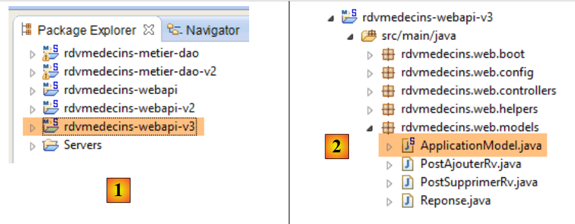 |
Apportiamo una prima modifica in [ApplicationModel], che è uno degli elementi di configurazione del servizio web:
package rdvmedecins.web.models;
...
@Component
public class ApplicationModel implements IMetier {
// il livello [métier]
@Autowired
private IMetier métier;
// dati provenienti dal livello [métier]
private List<Medecin> médecins;
private List<Client> clients;
private List<String> messages;
// dati di configurazione
private boolean CORSneeded = true;
...
public boolean isCORSneeded() {
return CORSneeded;
}
}
- riga 17: creiamo una variabile booleana che indica se si accettano o meno i client esterni al dominio del server;
- righe 21-23: il metodo di accesso a questa informazione;
Quindi creiamo un nuovo controller Spring MVC [3]:
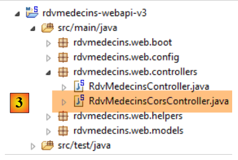 |
La classe [RdvMedecinsCorsController] è la seguente:
package rdvmedecins.web.controllers;
import javax.servlet.http.HttpServletResponse;
import org.springframework.beans.factory.annotation.Autowired;
import org.springframework.stereotype.Controller;
import org.springframework.web.bind.annotation.RequestMapping;
import org.springframework.web.bind.annotation.RequestMethod;
import rdvmedecins.web.models.ApplicationModel;
@Controller
public class RdvMedecinsCorsController {
@Autowired
private ApplicationModel application;
// invio delle opzioni al client
private void sendOptions(HttpServletResponse response) {
if (application.isCORSneeded()) {
// si imposta l'intestazione CORS
response.addHeader("Access-Control-Allow-Origin", "*");
}
}
// elenco dei medici
@RequestMapping(value = "/getAllMedecins", method = RequestMethod.OPTIONS)
public void getAllMedecins(HttpServletResponse response) {
sendOptions(response);
}
}
- righe 28-31: definiscono un controller per URL [/getAllMedecins] quando viene richiesto con il comando HTTP [OPTIONS];
- riga 29: il metodo [getAllMedecins] accetta come parametro l'oggetto [HttpServletResponse] che verrà inviato al client che ha effettuato la richiesta. Questo oggetto viene iniettato da Spring;
- riga 30: si delega l'elaborazione della richiesta al metodo privato delle righe 19-25;
- righe 15-16: viene iniettato l’oggetto [ApplicationModel];
- righe 20-23: se il server è configurato per accettare clienti esterni al proprio dominio, viene inviata l’intestazione HTTP:
Access-Control-Allow-Origin: *
il che significa che il server accetta client da qualsiasi dominio (*).
Ora siamo pronti per nuovi test. Lanciamo la nuova versione del servizio web e scopriamo che il problema persiste. Non è cambiato nulla. Se alla riga 30 sopra inseriamo un output in console, questo non viene mai visualizzato, dimostrando così che il metodo [getAllMedecins] della riga 29 non viene mai chiamato.
Dopo alcune ricerche, si scopre che Spring MVC gestisce autonomamente i comandi HTTP e [OPTIONS] con un'elaborazione predefinita. Pertanto è sempre Spring a rispondere e mai il metodo [getAllMedecins] alla riga 29. Questo comportamento predefinito di Spring MVC può essere modificato. Introduciamo una nuova classe di configurazione per impostare il nuovo comportamento:
 |
La nuova classe di configurazione [WebConfig] è la seguente:
package rdvmedecins.web.config;
import org.springframework.boot.autoconfigure.EnableAutoConfiguration;
import org.springframework.context.annotation.Bean;
import org.springframework.web.servlet.DispatcherServlet;
import org.springframework.web.servlet.config.annotation.WebMvcConfigurerAdapter;
@Configuration
public class WebConfig extends WebMvcConfigurerAdapter {
// configurazione di dispatcherservlet per le intestazioni CORS
@Bean
public DispatcherServlet dispatcherServlet() {
DispatcherServlet servlet = new DispatcherServlet();
servlet.setDispatchOptionsRequest(true);
return servlet;
}
}
- riga 8: la classe è una classe di configurazione Spring. Dichiara i bean che verranno inseriti nel contesto Spring;
- riga 12: il bean [dispatcherServlet] serve a definire il servlet che gestisce le richieste dei client. È di tipo [DispatcherServlet]. Questo servlet viene normalmente creato per impostazione predefinita. Se lo creiamo noi stessi, possiamo quindi configurarlo;
- riga 14: si crea un’istanza di tipo [DispatcherServlet];
- riga 15: si specifica che il servlet inoltri all’applicazione i comandi HTTP e [OPTIONS];
- riga 16: si rende la servlet così configurata;
Resta da modificare la classe [AppConfig]:
package rdvmedecins.web.config;
import org.springframework.boot.autoconfigure.EnableAutoConfiguration;
import org.springframework.context.annotation.ComponentScan;
import org.springframework.context.annotation.Import;
import rdvmedecins.config.DomainAndPersistenceConfig;
@EnableAutoConfiguration
@ComponentScan(basePackages = { "rdvmedecins.web" })
@Import({ DomainAndPersistenceConfig.class, SecurityConfig.class, WebConfig.class })
public class AppConfig {
}
- riga 11: viene importata la nuova classe di configurazione [WebConfig];
3.7.6.7. Test dell’applicazione - 2
Avviamo la nuova versione del servizio web / JSON e proviamo a recuperare l'elenco dei medici con il nostro client Angular. Esaminiamo gli scambi di rete nella scheda [Network]:
 |
- in [1], si può notare che l’intestazione HTTP [Access-Control-Allow-Origin: *] è ora presente nella risposta del server. Eppure continua a non funzionare. Esaminiamo in [2] i log della console. Vi troviamo il seguente log:
XMLHttpRequest cannot load http://localhost:8080/getAllMedecins. Il campo dell'intestazione della richiesta Authorization non è consentito da Access-Control-Allow-Headers
Si nota che il browser attende una nuova intestazione HTTP [Access-Control-Allow-Headers] che gli indichi che è consentito inviargli l'intestazione di autenticazione:
Questo potrebbe essere un buon segno. Angular potrebbe aver voluto inviare il comando HTTP GET. Tuttavia, poiché questo è accompagnato da un'intestazione di autenticazione, chiede se il server la accetta.
Modifichiamo il nostro server web / JSON per inviare questa intestazione. La classe [RdvMedecinsCorsController] viene modificata come segue:
// invio delle opzioni al client
private void sendOptions(HttpServletResponse response) {
if (application.isCORSneeded()) {
// si imposta l'intestazione CORS
response.addHeader("Access-Control-Allow-Origin", "*");
// si autorizza l'intestazione [Authorization]
response.addHeader("Access-Control-Allow-Headers", "Authorization");
}
- le righe 6-7 aggiungono l’intestazione mancante.
Riavviamo il server e richiediamo nuovamente l’elenco dei medici con il client Angular:
 |
Questa volta funziona. I log della console mostrano la risposta ricevuta dal metodo [dao.getData]:
[dao] getData[/getAllMedecins] success réponse : {"data":{"status":0,"data":[{"id":1,"version":1,"titre":"Mme","nom":"PELISSIER","prenom":"Marie"},{"id":2,"version":1,"titre":"Mr","nom":"BROMARD","prenom":"Jacques"},{"id":3,"version":1,"titre":"Mr","nom":"JANDOT","prenom":"Philippe"},{"id":4,"version":1,"titre":"Melle","nom":"JACQUEMOT","prenom":"Justine"}]},"status":200,"config":{"method":"GET","transformRequest":[null],"transformResponse":[null],"timeout":1000,"url":"http://localhost:8080/getAllMedecins","headers":{"Accept":"application/json, text/plain, */*","Authorization":"Basic YWRtaW46YWRtaW4="}},"statusText":"OK"}
Si nota che:
- il server ha restituito un codice di errore [status=200] con il messaggio [statusText=OK]. Ecco perché ci troviamo nella funzione [success];
- il server ha restituito un oggetto [data] con due campi:
- [status]: (da non confondere con il codice di errore HTTP [status]). In questo caso, [status=0] indica che URL e [/getAllMedecins] sono stati elaborati senza errori;
- [data]: che contiene l’elenco JSON dei medici;
Vediamo ora altri casi interessanti:
C'è un errore negli identificativi [login, password]:
 |
Si effettua l’accesso con l’identità [user / user] che non ha accesso all’applicazione (solo [admin] vi ha accesso):
 |
Questa volta l'errore non è più [Erreur d'authentification] ma [Accès refusé].
3.7.7. Esempio 7: elenco dei clienti
Riprendiamo l’applicazione precedente per presentare questa volta l’elenco dei clienti in un menu a tendina di tipo [Bootstrap select] (cfr. paragrafo 3.6.6).
3.7.7.1. La vista V
La vista iniziale sarà la seguente:
 |
Per ottenere la vista V, duplichiamo il codice [app-16.html] in [app-17.html] e lo modifichiamo come segue:
<div class="container" >
<h1>Rdvmedecins - v1</h1>
<!-- messaggio di attesa -->
<div class="alert alert-warning" ng-show="waiting.visible" >
...
</div>
<!-- la richiesta -->
<div class="alert alert-info" ng-hide="waiting.visible" >
...
<button class="btn btn-primary" ng-click="execute()">{{clients.title|translate}}</button>
</div>
<!-- l'elenco dei clienti -->
<div class="row" style="margin-top: 20px" ng-show="clients.show">
<div class="col-md-3">
<h2 translate="{{clients.title}}"></h2>
<select data-style="btn-primary" class="selectpicker">
<option ng-repeat="client in clients.data" value="{{client.id}}">
{{client.titre}} {{client.prenom}} {{client.nom}}
</option>
</select>
</div>
</div>
<!-- l'elenco degli errori -->
<div class="alert alert-danger" ng-show="errors.show">
...
</div>
</div>
....
<script type="text/javascript" src="rdvmedecins-05.js"></script>
- righe 5-7: la barra di attesa rimane invariata;
- righe 10-13: il modulo non cambia, tranne che per la dicitura del pulsante (riga 12);
- righe 28-30: la barra degli errori non cambia;
- righe 16-25: i clienti vengono visualizzati in un elenco a discesa stilizzato dal componente [Bootstrap-selectpicker] (attributi data-style, class, riga 19);
- riga 20: si utilizza la direttiva [ng-repeat] per generare le diverse opzioni dell’elenco a discesa. Si noti che il testo di un'opzione è di tipo [Mme Julienne Tatou] e che il valore dell'opzione è di tipo [100], dove 100 è l'identificatore id del cliente visualizzato;
- riga 34: il codice JavaScript viene spostato in un nuovo file [rdvmedecins-05];
3.7.7.2. Il controller C e il modello M
Il codice JavaScript del file [rdvmedecins-05] viene ottenuto copiando il file [rdvmedecins-04]:

Non cambia praticamente nulla, tranne che nel controller, che ora è stato adattato per fornire l'elenco dei clienti:
angular.module("rdvmedecins")
.controller('rdvMedecinsCtrl', ['$scope', 'utils', 'config', 'dao', '$translate',
function ($scope, utils, config, dao, $translate) {
// ------------------- inizializzazione modello
// modello
$scope.waiting = {text: config.msgWaiting, visible: false, cancel: cancel, time: undefined};
$scope.waitingTimeText = config.waitingTimeText;
$scope.server = {url: undefined, login: undefined, password: undefined};
$scope.clients = {title: config.listClients, show: false, model: {}};
$scope.errors = {show: false, model: {}};
$scope.urlServerLabel = config.urlServerLabel;
$scope.loginLabel = config.loginLabel;
$scope.passwordLabel = config.passwordLabel;
// attività asincrona
var task;
// esecuzione dell'azione
$scope.execute = function () {
// si aggiorna il UI
$scope.waiting.visible = true;
$scope.clients.show = false;
$scope.errors.show = false;
// attesa simulata
task = utils.waitForSomeTime($scope.waiting.time);
var promise = task.promise;
// in attesa
promise = promise.then(function () {
// si richiede l'elenco dei clienti;
task = dao.getData($scope.server.url, $scope.server.login, $scope.server.password, config.urlSvrClients);
return task.promise;
});
// si analizza il risultato della chiamata precedente
promise.then(function (result) {
// result={err: 0, data: [client1, client2, ...]}
// result={err: n, messages: [msg1, msg2, ...]}
if (result.err == 0) {
// si inseriscono i dati acquisiti nel modello
$scope.clients.data = result.data;
// si aggiorna il UI
$scope.clients.show = true;
$scope.waiting.visible = false;
// si imposta lo stile dell'elenco a discesa
$('.selectpicker').selectpicker();
} else {
// si sono verificati degli errori durante il recupero dell'elenco dei clienti
$scope.errors = { title: config.getClientsErrors, messages: utils.getErrors(result), show: true, model: {}};
// si aggiorna il file UI
$scope.waiting.visible = false;
}
});
};
// in attesa di annullamento
function cancel() {
// si sta completando l'attività
task.reject();
// si sta aggiornando il file UI
$scope.waiting.visible = false;
$scope.clients.show = false;
$scope.errors.show = false;
}
}
])
;
- nel controller cambiano pochissime cose. In precedenza forniva un elenco di medici. Ora fornisce un elenco di clienti;
- riga 9: [$scope.clients] sarà il modello del banner dei clienti nella vista V;
- riga 30: ora viene utilizzato URL [/getAllClients];
- righe 35-36: le due forme di risposta restituite dal metodo [dao.getData]. Ora abbiamo i clienti al posto dei medici;
- riga 44: un'istruzione piuttosto rara in un codice Angular. Si manipola direttamente il DOM (Document Object Model). In questo caso si vuole applicare il metodo [selectpicker] (che fa parte di [bootstrap-select.min.js]) agli elementi di DOM che hanno la classe [selectpicker] [$('.selectpicker')]. Ce n’è solo uno, l’elenco a discesa:
<select data-style="btn-primary" class="selectpicker" select-enable="">
....
</select>
Al paragrafo 3.6.6 è stato dimostrato che ciò applicava lo stile al menu a tendina nel modo seguente:
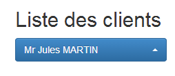 |  |
Come è stato fatto per i medici, siamo costretti a modificare anche il servizio web.
3.7.7.3. Modifica del servizio web - 1
 |
La classe [RdvMedecinsController] viene arricchita con un nuovo metodo:
package rdvmedecins.web.controllers;
...
@Controller
public class RdvMedecinsCorsController {
@Autowired
private ApplicationModel application;
// invio delle opzioni al cliente
private void sendOptions(HttpServletResponse response) {
if (application.isCORSneeded()) {
// impostazione dell'intestazione CORS
response.addHeader("Access-Control-Allow-Origin", "*");
// si autorizza l'intestazione [Authorization]
response.addHeader("Access-Control-Allow-Headers", "Authorization");
}
}
// elenco dei medici
@RequestMapping(value = "/getAllMedecins", method = RequestMethod.OPTIONS)
public void getAllMedecins(HttpServletResponse response) {
sendOptions(response);
}
// elenco dei clienti
@RequestMapping(value = "/getAllClients", method = RequestMethod.OPTIONS)
public void getAllClients(HttpServletResponse response) {
sendOptions(response);
}
}
- righe 29-32: il metodo [getAllClients] gestirà la richiesta HTTP [OPTIONS] che gli verrà inviata dal browser;
3.7.7.4. Test dell’applicazione – 1
Ora siamo pronti per un test. Avviamo il server web, quindi inseriamo valori validi nel modulo Angular. Otteniamo la seguente risposta:

Questo messaggio di errore viene visualizzato quando Angular non è riuscito a eseguire la richiesta HTTP richiesta. È quindi necessario individuarne le cause nei log della console. In essi si trova il seguente messaggio:
XMLHttpRequest cannot load http://localhost:8080/getAllClients. Nella risorsa richiesta non è presente l'intestazione 'Access-Control-Allow-Origin'. L'origine 'http://localhost:63342' non è quindi autorizzata ad accedere.
Un problema che si riteneva risolto. Vediamo quindi gli scambi di rete che si sono verificati:

Si nota che l’operazione [getAllClients] con il metodo HTTP [OPTIONS]è andata a buon fine, mentre l’operazione [getAllClients] con il metodo HTTP [GET] è stata annullata. La risposta alla richiesta [OPTIONS] è stata la seguente:

Le intestazioni HTTP del CORS sono presenti. Esaminiamo ora gli scambi HTTP relativi al GET:

La richiesta HTTP sembra corretta. Si nota in particolare l'intestazione di autenticazione.
Oltre al messaggio di errore precedente, nei log della console si trova il seguente messaggio:
[dao] getData[/getAllClients] error réponse : {"data":"","status":0,"config":{"method":"GET","transformRequest":[null],"transformResponse":[null],"timeout":1000,"url":"http://localhost:8080/getAllClients","headers":{"Accept":"application/json, text/plain, */*","Authorization":"Basic YWRtaW46YWRtaW4="}},"statusText":""}
Si tratta del log generato sistematicamente dal metodo [dao.getData] alla ricezione della risposta alla sua richiesta HTTP. Si possono notare due cose:
- [status=0]: ciò significa che è stato Angular ad annullare la richiesta HTTP;
- [method=GET]: e che è stata annullata la richiesta GET;
Mettendo insieme questo messaggio con il primo, significa che anche per la richiesta GET, Angular si aspetta qui le intestazioni CORS. Attualmente, però, il nostro servizio web li invia solo per la richiesta HTTP [OPTIONS]. È molto strano riscontrare questo errore ora e non per l’elenco dei medici. Non ho spiegazioni.
È quindi necessario modificare nuovamente il servizio web.
3.7.7.5. Modifica del servizio web – 2
 |
I metodi [GET] e [POST] sono gestiti nella classe [RdvMedecinsController]. Dobbiamo modificarla affinché questi metodi inviino le intestazioni CORS. Procediamo come segue:
@RestController
public class RdvMedecinsController {
@Autowired
private ApplicationModel application;
@Autowired
private RdvMedecinsCorsController rdvMedecinsCorsController;
...
// elenco dei clienti
@RequestMapping(value = "/getAllClients", method = RequestMethod.GET)
public Reponse getAllClients(HttpServletResponse response) {
// intestazioni CORS
rdvMedecinsCorsController.getAllClients(response);
// stato dell'applicazione
if (messages != null) {
return new Reponse(-1, messages);
}
// elenco dei clienti
try {
return new Reponse(0, application.getAllClients());
} catch (Exception e) {
return new Reponse(1, Static.getErreursForException(e));
}
}
...
- riga 8: vogliamo riutilizzare il codice che abbiamo inserito nel controller [RdvMedecinsCorsController]. Pertanto lo inseriamo qui;
- riga 14: il metodo che gestisce la richiesta [GET /getAllClients]. Apportiamo due modifiche:
- riga 14: inseriamo l’oggetto [HttpServletResponse] nei parametri del metodo,
- riga 16: utilizziamo i metodi della classe [RdvMedecinsCorsController] per inserire in questo oggetto le intestazioni CORS;
3.7.7.6. Test dell’applicazione – 2
Avviamo la nuova versione del servizio web e richiediamo nuovamente l’elenco dei clienti. Otteniamo la seguente risposta:
 |
- in [1], abbiamo effettivamente una risposta ma è vuota [2];
- in [3]: gli scambi di rete sono avvenuti correttamente;
Nei log della console, il metodo [dao.getData] ha visualizzato la risposta ricevuta:
[dao] getData[/getAllClients] success réponse : {"data":{"status":0,"data":[{"id":1,"version":1,"titre":"Mr","nom":"MARTIN","prenom":"Jules"},{"id":2,"version":1,"titre":"Mme","nom":"GERMAN","prenom":"Christine"},{"id":3,"version":1,"titre":"Mr","nom":"JACQUARD","prenom":"Jules"},{"id":4,"version":1,"titre":"Melle","nom":"BISTROU","prenom":"Brigitte"}]},"status":200,"config":{"method":"GET","transformRequest":[null],"transformResponse":[null],"timeout":1000,"url":"http://localhost:8080/getAllClients","headers":{"Accept":"application/json, text/plain, */*","Authorization":"Basic YWRtaW46YWRtaW4="}},"statusText":"OK"}
Pertanto, il metodo ha ricevuto correttamente l’elenco dei clienti. Una volta verificato il codice, si arriva a sospettare che il problema risieda nella seguente istruzione, che non conosciamo molto bene:
// stile dell'elenco a discesa
$('.selectpicker').selectpicker();
Mettiamo la riga 2 tra commenti e riproviamo. Otteniamo quindi la seguente risposta:
 |
Abbiamo quindi individuato il problema. È l’applicazione del metodo [selectpicker] al menu a tendina a causare il problema. Osservando il codice sorgente della pagina errata, si nota quanto segue:
 |
- si scopre che in [1] l’elenco a discesa è presente con i suoi elementi, ma non viene visualizzato [style='display:none'];
- in [2], si vede il pulsante [bootstrap select] visualizzato. Gli elementi dell’elenco a discesa dovrebbero apparire nell’elenco <ul role='menu'>. Non ci sono e quindi si ha un elenco vuoto. Sembra che quando il metodo [selectpicker] è stato applicato all’elenco a discesa, il suo contenuto fosse vuoto in quel momento;
Navigando sul web alla ricerca di una soluzione, si trova questa. Si sostituisce il codice:
// stile dell'elenco a discesa
$('.selectpicker').selectpicker();
con il seguente:
// si personalizza l'elenco a discesa
$timeout(function(){
$('.selectpicker').selectpicker();
});
Lo stile [bootstrap-select] viene applicato tramite una funzione [$timeout]. Abbiamo già incontrato questa funzione, che consente di eseguire un'altra funzione dopo un certo intervallo di tempo. In questo caso, l'assenza di un intervallo equivale a un intervallo pari a zero. Le righe precedenti inseriscono un evento nella coda degli eventi del browser. Quando l'elaborazione dell'evento in corso (clic sul pulsante [Liste des clients]) sarà terminata, verrà visualizzata la vista V. Subito dopo, il browser consulterà la propria lista di eventi. A causa del suo intervallo pari a zero, l’evento [$timeout] si troverà in cima alla lista e verrà elaborato. Lo stile [bootstrap-select] verrà quindi applicato a un menu a tendina già popolato. Vediamo il risultato:
 |
Se osserviamo nuovamente il codice sorgente della pagina visualizzata, troviamo quanto segue:
 |
Il pulsante [bootstrap-select], che in precedenza era vuoto, ora contiene l’elenco dei clienti.
3.7.7.7. Utilizzo di una direttiva
Nel controller C della vista V abbiamo trovato il seguente codice:
// personalizzazione dell'elenco a discesa
$('.selectpicker').selectpicker();
Si sta manipolando un oggetto DOM. Molti sviluppatori Angular sono restii a manipolare DOM nel codice di un controller. Per loro, questa operazione deve essere eseguita in una direttiva. Una direttiva Angular può essere vista come un’estensione del linguaggio HTML. È quindi possibile creare nuovi elementi o attributi HTML. Vediamo un primo esempio:
Creiamo il seguente file JS [selectEnable]:
angular.module("rdvmedecins").directive('selectEnable', ['$timeout', function ($timeout) {
return {
link: function (scope, element, attrs) {
$timeout(function () {
var selectpicker = $('.selectpicker');
selectpicker.selectpicker();
});
}
};
}]);
- la direttiva segue la sintassi del controller a cui ormai siamo abituati:
angular.module("rdvmedecins").directive('selectEnable', ['$timeout', function ($timeout)
La direttiva appartiene al modulo [rvmedecins]. Si tratta di una funzione che accetta due parametri:
- (continua)
- il primo è il nome della direttiva [selectEnable];
- il secondo è un array ['obj1','obj2',..., function(obj1, obj2,...)] in cui i [obj] sono gli oggetti da inserire nella funzione. In questo caso l’unico oggetto inserito è l’oggetto predefinito [$timeout];
- la funzione [directive] restituisce un oggetto che può avere diversi attributi. In questo caso l’unico attributo è l’attributo [link] (riga 3). Il suo valore è una funzione che accetta tre parametri:
- scope: il modello della vista in cui viene utilizzata la direttiva;
- element: l'elemento della vista, oggetto della direttiva;
- attrs: gli attributi di questo elemento;
Facciamo un esempio. La direttiva [selectEnable] potrebbe essere utilizzata nel seguente contesto:
Nell'esempio sopra riportato, l'attributo [select-enable] applica la direttiva [selectEnable] all'elemento HTML <div>. Una direttiva [doSomething] può essere applicata a qualsiasi elemento HTML aggiungendogli l'attributo [do-something]. Si presti attenzione alla differenza di ortografia tra il nome della direttiva e l’attributo ad essa associato. Si passa dalla forma [camelCase] alla forma [camel-case].
La direttiva [selectEnable] potrebbe essere utilizzata anche nel modo seguente:
In questo caso, la direttiva [doSomething] viene applicata sotto forma di tag HTML <do-something>.
Torniamo alla sintassi
e ai tre parametri della funzione [link] della direttiva, [scope, element, attrs]:
- scope: è il modello della vista in cui si trova il tag <div>;
- element: è il tag <div> stesso;
- attrs: è l'array degli attributi del tag <div>. Questi possono essere utilizzati per trasmettere informazioni alla direttiva. Nell'esempio sopra riportato, si scriverà attrs['selectEnable'] per ottenere l'informazione [data]. Si noti bene il cambiamento di notazione [selectEnable] per indicare l'attributo [select-enable];
Torniamo al codice della direttiva:
angular.module("rdvmedecins").directive('selectEnable', ['$timeout', function ($timeout) {
return {
link: function (scope, element, attrs) {
$timeout(function () {
$('.selectpicker').selectpicker();
});
}
};
}]);
- righe 14-16: ritroviamo il codice che avevamo inserito in precedenza nel controller. Questo viene eseguito quando si incontra la direttiva [select-enable] (sotto forma di elemento o attributo) durante la visualizzazione della vista V.
Per implementare questa direttiva, copiamo il file [app-17.html] in [app-17B.html] e lo modifichiamo come segue:
<select data-style="btn-primary" class="selectpicker" select-enable="">
<option ng-repeat="client in clients.data" value="{{client.id}}">
{{client.titre}} {{client.prenom}} {{client.nom}}
</option>
</select>
- riga 1: si applica la direttiva [selectEnable] all'elemento HTML [select]. Poiché non ci sono informazioni da passare alla direttiva, scriviamo semplicemente [select-enable=""];
Modifichiamo inoltre il controller duplicando il file JS [rdvmedecins-05.js] in [rdvmedecins-05B.js] e facciamo riferimento al nuovo file JS nel file [app-17B.html] e il file [selectEnable.js] come file di direttiva. È importante non dimenticare quest’ultimo punto. Se il file di direttiva è assente, l’attributo [select-enable=""] non verrà gestito, ma Angular non segnalerà alcun errore.
<script type="text/javascript" src="rdvmedecins-05B.js"></script>
<script type="text/javascript" src="selectEnable.js"></script>
Nel file JS [rdvmedecins-05B.js], eliminiamo dal controller le seguenti righe:
// stile dell'elenco a discesa
$timeout(function(){
$('.selectpicker').selectpicker();
});
poiché questa operazione viene ora eseguita dalla direttiva.
3.7.7.8. Test dell’applicazione – 3
Quando si testa la nuova applicazione [app-17B.html], si ottiene il seguente risultato:
 |
- in [1] si ottiene un elenco vuoto.
I log della console mostrano quanto segue:
- riga 1: inizializzazione del servizio [dao];
- riga 2: alla visualizzazione iniziale della vista V, viene eseguita la direttiva [selectEnable];
- riga 3: questa riga appare quando l’utente fa clic sul pulsante [Liste des clients]. Si nota quindi che la direttiva [selectEnable] non viene eseguita una seconda volta. In definitiva, è stata eseguita quando l’elenco dei clienti era vuoto e si ottiene quindi un elenco a discesa vuoto;
In altre parole, l'operazione:
$('.selectpicker').selectpicker();
non si è svolta al momento giusto. Si può provare a risolvere il problema in vari modi. Dopo numerosi test infruttuosi, ci si rende conto che l’operazione sopra indicata deve avvenire una sola volta e solo quando l’elenco a discesa è stato compilato. Per ottenere questo risultato, si riscrive il tag <select> nel modo seguente:
<select data-style="btn-primary" class="selectpicker" select-enable="" ng-if="clients.data">
<option ng-repeat="client in clients.data" value="{{client.id}}">
{{client.titre}} {{client.prenom}} {{client.nom}}
</option>
</select>
Riga 1: il tag <select> viene generato solo se esiste [clients.data]. Ciò non avviene durante la visualizzazione iniziale della vista V. Il tag <select> non verrà quindi generato e la direttiva [selectEnable] non verrà valutata. Quando l'utente cliccherà sul pulsante [Liste des clients], [clients.data] assumerà un nuovo valore nel modello M. Poiché il modello M è cambiato, il tag <select> verrà rivalutato e in questo caso generato. Verrà quindi valutata anche la direttiva [selectEnable]. Al momento della sua valutazione, le righe 2-4 del tag <select> non sono ancora state valutate. Si ottiene quindi un elenco di clienti vuoto. Se si scrive la direttiva [selectEnable] nel modo seguente:
angular.module("rdvmedecins").directive('selectEnable', ['$timeout', 'utils', function ($timeout, utils) {
return {
link: function (scope, element, attrs) {
utils.debug("directive selectEnable");
$('.selectpicker').selectpicker();
}
}
}]);
la riga 5 verrà eseguita con un elenco vuoto e sul display apparirà quindi un elenco a discesa vuoto. È quindi necessario scrivere:
angular.module("rdvmedecins").directive('selectEnable', ['$timeout', 'utils', function ($timeout, utils) {
return {
link: function (scope, element, attrs) {
utils.debug("directive selectEnable");
$timeout(function () {
$('.selectpicker').selectpicker();
})
}
}
}]);
per ottenere il risultato atteso. A causa della direttiva [$timeout] della riga 5, la riga 6 verrà eseguita solo dopo la completa valutazione della vista V, quindi in un momento in cui il tag <select> conterrà tutti i suoi elementi.
3.7.8. Esempio 8: l’agenda di un medico
Presentiamo ora un'applicazione che visualizza l'agenda di un medico.
3.7.8.1. La vista V dell’applicazione
Presenteremo il seguente modulo:
 |
- in [1], si richiede l'agenda della signora PELISSIER [2], il 25 giugno 2014 [3];
Si ottiene il seguente risultato [4]:
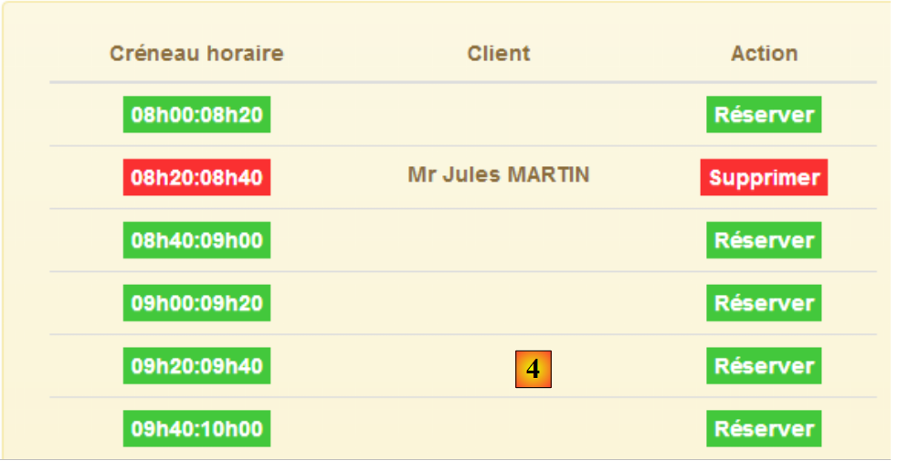 |
Esamineremo le due viste separatamente.
3.7.8.2. Il modulo
Duplichiamo il file [app-17.html] in [app-18.html], quindi modifichiamo il codice come segue:
<div class="container">
<h1>Rdvmedecins - v1</h1>
<!-- il messaggio di attesa -->
<div class="alert alert-warning" ng-show="waiting.visible">
...
</div>
<!-- la richiesta -->
<div class="alert alert-info" ng-hide="waiting.visible">
<div class="row" style="margin-bottom: 20px">
<div class="col-md-3">
<h2 translate="{{medecins.title}}"></h2>
<select data-style="btn-primary" class="selectpicker">
<option ng-repeat="medecin in medecins.data" value="{{medecin.id}}">
{{medecin.titre}} {{medecin.prenom}} {{medecin.nom}}
</option>
</select>
</div>
<div class="col-md-3">
<h2 translate="{{calendar.title}}"></h2>
<div style="display:inline-block; min-height:290px;">
<datepicker ng-model="calendar.jour" min-date="calendar.minDate" show-weeks="true"
class="well well-sm"></datepicker>
</div>
</div>
</div>
<button class="btn btn-primary" ng-click="execute()">{{agenda.title|translate}}</button>
</div>
<!-- l'elenco degli errori -->
<div class="alert alert-danger" ng-show="errors.show">
...
</div>
<!-- l'agenda -->
<div id="agenda" ng-show="agenda.show">
...
</div>
</div>
...
<script type="text/javascript" src="rdvmedecins-06.js"></script>
- righe 5-7: il messaggio di attesa rimane invariato;
- righe 12-19: l'elenco dei medici di tipo [bootstrap select];
- righe 20-26: il calendario di [ui-bootstrap] che abbiamo già presentato. Si noti che il giorno selezionato viene inserito nel modello [calendar.jour] (attributo ng-model);
- riga 28: il pulsante che richiede l'agenda;
- righe 32-34: l'elenco degli errori rimane invariato;
- righe 37-39: il calendario che presenteremo in seguito;
- riga 42: il codice JS viene trasferito nel file [rdvmedecins-06.js] tramite copia dal file [rdvmedecins-05.js];
3.7.8.3. Il controller C
Il codice JS dell'applicazione diventa il seguente:
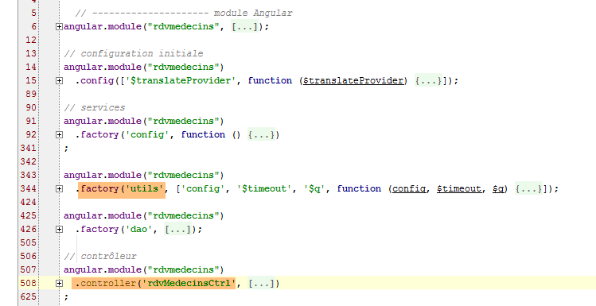
Solo il servizio [utils] e il controller [rdvMedecinsCtrl] saranno interessati dalle modifiche.
Il controller [rdvMedecinsCtrl] diventa il seguente:
// controller
angular.module("rdvmedecins")
.controller('rdvMedecinsCtrl', ['$scope', 'utils', 'config', 'dao', '$translate', '$timeout', '$filter', '$locale',
function ($scope, utils, config, dao, $translate, $timeout, $filter, $locale) {
// ------------------- inizializzazione modello
// modello
$scope.waiting = {text: config.msgWaiting, visible: false, cancel: cancel, time: 3000};
$scope.server = {url: 'http://localhost:8080', login: 'admin', password: 'admin'};
$scope.errors = {show: false, model: {}};
$scope.medecins = {
data: [
{id: 1, version: 1, titre: "Mme", nom: "PELISSIER", prenom: "Marie"},
{id: 2, version: 1, titre: "Mr", nom: "BROMARD", prenom: "Jacques"},
{id: 3, version: 1, titre: "Mr", nom: "JANDOT", prenom: "Philippe"},
{id: 4, version: 1, titre: "Melle", nom: "JACQUEMOT", prenom: "Justine"}
],
title: config.listMedecins};
$scope.agenda = {title: config.getAgendaTitle, data: undefined, show: false};
$scope.calendar = {title: config.getCalendarTitle, minDate: new Date(), jour: new Date()};
// stile del menu a tendina
$timeout(function () {
$('.selectpicker').selectpicker();
});
// impostazione della lingua francese per il calendario
angular.copy(config.locales['fr'], $locale);
...
}
])
;
- riga 7: si imposta un tempo di attesa di 3 secondi prima di effettuare la chiamata a HTTP;
- riga 8: si impostano in modo fisso gli elementi necessari per la connessione a HTTP;
- righe 10-17: l'elenco dei medici viene definito in modo fisso;
- riga 18: il modello [agenda] configura la visualizzazione dell'agenda nella vista;
- riga 19: il modello [calendar] configura la visualizzazione del calendario nella vista. Si imposta una data minima [minDate] pari a oggi e la data odierna anch’essa pari a oggi;
- righe 21-23: il menu a tendina viene formattato con il metodo visto in precedenza;
- riga 25: si imposta la lingua dell'applicazione su 'fr'. Per impostazione predefinita, è 'en';
Il metodo eseguito al momento della richiesta dell'agenda è il seguente:
// esecuzione dell'azione
$scope.execute = function () {
// informazioni sul modulo
var idMedecin = $('.selectpicker').selectpicker('val');
// verifica
utils.debug("[homeCtrl] idMedecin", idMedecin);
utils.debug("[homeCtrl] jour", $scope.calendar.jour);
// impostazione del formato della data in yyyy-MM-dd
var formattedJour = $filter('date')($scope.calendar.jour, 'yyyy-MM-dd');
// aggiornamento della vista
$scope.waiting.visible = true;
$scope.errors.show = false;
$scope.agenda.show = false;
...
};
- riga 4: si recupera l’attributo [value] del medico selezionato. Qui si utilizza nuovamente il metodo [selectpicker], che proviene dal file [bootstrap-select.min.js]. È necessario ricordare la forma delle opzioni del menu a tendina:
<option ng-repeat="medecin in medecins.data" value="{{medecin.id}}">
{{medecin.titre}} {{medecin.prenom}} {{medecin.nom}}
Il valore (attributo value) dell'opzione è quindi l'identificativo [id] del medico.
- riga 11: si converte il giorno scelto dall’utente nel formato [aaaa-mm-jj], che è il formato di data richiesto dal server web;
- righe 13-15: al termine dell'esecuzione del metodo [execute], verrà visualizzata la barra di attesa e tutto il resto verrà nascosto;
Il codice prosegue come segue:
// attesa simulata
var task = utils.waitForSomeTime($scope.waiting.time);
// richiesta dell'agenda del medico
var promise = task.promise.then(function () {
// percorso del URL di servizio
var path = config.urlSvrAgenda + "/" + idMedecin + "/" + formattedJour;
// richiesta dell'agenda
task = dao.getData($scope.server.url, $scope.server.login, $scope.server.password, path);
// viene restituita la conferma di completamento dell'attività
return task.promise;
});
// si analizza il risultato della chiamata al servizio [dao]
promise.then(function (result) {
// fine dell'attesa
$scope.waiting.visible = false;
// errore?
if (result.err == 0) {
// si prepara il modello dell'agenda
$scope.agenda.data = result.data;
$scope.agenda.show = true;
// formattazione della visualizzazione degli orari
angular.forEach($scope.agenda.data.creneauxMedecin, function (creneauMedecin) {
creneauMedecin.creneau.text = utils.getTextForCreneau(creneauMedecin.creneau);
});
// si crea un evento per applicare lo stile alla tabella dopo la visualizzazione della vista
$timeout(function () {
$("#creneaux").footable();
});
} else {
// si sono verificati degli errori durante il recupero del calendario
$scope.errors = {
title: config.getAgendaErrors,
messages: utils.getErrors(result),
show: true
};
}
- riga 2: l'attività asincrona di attesa di 3 secondi;
- righe 5-10: il codice che verrà eseguito al termine di tale attesa;
- riga 6: si costruisce l'URL interrogando l'[/getAgendaMedecinJour/1/2014-06-25];
- riga 8: viene interrogata la URL. Viene avviata un'attività asincrona;
- riga 10: viene risolto il promise di questa attività asincrona;
- righe 14-38: il codice che verrà eseguito quando la chiamata HTTP avrà restituito la sua risposta;
- riga 13: [result] è la risposta inviata dal metodo [dao.getData]. A questo punto è importante ricordare il formato della risposta del server web:
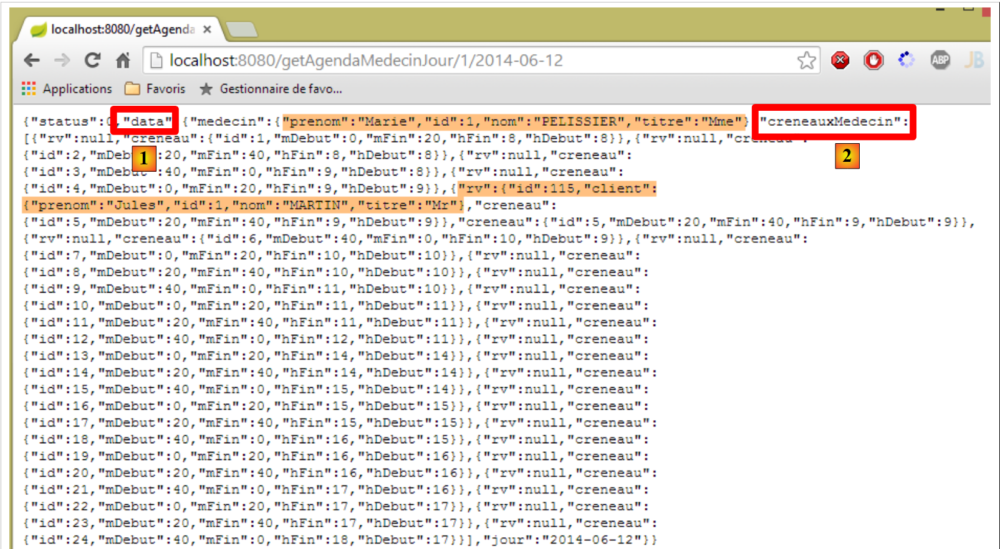 |
Il parametro [result.data] della riga 19 è l'attributo [data] [1] sopra indicato. Questo attributo contiene a sua volta l’attributo [creneauxMedecin] [2] sopra indicato. Si tratta di una tabella di fasce orarie, ciascuna delle quali contiene le due informazioni seguenti:
- [rv]: la forma JSON di un appuntamento o [null] se non è stato fissato alcun appuntamento in quella fascia oraria;
- [hDeb, mDeb, hFin, mFin]: le informazioni relative all’orario della fascia oraria;
Torniamo al codice del controllore:
- riga 15: l'attesa è terminata;
- riga 19: si inserisce il modello [$scope.agenda] che controlla la visualizzazione dell'agenda;
- riga 20: l’agenda viene resa visibile;
- righe 22-24: si passa in rassegna ciascuno degli elementi C della tabella [creneauxMedecin] di cui abbiamo appena parlato;
- riga 23: ogni elemento C ha un attributo [creneau] che rappresenta la fascia oraria. A questo viene aggiunto un attributo [text] che costituirà la rappresentazione testuale della fascia oraria nella forma [10h20:10h40];
- righe 26-28: rendiamo «responsive» la tabella HTML utilizzata per visualizzare le fasce orarie dell’agenda. Abbiamo visto questo concetto al paragrafo 3.6.7;
 |
- riga 27: per rendere la tabella "responsive", è necessario applicarle il metodo [footable]. Qui si riscontra la stessa difficoltà incontrata per il componente [bootstrap-select]. Se si scrive semplicemente la riga 17, si nota che la tabella non è "responsive". Si risolve questo problema allo stesso modo con la funzione [$timeout] (riga 26);
- righe 31-34: il caso in cui la chiamata a HTTP non sia andata a buon fine. In tal caso vengono visualizzati i messaggi di errore;
3.7.8.4. Visualizzazione dell’agenda
Torniamo ora al codice dell’agenda nel file [app-18.html]. È il seguente:
<!-- l'agenda -->
<div id="agenda" ng-show="agenda.show">
<!-- caso del medico senza fasce orarie di visita -->
<h4 class="alert alert-danger" ng-if="agenda.data.creneauxMedecin.length==0"
translate="agenda_medecinsanscreneaux"></h4>
<!-- agenda del medico -->
<div class="row tab-content alert alert-warning" ng-if="agenda.data.creneauxMedecin.length!=0">
<div class="tab-pane active col-md-6">
<table creneaux-table id="creneaux" class="table">
<thead>
<tr>
<th data-toggle="true">
<span translate="agenda_creneauhoraire"></span>
</th>
<th>
<span translate="agenda_client">Client</span>
</th>
<th data-hide="phone">
<span translate="agenda_action">Action</span>
</th>
</tr>
</thead>
<tbody>
<tr ng-repeat="creneauMedecin in agenda.data.creneauxMedecin">
<td>
<span
ng-class="! creneauMedecin.rv ? 'status-metro status-active' : 'status-metro status-suspended'">
{{creneauMedecin.creneau.text}}
</span>
</td>
<td>
<span>{{creneauMedecin.rv.client.titre}} {{creneauMedecin.rv.client.prenom}} {{creneauMedecin.rv.client.nom}}</span>
</td>
<td>
<a href="" ng-if="!creneauMedecin.rv" translate="agenda_reserver" class="status-metro status-active">
</a>
<a href="" ng-if="creneauMedecin.rv" translate="agenda_supprimer" class="status-metro status-suspended">
</a>
</td>
</tr>
</tbody>
</table>
</div>
</div>
</div>
- righe 4-5: ricordiamo che [agenda.data] è l'agenda, mentre [agenda.data.creneauxMedecin] è un array di oggetti di tipo [creneauMedecin]. Ogni elemento di quest’ultimo tipo ha un attributo [creneauMedecin.creneau] che rappresenta una fascia oraria. Ogni fascia oraria presenta due elementi che ci interessano:
- [creneauMedecin.creneau.rv], che è l’eventuale RV (rv!=null) associato alla fascia oraria;
- [creneauMedecin.creneau.text], che è il testo [début:fin] della fascia oraria;
- riga 4: visualizza un messaggio speciale se il medico non ha fasce orarie disponibili. È improbabile, ma poiché il nostro database è incompleto, questo caso può verificarsi. La generazione o meno del messaggio HTML è controllata dalla direttiva [ng-if];

La direttiva [ng-if] è diversa dalle direttive [ng-show, ng-hide]. Queste ultime si limitano a nascondere un’area presente nel documento. Se [ng-if='false'], allora l’area viene rimossa dal documento. L’abbiamo utilizzata qui a titolo illustrativo;
- riga 9: l’attributo [id='creneaux'] è importante. È proprio questo che viene utilizzato nell’istruzione:
$("#creneaux").footable();
- righe 10-22: visualizzano le intestazioni della tabella [1];
- righe 23-45: visualizzano il contenuto della tabella [2];
 |
- riga 24: si esegue l'iterazione sull'array [agenda.data.creneauxMedecin];
- righe 26-29: si scrive il testo [3]. Si utilizza la direttiva [ng-class] che genererà l'attributo [class] dell'elemento. In questo caso, se si ha [creneauMedecin.rv==null], significa che la fascia oraria è libera e si assegna uno sfondo verde al testo. Altrimenti, si assegna uno sfondo rosso;
- riga 32: si scrive il nome del cliente per il quale è stato prenotato il RV [4]. Se è [rv==null], queste informazioni non esistono, ma Angular gestisce correttamente questo caso e non segnala alcun errore;
- righe 34-39: visualizzano uno dei due pulsanti [Réserver] o [Supprimer]. È la presenza o meno di un appuntamento a determinare la scelta dell’uno o dell’altro pulsante;
3.7.8.5. Modifica del server web
Come negli esempi precedenti, il server web deve essere modificato affinché URL [/getAgendaMedecinJour] invii le intestazioni CORS:
|
Nella classe [RdvMedecinsCorsController] si aggiunge un nuovo metodo:
// agenda del medico
@RequestMapping(value = "/getAgendaMedecinJour/{idMedecin}/{jour}", method = RequestMethod.OPTIONS)
public void getAgendaMedecinJour(HttpServletResponse response) {
sendOptions(response);
}
Questo metodo invierà le intestazioni CORS per le richieste HTTP e [OPTIONS]. Si deve fare la stessa cosa per le richieste HTTP e [GET] nella classe [RdvMedecinsController]:
@RequestMapping(value = "/getAgendaMedecinJour/{idMedecin}/{jour}", method = RequestMethod.GET)
public Reponse getAgendaMedecinJour(@PathVariable("idMedecin") long idMedecin, @PathVariable("jour") String jour, HttpServletResponse response) {
// intestazioni CORS
rdvMedecinsCorsController.getAgendaMedecinJour(response);
...
}
3.7.8.6. Utilizzo delle direttive
Come fatto in precedenza, trasferiremo la gestione di DOM nelle direttive. Abbiamo due operazioni relative a DOM:
- durante la visualizzazione iniziale della vista:
// si applica lo stile al menu a tendina
$timeout(function () {
$('.selectpicker').selectpicker();
});
- durante la visualizzazione dell’agenda:
// si crea un evento per applicare lo stile alla tabella dopo la visualizzazione della vista
$timeout(function () {
$("#creneaux").footable();
});
Per il primo caso, utilizzeremo la direttiva [selectEnable] già presentata. Per il secondo caso, creiamo la direttiva [footable] nel seguente file JS [footable.js]:
angular.module("rdvmedecins").directive('footable', ['$timeout', 'utils', function ($timeout, utils) {
return {
link: function (scope, element, attrs) {
utils.debug("directive footable");
$timeout(function () {
$("#creneaux").footable();
})
}
}
}]);
Si utilizza quindi la stessa tecnica della direttiva [selectEnable].
Il codice HTML [app-18.html] viene duplicato in [app-18B.html]. Successivamente lo si modifica come segue:
<select data-style="btn-primary" class="selectpicker" select-enable="">
<option ng-repeat="medecin in medecins.data" value="{{medecin.id}}">
{{medecin.titre}} {{medecin.prenom}} {{medecin.nom}}
</option>
</select>
- riga 1: si applica la direttiva [selectEnable] (tramite l'attributo [select-enable]) al tag <select> dei medici;
<div class="row tab-content alert alert-warning" ng-if="agenda.data.creneauxMedecin.length!=0">
<div class="tab-pane active col-md-6">
<table id="creneaux" class="table" footable="">
<thead>
<tr>
- riga 3: si applica la direttiva [footable] (tramite l'attributo [footable]) alla tabella HTML dell'agenda;
<script type="text/javascript" src="rdvmedecins-06B.js"></script>
<!-- direttive -->
<script type="text/javascript" src="selectEnable.js"></script>
<script type="text/javascript" src="footable.js"></script>
- righe 3-4: si fa riferimento ai file JS delle due direttive;
- riga 1: il codice JS di [app-18B.html] è il codice JS di [app-18.html] duplicato nel file [rdvmedecins-06B.js];
Il file [rdvmedecins-06B.js] è identico al file [rdvmedecins-06.js], tranne che per due dettagli. Le righe relative a DOM scompaiono:
// si applica lo stile all'elenco a discesa
$timeout(function () {
$('.selectpicker').selectpicker();
});
// si crea un evento per applicare lo stile alla tabella dopo la visualizzazione della vista
$timeout(function () {
$("#creneaux").footable();
});
Pertanto, l'esecuzione dell'applicazione [app-18B.html] produce gli stessi risultati di quella di [app-18.html].
3.7.9. Esempio 9: creare e annullare prenotazioni
Presentiamo ora un'applicazione che consente di creare e annullare le prenotazioni.
3.7.9.1. La vista V dell’applicazione
Presenteremo il seguente modulo:
 |
- in [1] sarà possibile effettuare una prenotazione. La prenotazione verrà effettuata per un cliente casuale;
- in [2] sarà possibile cancellare le prenotazioni che avremo effettuato;
Duplichiamo il file [app-18.html] in [app-19.html], quindi modifichiamo il codice come segue:
<div class="container">
<h1>Rdvmedecins - v1</h1>
<!-- il messaggio di attesa -->
<div class="alert alert-warning" ng-show="waiting.visible">
...
</div>
<!-- l'elenco degli errori -->
<div class="alert alert-danger" ng-show="errors.show">
...
</div>
<!-- l'agenda -->
<div id="agenda" ng-show="agenda.show">
..
<!-- agenda del medico -->
<div class="row tab-content alert alert-warning" ng-if="agenda.data.creneauxMedecin.length!=0">
<div class="tab-pane active col-md-6">
<table id="creneaux" class="table" footable="">
...
<tbody>
<tr ng-repeat="creneauMedecin in agenda.data.creneauxMedecin">
...
<td>
<a href="" ng-if="!creneauMedecin.rv" translate="agenda_reserver" class="status-metro status-active" ng-click="reserver(creneauMedecin.creneau.id)">
</a>
<a href="" ng-if="creneauMedecin.rv" translate="agenda_supprimer" class="status-metro status-suspended" ng-click="supprimer(creneauMedecin.rv.id)">
</a>
</td>
</tr>
</tbody>
</table>
</div>
</div>
</div>
</div>
....
<script type="text/javascript" src="rdvmedecins-07.js"></script>
<script type="text/javascript" src="footable.js"></script>
- righe 5-7: il messaggio di attesa è quello della versione precedente;
- righe 10-12: il messaggio di errore è quello della versione precedente;
- righe 15-36: il calendario è quello della versione precedente, con due piccole differenze:
- riga 26: il clic sul pulsante [réserver] (attributo ng-click) è gestito dal metodo [reserver] del modello M della vista V. A questo viene passato il numero della fascia oraria di prenotazione;
- riga 26: il clic sul pulsante [supprimer] è gestito dal metodo [reserver] del modello M della vista V. A questo viene passato il numero dell’appuntamento da eliminare;
- riga 39: il codice JS che gestisce l'applicazione si trova nel file [rdvmedecins-07.js];
- riga 40: il codice JS della direttiva [footable] applicata alla riga 20;
3.7.9.2. Il controller C
Il codice JS di [rdvmedecins-07.js] viene inizialmente ottenuto copiando il file [rdvmedecins-06.js]. Successivamente viene modificato. Sono sempre presenti i consueti grandi blocchi di codice. Le modifiche vengono apportate essenzialmente nel controller:

Descriveremo il controller C della vista V in diverse fasi.
3.7.9.3. Inizializzazione del controller C
Il codice di inizializzazione del controller è il seguente:
angular.module("rdvmedecins")
.controller('rdvMedecinsCtrl', ['$scope', 'utils', 'config', 'dao', '$translate', '$timeout', '$filter', '$locale',
function ($scope, utils, config, dao, $translate, $timeout, $filter, $locale) {
// ------------------- inizializzazione del modello
// modello
$scope.waiting = {text: config.msgWaiting, visible: false, cancel: cancel, time: 3000};
$scope.server = {url: 'http://localhost:8080', login: 'admin', password: 'admin'};
$scope.errors = {show: false, model: {}};
$scope.medecins = {
data: [
{id: 1, version: 1, titre: "Mme", nom: "PELISSIER", prenom: "Marie"},
{id: 2, version: 1, titre: "Mr", nom: "BROMARD", prenom: "Jacques"},
{id: 3, version: 1, titre: "Mr", nom: "JANDOT", prenom: "Philippe"},
{id: 4, version: 1, titre: "Melle", nom: "JACQUEMOT", prenom: "Justine"}
],
title: config.listMedecins
};
var médecin = $scope.medecins.data[0];
var clients = [
{id: 1, version: 1, titre: "Mr", nom: "MARTIN", prenom: "Jules"},
{id: 2, version: 1, titre: "Mme", nom: "GERMAN", prenom: "Christine"},
{id: 3, version: 1, titre: "Mr", nom: "JACQUARD", prenom: "Maurice"},
{id: 4, version: 1, titre: "Melle", nom: "BISTROU", prenom: "Brigitte"}
];
// formato locale francese per la data
angular.copy(config.locales['fr'], $locale);
var today = new Date();
var formattedDay = $filter('date')(today, 'yyyy-MM-dd');
var fullDay = $filter('date')(today, 'fullDate');
$scope.agenda = {title: config.agendaTitle, data: undefined, show: false, model: {titre: médecin.titre, prenom: médecin.prenom, nom: médecin.nom, jour: fullDay}};
// ---------------------------------------------------------------- agenda iniziale
// l'attività asincrona globale
var task;
// richiesta dell'agenda
getAgenda();
// ------------------------------------------------------------------ prenotazione
$scope.reserver = function (creneauId) {
....
};
// ------------------------------------------------------------ cancellazione RV
$scope.supprimer = function (idRv) {
...
};
// recupero dell'agenda
function getAgenda() {
...
}
// annullamento in sospeso
function cancel() {
...
}
} ]);
- riga 6: configurazione del messaggio di attesa. Per impostazione predefinita, si attenderanno 3 secondi prima di effettuare una chiamata HTTP;
- riga 7: le informazioni necessarie per le chiamate HTTP;
- riga 8: configurazione del messaggio di errore;
- righe 9-17: i nomi dei medici predefiniti;
- riga 18: un medico privato. È per i suoi orari che si effettueranno le prenotazioni;
- righe 19-24: i clienti fissi;
- riga 26: si desidera gestire le date francesi;
- riga 27: gli appuntamenti saranno fissati alla data odierna;
- riga 28: il servizio web di prenotazione richiede date nel formato 'aaaa-mm-gg';
- riga 29: la data odierna nel formato [jeudi 26 juin 2014];
- riga 30: configurazione dell’agenda. L’attributo [model] contiene i parametri del messaggio internazionalizzato che verrà visualizzato:
agenda_title: "Agenda de {{titre}} {{prenom}} {{nom}} le {{jour}}"
- riga 35: la variabile globale [task] rappresenta in un dato momento l'attività asincrona in esecuzione;
- riga 37: viene richiesto il calendario iniziale;
Questo è tutto ciò che viene eseguito durante il caricamento iniziale della pagina. Se tutto procede correttamente, la vista visualizza l’agenda giornaliera della signora PELISSIER.

3.7.9.4. Ottenimento dell’agenda
L’agenda viene recuperata con il seguente metodo [getAgenda]:
// recupero dell'agenda
function getAgenda() {
// il percorso del servizio URL
var path = config.urlSvrAgenda + "/" + médecin.id + "/" + formattedDay;
// richiesta dell'agenda
task = dao.getData($scope.server.url, $scope.server.login, $scope.server.password, path);
// messaggio di attesa
$scope.waiting.visible = true;
// si analizza il risultato della chiamata al servizio [dao]
task.promise.then(function (result) {
// fine dell'attesa
$scope.waiting.visible = false;
// errore?
if (result.err == 0) {
// si prepara il modello dell'agenda
$scope.agenda.data = result.data;
$scope.agenda.show = true;
// formattazione della visualizzazione degli orari
angular.forEach($scope.agenda.data.creneauxMedecin, function (creneauMedecin) {
creneauMedecin.creneau.text = utils.getTextForCreneau(creneauMedecin.creneau);
});
} else {
// si sono verificati errori durante il recupero dell'agenda
$scope.errors = {title: config.getAgendaErrors, messages: utils.getErrors(result), show: true};
}
});
}
Questo codice è quello analizzato nell'applicazione precedente. Ci sono due modifiche:
- non c'è un'attesa simulata prima della chiamata a HTTP;
- riga 4: si utilizzano il medico creato durante l’inizializzazione del controller e il giorno formattato che è stato costruito;
Questo codice è stato isolato in una funzione poiché viene utilizzato anche dalle funzioni [reserver] e [supprimer].
3.7.9.5. Prenotazione di una fascia oraria
 |  |
Si ricorda che i clienti vengono selezionati in modo casuale.
Il codice di prenotazione è il seguente:
$scope.reserver = function (creneauId) {
utils.debug("réservation du créneau", creneauId);
// si sta creando un RV con un cliente casuale nella fascia oraria identificata da [id]
var idClient = clients[Math.floor(Math.random() * clients.length)].id;
utils.debug("réservation du créneau pour le client", idClient);
// attesa simulata
$scope.waiting.visible = true;
var task = utils.waitForSomeTime($scope.waiting.time);
// si aggiunge la fascia oraria
var promise = task.promise.then(function () {
// il percorso del servizio URL
var path = config.urlSvrResaAdd;
// i dati da trasmettere al servizio
var post = {jour: formattedDay, idCreneau: creneauId, idClient: idClient};
// si avvia l'attività asincrona
task = dao.getData($scope.server.url, $scope.server.login, $scope.server.password, path, post);
// si restituisce la promessa di completamento dell'attività
return task.promise;
});
// analisi del risultato dell'attività
promise = promise.then(function (result) {
if (result.err != 0) {
// si sono verificati errori durante la convalida del risultato
$scope.errors = {title: config.postResaErrors, messages: utils.getErrors(result, $filter), show: true};
} else {
// viene richiesta la nuova agenda
getAgenda();
}
});
};
- riga 1: si ricorda che il parametro della funzione [reserver] è il numero della fascia oraria (attributo id);
- riga 4: un cliente viene selezionato in modo casuale dall’elenco dei clienti definito in modo fisso nel codice di inizializzazione. Se ne rileva l’identificativo [id];
- righe 7-8: attesa di 3 secondi;
- righe 11-18: queste righe vengono eseguite solo al termine dei 3 secondi;
- riga 12: l'ID URL del servizio di prenotazione [/ajouterRv]. Questo ID URL è particolare rispetto a quelli che abbiamo incontrato finora. È definito come segue nel servizio web:
@RequestMapping(value = "/ajouterRv", method = RequestMethod.POST, consumes = "application/json; charset=UTF-8")
public Reponse ajouterRv(@RequestBody PostAjouterRv post, HttpServletResponse response) {
- (continua)
- riga 1: l’URL non ha parametri e viene richiesta insieme a un POST;
- riga 2: i parametri inviati assumono la forma di un oggetto JSON. Questo verrà deserializzato nel parametro [post] (@RequestBody);
Abbiamo visto un esempio di questo POST (paragrafo 2.12.2):
 |
- in [0], l'URL del servizio web;
- in [1], viene utilizzato il metodo POST;
- in [2], il testo JSON delle informazioni trasmesse al servizio web nella forma {giorno, idClient, idCreneau};
- in [3], il client specifica al servizio web che gli sta inviando le informazioni JSON;
Torniamo al codice JS della funzione [reserver]:
- riga 14: si crea il valore da inviare sotto forma di oggetto JS. Angular lo serializzerà in JSON al momento dell’invio;
- riga 16: viene effettuata la chiamata a HTTP. Il valore da inviare è l'ultimo parametro della funzione [dao.getData]. Quando questo parametro è presente, la funzione [dao.getData] genera un POST invece di un GET (vedere il codice al paragrafo 3.7.6.4);
- riga 18: viene restituita la promessa della chiamata HTTP;
- righe 23-29: vengono eseguite solo quando la chiamata HTTP ha restituito la risposta;
- riga 23: il parametro [result] ha la forma [err,data] o [err,messages], dove [err] è un codice di errore;
- righe 23-26: se si sono verificati errori, viene visualizzato il messaggio di errore;
- riga 28: se la prenotazione è andata a buon fine, viene visualizzata nuovamente la nuova agenda;
3.7.9.6. Modifica del server
 |
Nella classe [RdvMedecinsCorsController], aggiungiamo il seguente metodo:
// invio delle opzioni al cliente
private void sendOptions(HttpServletResponse response) {
if (application.isCORSneeded()) {
// si imposta l'intestazione CORS
response.addHeader("Access-Control-Allow-Origin", "*");
// si autorizza l'intestazione [authorization]
response.addHeader("Access-Control-Allow-Headers", "authorization");
}
@RequestMapping(value = "/ajouterRv", method = RequestMethod.OPTIONS)
public void ajouterRv(HttpServletResponse response) {
sendOptions(response);
}
L'aggiunta viene effettuata alle righe 10-13. Le intestazioni delle righe 2-8 verranno inviate per URL [/ajouterRv] (riga 10) e per il metodo HTTP [OPTIONS] (riga 10).
La classe [RdvMedecinsController] viene modificata come segue:
@RequestMapping(value = "/ajouterRv", method = RequestMethod.POST, consumes = "application/json; charset=UTF-8")
public Reponse ajouterRv(@RequestBody PostAjouterRv post, HttpServletResponse response) {
// intestazioni CORS
rdvMedecinsCorsController.ajouterRv(response);
...
Per il metodo [POST] (riga 1) e i metodi URL e [/ajouterRv] (riga 1), viene richiamato il metodo che abbiamo appena aggiunto in [RdvMedecinsCorsController] (riga 4), restituendo quindi le stesse intestazioni HTTP dei metodi HTTP e [OPTIONS].
3.7.9.7. Tests
Facciamo un primo test in cui prenotiamo una fascia oraria qualsiasi:
 |
Come sempre in questi casi, è necessario controllare i log della console:
[dao] getData[/ajouterRv] error réponse : {"data":"","status":0,"config":{"method":"POST","transformRequest":[null],"transformResponse":[null],"timeout":1000,"url":"http://localhost:8080/ajouterRv","data":{"jour":"2014-06-30","idCreneau":1,"idClient":4},"headers":{"Accept":"application/json, text/plain, */*","Authorization":"Basic YWRtaW46YWRtaW4=","Content-Type":"application/json;charset=utf-8"}},"statusText":""}
Il metodo [dao.getData] ha dato esito negativo con [status=0], il che significa che è stato Angular ad annullare la richiesta. La causa dell’errore è riportata nei log:
XMLHttpRequest cannot load http://localhost:8080/ajouterRv. Il campo dell'intestazione della richiesta Content-Type non è consentito da Access-Control-Allow-Headers.
Se si osservano gli scambi di rete, si nota quanto segue:
 |
- in [1] e [2]: è stata effettuata una sola richiesta HTTP, la richiesta [OPTIONS];
- in [3], il client Angular richiede due autorizzazioni:
- quella di inviare le intestazioni HTTP e [accept, authorization, content-type];
- quella di inviare un comando POST;
- in [4]: il server autorizza l’intestazione [authorization]. Ricordiamo che, lato server, siamo noi stessi a inviare questa autorizzazione;
La novità è quindi che, in un'operazione POST, il client Angular richiede ulteriori autorizzazioni al server. È quindi necessario modificare quest'ultimo affinché le conceda:
|
Nella classe [RdvMedecinsCorsController], modifichiamo il metodo privato che genera le intestazioni HTTP inviate per i comandi OPTIONS, GET e POST:
// invio delle opzioni al client
private void sendOptions(HttpServletResponse response) {
if (application.isCORSneeded()) {
// impostazione dell'intestazione CORS
response.addHeader("Access-Control-Allow-Origin", "*");
// si autorizzano determinati header
response.addHeader("Access-Control-Allow-Headers", "accept, authorization, content-type");
// si autorizza POST
response.addHeader("Access-Control-Allow-Methods", "POST");
}
}
- riga 7: è stata aggiunta un'autorizzazione per le intestazioni HTTP e [accept, content-type];
- riga 9: è stata aggiunta un'autorizzazione per il metodo POST;
Si esegue nuovamente il test dopo aver riavviato il server:
 |
Questa volta la prenotazione è andata a buon fine.
3.7.9.8. Cancellazione di un appuntamento
 |  |
Il codice della funzione [supprimer] è il seguente:
$scope.supprimer = function (idRv) {
utils.debug("suppression rv n°", idRv);
// attesa simulata
$scope.waiting.visible = true;
task = utils.waitForSomeTime($scope.waiting.time);
// si aggiunge la finestra temporale
var promise = task.promise.then(function () {
// il percorso del servizio URL
var path = config.urlSvrResaRemove;
// i dati da trasmettere al servizio
var post = {idRv: idRv};
// si avvia l'attività asincrona
task = dao.getData($scope.server.url, $scope.server.login, $scope.server.password, path, post);
// si restituisce la promessa di completamento dell'attività
return task.promise;
});
// analisi del risultato dell'attività
promise = promise.then(function (result) {
if (result.err != 0) {
// si sono verificati errori durante l'eliminazione dell'rv
$scope.errors = {title: config.postRemoveErrors, messages: utils.getErrors(result, $filter), show: true};
// si aggiorna il UI
$scope.waiting.visible = false;
} else {
// viene richiesta la nuova agenda
getAgenda();
}
});
};
- riga 1: è importante ricordare che il parametro della funzione è il numero dell’appuntamento da eliminare. Si tratta di un codice molto simile a quello della prenotazione. Commentiamo solo le differenze;
- riga 9: il codice URL del servizio qui è [/supprimerRV] e anche in questo caso vi si accede tramite un POST:
@RequestMapping(value = "/supprimerRv", method = RequestMethod.POST, consumes = "application/json; charset=UTF-8")
public Reponse supprimerRv(@RequestBody PostSupprimerRv post, HttpServletResponse response) {
Il parametro inviato viene qui trasmesso ancora una volta nella forma JSON. Al paragrafo 2.12.17 abbiamo illustrato la natura del codice POST generato manualmente:
 |
- in [1], l’URL del servizio web;
- in [2], viene utilizzato il metodo POST;
- in [3], il testo JSON delle informazioni trasmesse al servizio web nella forma {idRv};
- in [4], il client specifica al servizio web che gli sta inviando le informazioni JSON;
Torniamo al codice JS della funzione [supprimer]:
- riga 11: si crea l'oggetto da inviare. Angular lo serializzerà automaticamente in JSON;
Il resto del codice è analogo a quello della prenotazione.
3.7.9.9. Modifiche sul server
Sul lato server, apportiamo le seguenti modifiche:
|
Nella classe [RdvMedecinsCorsController], aggiungiamo il seguente metodo:
// invio delle opzioni al cliente
private void sendOptions(HttpServletResponse response) {
if (application.isCORSneeded()) {
// si corregge l'intestazione CORS
response.addHeader("Access-Control-Allow-Origin", "*");
// si autorizzano alcune intestazioni
response.addHeader("Access-Control-Allow-Headers", "accept, authorization, content-type");
// si autorizza il POST
response.addHeader("Access-Control-Allow-Methods", "POST");
}
}
...
@RequestMapping(value = "/supprimerRv", method = RequestMethod.OPTIONS)
public void supprimerRv(HttpServletResponse response) {
sendOptions(response);
}
L'aggiunta viene effettuata alle righe 13-16. Le intestazioni delle righe da 2 a 10 verranno inviate ai metodi URL e [/supprimerRv] (riga 13) e al metodo HTTP e [OPTIONS] (riga 13).
La classe [RdvMedecinsController] viene invece modificata come segue:
@RequestMapping(value = "/supprimerRv", method = RequestMethod.POST, consumes = "application/json; charset=UTF-8")
public Reponse supprimerRv(@RequestBody PostSupprimerRv post, HttpServletResponse response) {
// intestazioni CORS
rdvMedecinsCorsController.supprimerRv(response);
...
Per il metodo [POST] (riga 1) e i metodi URL e [/supprimerRv] (riga 1), viene chiamato il metodo che abbiamo appena aggiunto in [RdvMedecinsCorsController] (riga 4), restituendo quindi le stesse intestazioni HTTP del metodo HTTP e [OPTIONS].
3.7.10. Esempio 10: creare e annullare prenotazioni - 2
Presentiamo ora la stessa applicazione di prima, ma invece di effettuare una prenotazione per un cliente casuale, quest’ultimo verrà selezionato da un elenco a discesa.
3.7.10.1. La vista V dell’applicazione
Verrà presentato il seguente modulo:
 |
I clienti saranno selezionati in [1].
Il codice è simile a quello dell’applicazione precedente, pertanto presenteremo solo le principali differenze.
Duplichiamo il file [app-19.html] in [app-20.html], quindi creiamo il codice del menu a tendina dei clienti [1]:
<!-- l'elenco dei clienti -->
<div class="alert alert-info">
<h3>{{agenda.title|translate:agenda.model}}</h3>
<div class="row" ng-show="clients.show">
<div class="col-md-3">
<h2 translate="{{clients.title}}"></h2>
<select data-style="btn-primary" class="selectpicker" select-enable="" ng-if="clients.data">
<option ng-repeat="client in clients.data" value="{{client.id}}">
{{client.titre}} {{client.prenom}} {{client.nom}}
</option>
</select>
</div>
</div>
</div>
- righe 8-12: l’elenco a discesa verrà implementato con il componente [bootstrap-select];
- riga 1: la direttiva [selectEnable] viene applicata tramite l’attributo [select-enable];
- riga 1: il tag <select> viene generato solo se [clients.data] esiste (# null, undefined). Questo punto è importante ed è stato spiegato nel paragrafo 3.7.7.8;
Inoltre, importiamo nuovi file JS:
<script type="text/javascript" src="rdvmedecins-08.js"></script>
<!-- linee guida -->
<script type="text/javascript" src="selectEnable.js"></script>
<script type="text/javascript" src="footable.js"></script>
- riga 1: il file [rdvmedecins-08.js] viene ottenuto copiando il file [rdvmedecins-0.js];
- righe 3-4: si importano i file delle due direttive;
3.7.10.2. Il controller C
Il codice del controller C si evolve come segue:
// controller
angular.module("rdvmedecins")
.controller('rdvMedecinsCtrl', ['$scope', 'utils', 'config', 'dao', '$translate', '$timeout', '$filter', '$locale',
function ($scope, utils, config, dao, $translate, $timeout, $filter, $locale) {
// ------------------- inizializzazione modello
...
// i clienti
$scope.clients = {title: config.listClients, show: false, model: {}};
//------------------------------------------- inizializzazione della vista
// l'attività asincrona globale
var task;
// si richiedono i clienti e poi l'agenda
getClients().then(function () {
getAgenda();
});
...
// esecuzione dell'azione
function getClients() {
....
};
} ]);
- riga 8: l'oggetto [$scope.clients] configura l'elenco a discesa dei clienti nella vista V;
- righe 14-16: in modo asincrono, si richiede prima l'elenco dei clienti, poi, una volta ottenuto, si richiede l'agenda della signora PELISSIER per la giornata odierna. La sintassi qui utilizzata funziona solo perché la funzione [getClients] restituisce una promessa (promise);
Il metodo [getClients] richiede l'elenco dei clienti:
function getClients() {
// si aggiorna il UI
$scope.waiting.visible = true;
$scope.clients.show = false;
$scope.errors.show = false;
// si richiede l'elenco dei clienti;
task = dao.getData($scope.server.url, $scope.server.login, $scope.server.password, config.urlSvrClients);
var promise = task.promise;
// si analizza il risultato della chiamata precedente
promise = promise.then(function (result) {
// result={err: 0, data: [client1, client2, ...]}
// risultato={err: n, messaggi: [msg1, msg2, ...]}
if (result.err == 0) {
// si inseriscono i dati acquisiti nel modello
$scope.clients.data = result.data;
// si aggiorna il UI
$scope.clients.show = true;
$scope.waiting.visible = false;
} else {
// si sono verificati degli errori durante il recupero dell'elenco dei clienti
$scope.errors = { title: config.getClientsErrors, messages: utils.getErrors(result), show: true, model: {}};
// si aggiorna il file UI
$scope.waiting.visible = false;
}
});
// si effettua la promessa
return promise;
};
Si tratta di un codice che abbiamo già incontrato e commentato. L’elemento importante da notare è la riga 31:
- riga 27: viene restituita la promessa della riga 10, ovvero l’ultima promessa ottenuta nel codice. Questa promessa verrà ottenuta solo quando la chiamata HTTP avrà restituito la sua risposta;
Il metodo [reserver] subisce una leggera modifica:
$scope.reserver = function (creneauId) {
utils.debug("réservation du créneau", creneauId);
// si crea un RV per il cliente selezionato
var idClient = $(".selectpicker").selectpicker('val');
...
});
- riga 4: non si effettua più la prenotazione per un cliente casuale, ma per il cliente selezionato dall’elenco dei clienti.
3.7.11. Esempio 11: una direttiva [selectEnable2]
Questo esempio riprende le direttive.
3.7.11.1. La vista V
L'applicazione visualizza la seguente vista:
 |
3.7.11.2. Il codice HTML della vista
Il codice HTML della vista [app-21.html] è il seguente:
<div class="container">
<h1>Rdvmedecins - v1</h1>
<!-- il messaggio di attesa -->
<div class="alert alert-warning" ng-show="waiting.visible">
...
</div>
<!-- l'elenco degli errori -->
<div class="alert alert-danger" ng-show="errors.show">
...
</div>
<!-- l'elenco dei clienti -->
<div class="alert alert-info">
<div class="row" ng-show="clients.show">
<div class="col-md-4">
<h2 translate="{{clients.title}}"></h2>
<select data-style="btn-primary" id="selectpickerClients" select-enable2="" ng-if="clients.data">
<option ng-repeat="client in clients.data" value="{{client.id}}">
{{client.titre}} {{client.prenom}} {{client.nom}}
</option>
</select>
</div>
</div>
</div>
<!-- l'elenco dei medici -->
<div class="alert alert-info">
<div class="row" ng-show="medecins.show">
<div class="col-md-4">
<h2 translate="{{medecins.title}}"></h2>
<select data-style="btn-primary" id="selectpickerMedecins" select-enable2="" ng-if="medecins.data">
<option ng-repeat="medecin in medecins.data" value="{{medecin.id}}">
{{medecin.titre}} {{medecin.prenom}} {{medecin.nom}}
</option>
</select>
</div>
</div>
</div>
</div>
...
<script type="text/javascript" src="rdvmedecins-09.js"></script>
<!-- linee guida -->
<script type="text/javascript" src="selectEnable2.js"></script>
- righe 19-23: l'elenco a discesa dei clienti;
- riga 19: si applica la direttiva [selectEnable2] (attributo [select-enable2]);
- riga 19: solo se [clients.data] non è vuoto;
- riga 19: l'elenco a discesa è identificato dall'attributo [id="selectpickerClients"];
- righe 33-37: l'elenco a discesa dei medici;
- riga 33: si applica la direttiva [selectEnable2] (attributo [select-enable2]);
- riga 33: solo se [medecins.data] non è vuoto;
- riga 33: l'elenco a discesa è identificato dall'attributo [id="selectpickerMedecins"];
- riga 43: si importa un nuovo file JS [rdvmedecins-09.js];
- riga 45: si importa il file JS dalla nuova direttiva;
3.7.11.3. La direttiva [selectEnable2]
Il codice della direttiva [selectEnable2] è il seguente:
angular.module("rdvmedecins").directive('selectEnable2', ['$timeout', 'utils', function ($timeout, utils) {
return {
link: function (scope, element, attrs) {
utils.debug("directive selectEnable2 attrs", attrs);
$timeout(function () {
$('#' + attrs['id']).selectpicker();
})
}
}
}]);
- riga 4: si visualizza il valore del parametro [attrs] per chiarire il funzionamento del codice. Si noterà che attrs['id']='selectpickerClients' per l'elenco dei clienti;
- riga 6: per individuare in DOM un elemento di [id='x'], si scrive [$('#x')]. Pertanto, per individuare l'elenco dei clienti, occorre scrivere [$('#selectpickerClients')]. Ciò si ottiene con la sintassi [$('#' + attrs['id'])];
La direttiva [selectEnable2] utilizza quindi le informazioni contenute in uno degli attributi dell’elemento HTML a cui è applicata.
3.7.11.4. Il controller C
Il controller C si trova nel file JS [rdvmedecins-09.js] e presenta la seguente struttura:
// controller
angular.module("rdvmedecins")
.controller('rdvMedecinsCtrl', ['$scope', 'utils', 'config', 'dao',
function ($scope, utils, config, dao) {
// ------------------- inizializzazione del modello
// il messaggio di attesa
$scope.waiting = {text: config.msgWaiting, visible: false, cancel: cancel, time: 3000};
// le informazioni di accesso
$scope.server = {url: 'http://localhost:8080', login: 'admin', password: 'admin'};
// gli errori
$scope.errors = {show: false, model: {}};
// i medici
$scope.medecins = {title: config.listMedecins, show: false, model: {}};
// i clienti
$scope.clients = {title: config.listClients, show: false, model: {}};
// l'attività asincrona globale
var task;
// ---------------------------------------------------- inizializzazione della vista
// si aggiorna l'UI
$scope.waiting.visible = true;
$scope.clients.show = false;
$scope.medecins.show = false;
$scope.errors.show = false;
// si richiedono i clienti e poi i medici
getClients().then(function () {
getMedecins();
});
// elenco dei clienti
function getClients() {
...
}
// elenco dei medici
function getMedecins() {
...
}
// annullamento in sospeso
function cancel() {
...
}
} ]);
- righe 26-28: vengono richiesti prima i clienti e poi i medici;
3.7.11.5. I test
Provate questa nuova versione.
3.7.12. Esempio 12: una direttiva [list]
Riprendiamo lo stesso esempio di prima, ma vogliamo semplificare il codice HTML utilizzando una direttiva. Infatti, attualmente abbiamo il seguente codice HTML:
<!-- elenco dei clienti -->
<div class="alert alert-info">
<div class="row" ng-show="clients.show">
<div class="col-md-4">
<h2 translate="{{clients.title}}"></h2>
<select data-style="btn-primary" id="selectpickerClients" select-enable2="" ng-if="clients.data">
<option ng-repeat="client in clients.data" value="{{client.id}}">
{{client.titre}} {{client.prenom}} {{client.nom}}
</option>
</select>
</div>
</div>
</div>
<!-- elenco dei medici -->
<div class="alert alert-info">
<div class="row" ng-show="medecins.show">
<div class="col-md-4">
<h2 translate="{{medecins.title}}"></h2>
<select data-style="btn-primary" id="selectpickerMedecins" select-enable2="" ng-if="medecins.data">
<option ng-repeat="medecin in medecins.data" value="{{medecin.id}}">
{{medecin.titre}} {{medecin.prenom}} {{medecin.nom}}
</option>
</select>
</div>
</div>
</div>
Le righe 14-26 sono identiche alle righe 1-13. Si applicano ai medici anziché ai clienti. Vorremmo poter scrivere quanto segue:
<!-- elenco dei clienti -->
<list model="clients" ng-if="clients.show"></list>
<!-- elenco dei medici -->
<list model="medecins" ng-if="medecins.show"></list>
Questo codice richiede una nuova direttiva [list] che creeremo ora.
3.7.12.1. La direttiva [list]
La direttiva [list] è inserita nel file JS [list.js]. Il suo codice è il seguente:
angular.module("rdvmedecins")
.directive("list", ['utils', '$timeout', function (utils, $timeout) {
// istanza della direttiva restituita
return {
// elemento HTML
restrict: "E",
// URL del frammento
templateUrl: "list.html",
// ambito unico per ogni istanza della direttiva
scope: true,
// funzione di collegamento al documento
link: function (scope, element, attrs) {
utils.debug("directive list attrs", attrs);
scope.model = scope[attrs['model']];
utils.debug("directive list model", scope.model);
$timeout(function () {
$('#' + scope.model.id).selectpicker();
})
}
}
}]);
- riga 2: definisce una direttiva denominata «list»;
- riga 6: l'attributo [restrict] stabilisce le modalità di utilizzo della direttiva. [restrict: "E"] significa che la direttiva [list] è utilizzabile come elemento HTML <list ...>...</list>. [restrict: "A"] indica che la direttiva [list] è utilizzabile come attributo, ad esempio <div ... list='...'>. [restrict: "AE"] indica che la direttiva [list] può essere utilizzata sia come attributo che come elemento;
- riga 8: l'attributo [templateUrl] indica il nome del frammento HTML da utilizzare all'incontro con il tag. Questo frammento costituirà il corpo del tag;
- riga 10: l'attributo [scope] definisce l'ambito del modello della direttiva. [scope: true] significa che due elementi di tipo <list> avranno ciascuno il proprio modello. Per impostazione predefinita (ambito non inizializzato), condividono i modelli;
- riga 12: la funzione [link] che abbiamo già utilizzato più volte;
Per comprendere il codice sopra riportato, è necessario ricordare l’utilizzo che verrà fatto della direttiva:
<!-- l'elenco dei clienti -->
<list model="clients" ng-if="clients.show"></list>
<!-- l'elenco dei medici -->
<list model="medecins" ng-if="medecins.show"></list>
La direttiva [list] viene utilizzata come elemento HTML <list>. Questo elemento presenta due attributi:
- [model]: il cui valore sarà l'elemento del modello M della vista V in cui si trova la direttiva [list]. Questo elemento alimenterà il modello della direttiva;
- [ng-if]: che farà in modo che il codice HTML della direttiva non venga generato se non c’è nulla da visualizzare;
Torniamo al codice della funzione [link] della direttiva:
link: function (scope, element, attrs) {
utils.debug("directive list attrs", attrs);
scope.model = scope[attrs['model']];
utils.debug("directive list model", scope.model);
$timeout(function () {
$('#' + scope.model.id).selectpicker();
})
}
Associamo questo codice JS al codice HTML che utilizza la direttiva:
<list model="clients" ng-if="clients.show"></list>
- riga 3: attrs['model'] ha qui come valore 'clients';
- riga 3: scope[attrs['model']] ha come valore scope['clients'] e rappresenta quindi [$scope.clients], ovvero il campo [clients] del modello della vista. Questo campo avrà come valore {id: '...', data: [client1, client2, ...], show: ..., title: '...'};
- riga 3: si aggiunge un campo [model] al modello della direttiva. Quest’ultimo ha ereditato il modello della vista in cui si trova. È quindi necessario evitare conflitti con un eventuale campo [model] che potrebbe essere presente anche nella vista. In questo caso, non ci saranno conflitti;
- riga 4: si visualizza [scope.model] per comprendere meglio il codice;
- righe 5-7: ritroviamo un codice già visto. La differenza è che il id del componente era precedentemente contenuto in un attributo attrs['id']. Qui sarà contenuto in [scope.model.id];
Ora esaminiamo il codice HTML generato dalla direttiva. A causa dell’attributo [templateUrl: "list.html"] della direttiva, è necessario cercarlo nel file [list.html]:
<!-- un elenco di clienti o medici -->
<div class="alert alert-info" ng-show="model.show">
<div class="row">
<div class="col-md-4">
<h2 translate="{{model.title}}"></h2>
<select data-style="btn-primary" id="{{model.id}}" ng-if="model.data">
<option ng-repeat="element in model.data" value="{{element.id}}">
{{element.titre}} {{element.prenom}} {{element.nom}}
</option>
</select>
</div>
</div>
</div>
- la prima cosa da tenere a mente per leggere questo codice è che la direttiva ha creato un oggetto [scope.model] della forma [{id :'...', data:[client1, client2, ...], show : ..., title :'...'}]. Questo oggetto [model] (scope è implicito nel codice HTML) viene utilizzato dal codice HTML della direttiva;
- riga 2: utilizzo di [model.show] per mostrare/nascondere la vista generata dalla direttiva;
- riga 5: utilizzo di [model.title] per inserire un titolo;
- riga 6: utilizzo di [model.id] per assegnare un ID al tag <select>. Questo id è utilizzato dal codice JS della direttiva;
- riga 6: utilizzo di [model.data] per generare il tag <select> solo se ci sono dati da visualizzare;
- righe 7-9: utilizzo di [model.data] per generare gli elementi dell'elenco a discesa;
3.7.12.2. Il codice HTML
Il codice HTML dell’applicazione [app-22.html] è il seguente:
<div class="container">
<h1>Rdvmedecins - v1</h1>
<!-- il messaggio di attesa -->
<div class="alert alert-warning" ng-show="waiting.visible">
...
</div>
<!-- l'elenco degli errori -->
<div class="alert alert-danger" ng-show="errors.show">
...
</div>
<!-- l'elenco dei clienti -->
<list model="clients" ng-if="clients.show"></list>
<!-- l'elenco dei medici -->
<list model="medecins" ng-if="medecins.show"></list>
</div>
...
<script type="text/javascript" src="rdvmedecins-10.js"></script>
<!-- istruzioni -->
<script type="text/javascript" src="list.js"></script>
- riga 22: non dimenticare di includere il codice JS della direttiva;
3.7.12.3. Il controller C
Il controller C subisce modifiche minime:
angular.module("rdvmedecins")
.controller('rdvMedecinsCtrl', ['$scope', 'utils', 'config', 'dao',
function ($scope, utils, config, dao) {
// ------------------- inizializzazione modello
...
// i medici
$scope.medecins = {title: config.listMedecins, show: false, id: 'medecins'};
// i clienti
$scope.clients = {title: config.listClients, show: false, id: 'clients'};
...
- righe 7 e 9, aggiungiamo l'attributo [id] ai modelli dei medici e dei clienti;
3.7.12.4. I test
I test danno gli stessi risultati dell'esempio precedente.
3.7.13. Esempio 13: aggiornamento del modello di una direttiva
Continuiamo con lo studio delle direttive e manteniamo l’esempio del menu a tendina. In questo caso vogliamo esaminare il comportamento della direttiva [list] quando cambia il contenuto del menu a tendina.
3.7.13.1. Le viste V
Le diverse viste sono le seguenti:
 |
- in [1], si richiede una prima volta l’elenco dei clienti;
 |
- in [2], si richiede una seconda volta l'elenco dei clienti. Questo secondo elenco viene quindi sommato al primo [3]. È l'aggiornamento del componente [Bootstrap select] che vogliamo esaminare in questo esempio.
3.7.13.2. La pagina HTML
La pagina HTML [app-23.html] si ottiene copiando [app-22.html] e modificandola come segue:
<div class="container">
<h1>Rdvmedecins - v1</h1>
<!-- il messaggio di attesa -->
<div class="alert alert-warning" ng-show="waiting.visible">
...
</div>
<!-- l'elenco degli errori -->
<div class="alert alert-danger" ng-show="errors.show">
...
</div>
<!-- il pulsante -->
<div class="alert alert-warning">
<button class="btn btn-primary" ng-click="getClients()">{{clients.title|translate}}</button>
</div>
<!-- l'elenco dei clienti -->
<list2 model="clients" ng-if="clients.show"></list2>
</div>
...
<script type="text/javascript" src="rdvmedecins-11.js"></script>
<!-- direttive -->
<script type="text/javascript" src="list2.js"></script>
Le modifiche rispetto all'applicazione precedente sono le seguenti:
- righe 15-17: aggiunta di un pulsante;
- riga 20: utilizzo di una nuova direttiva [list2];
- riga 23: utilizzo di un nuovo file JS;
- riga 25: importazione del file JS dalla direttiva [list2];
3.7.13.3. La direttiva [list2]
La direttiva [list2] in [list2.js] è la seguente:
angular.module("rdvmedecins")
.directive("list2", ['utils', '$timeout', function (utils, $timeout) {
// istanza della direttiva restituita
return {
// elemento HTML
restrict: "E",
// URL del frammento
templateUrl: "list.html",
// ambito unico per ogni istanza della direttiva
scope: true,
// funzione di collegamento al documento
link: function (scope, element, attrs) {
utils.debug('directive list2');
scope.model = scope[attrs['model']];
$timeout(function () {
$('#' + scope.model.id).selectpicker('refresh');
})
}
}
}]);
L'unica differenza rispetto alla direttiva [list] è la riga 16: con il metodo [selectpicker('refresh')], si richiede al componente [Bootstrap-select] di aggiornarsi. L'idea alla base è che ogni volta che l'utente richiederà un nuovo elenco di clienti, l'elenco a discesa verrà aggiornato. Non funzionerà, ma questa è l'idea di base.
3.7.13.4. Il controller C
Il controller si trova nel file [rdvmedecins-11.js], ottenuto copiando il file [rdvmedecins-10.js]:
// i clienti
$scope.clients = {title: config.listClients, show: false, id: 'clients', data: []};
...
// elenco dei clienti
$scope.getClients = function getClients() {
// si aggiorna il UI
$scope.waiting.visible = true;
$scope.errors.show = false;
// si richiede l'elenco dei clienti;
task = dao.getData($scope.server.url, $scope.server.login, $scope.server.password, config.urlSvrClients);
var promise = task.promise;
// si analizza il risultato della chiamata precedente
promise = promise.then(function (result) {
// result={err: 0, data: [client1, client2, ...]}
// result={err: n, messages: [msg1, msg2, ...]}
if (result.err == 0) {
// si inseriscono i dati acquisiti in un nuovo modello per forzare l'aggiornamento della vista
$scope.clients = {title: $scope.clients.title, data: $scope.clients.data.concat(result.data), show: $scope.clients.show, id: $scope.clients.id};
// si aggiorna l'UI
$scope.clients.show = true;
$scope.waiting.visible = false;
} else {
// si sono verificati degli errori durante il recupero dell'elenco dei clienti
$scope.errors = { title: config.getClientsErrors, messages: utils.getErrors(result), show: true, model: {}};
// si aggiorna il UI
$scope.waiting.visible = false;
}
});
}
- riga 1: per consentire la concatenazione delle tabelle in [clients.data], questo oggetto viene inizializzato con una tabella vuota;
- riga 18: si concatena il nuovo elenco di clienti con quelli già presenti nell'array [clients.data];
In precedenza era stato scritto:
Ora si scrive:
Per comprendere questo codice, occorre ricordare come viene utilizzato il modello M nella vista V nel caso della direttiva [list2]:
<!-- l'elenco dei clienti -->
<list2 model="clients" ng-if="clients.show"></list2>
Il modello utilizzato dalla direttiva [list2] è [clients]. Verrà rivalutata nella vista V solo se [clients] cambia nel modello M della vista. La prima idea che viene in mente per la modifica è quella di scrivere:
per tenere conto del fatto che il nuovo elenco di clienti deve essere aggiunto a quelli precedenti. In questo modo, si modifica [clients.data] ma non [clients]. Non conosco i meandri di JavaScript, ma non sarebbe sorprendente che [clients] fosse un puntatore, così come [clients.data]. Il puntatore [clients] non cambia quando si modifica il puntatore [clients.data]. La direttiva [list2] non viene quindi rivalutata. È proprio ciò che si osserva durante il debug dell’applicazione (F12 in Chrome).
Scrivendo:
$scope.clients = {title: $scope.clients.title, data: $scope.clients.data.concat(result.data), show: $scope.clients.show, id: $scope.clients.id};
ci si assicura che [$scope.clients] riceva effettivamente un nuovo valore. Il puntatore [$scope.clients] punta a un nuovo oggetto. La direttiva [list2] dovrebbe quindi essere rivalutata. Tuttavia, non si ottiene il risultato desiderato. Esaminiamo gli screenshot quando si richiede due volte l’elenco dei clienti:
 |
- in [1], si hanno solo quattro elementi invece di otto;
- in [2], questi quattro elementi si trovano in un [select], ma quest'ultimo è nascosto (style='display: none');
 |
- in [3], i quattro clienti si trovano in un'altra struttura HTML ed è proprio questa che l'utente vede quando clicca sul menu a tendina;
Infine, i log della console riportano quanto segue:
- riga 1: il servizio [dao] viene istanziato;
- riga 2: il servizio [dao] ottiene un primo elenco di clienti;
- riga 3: viene eseguita la direttiva [list2];
- riga 4: il servizio [dao] ottiene un secondo elenco di clienti;
La visualizzazione della riga 2 deriva dal seguente codice presente nella direttiva:
link: function (scope, element, attrs) {
utils.debug('directive list2');
...
}
Esaminiamo il ciclo di vita della direttiva [list2]:
- tra le righe 1 e 2, non è attivata sebbene la vista sia stata visualizzata una prima volta. Ciò è dovuto al suo attributo [ng-if="clients.show"] nella vista V:
<list2 model="clients" ng-if="clients.show"></list2>
- riga 3: dopo aver ottenuto il primo elenco di medici, [clients.show] diventa true e la direttiva viene attivata;
- dopo aver ottenuto il secondo elenco di clienti, si nota che il codice della direttiva [list2] non viene richiamato. Per questo motivo, il secondo elenco non viene visualizzato;
Per risolvere questo problema, modifichiamo la direttiva [list2] nel modo seguente:
angular.module("rdvmedecins")
.directive("list2", ['utils', '$timeout', function (utils, $timeout) {
// istanza della direttiva restituita
return {
// elemento HTML
restrict: "E",
// URL del frammento
templateUrl: "list.html",
// ambito unico per ogni istanza della direttiva
scope: true,
// funzione di collegamento con il documento
link: function (scope, element, attrs) {
// ogni volta che attrs["model"] cambia, deve cambiare anche il modello della direttiva
scope.$watch(attrs["model"], function (newValue) {
utils.debug("directive list2 newValue", newValue);
// si aggiorna il modello della direttiva
scope.model = newValue;
$timeout(function () {
$('#' + scope.model.id).selectpicker('refresh');
})
});
}
}
}]);
- riga 14: la funzione [scope.$watch] consente di monitorare un valore del modello. La sua sintassi è [scope.$watch('var'), f], dove [var] è l’identificatore di una variabile del modello e f è la funzione da eseguire quando tale variabile cambia valore. In questo caso, vogliamo monitorare la variabile [clients]. Pertanto, dobbiamo scrivere [scope.$watch('clients')]. Poiché abbiamo attrs['model']='clients', scriviamo [scope.$watch(attrs["model"], function (newValue)] ;
- riga 14: il secondo parametro della funzione [scope.$watch] è la funzione da eseguire quando la variabile osservata cambia valore. Il parametro [newValue] è il nuovo valore della variabile, quindi per noi il nuovo valore della variabile [clients] del modello;
- riga 17: questo nuovo valore viene assegnato al campo [model] del modello della direttiva;
Una volta apportata questa modifica, i log cambiano:
 |
Come si vede sopra, dopo aver ottenuto il secondo elenco di clienti, la direttiva [list2] viene effettivamente eseguita nuovamente, come conferma il risultato [2].
3.7.14. Esempio 14: le direttive [waiting] e [errors]
Torniamo al codice HTML dell’applicazione precedente:
<div class="container">
<h1>Rdvmedecins - v1</h1>
<!-- il messaggio di attesa -->
<div class="alert alert-warning" ng-show="waiting.visible">
...
</div>
<!-- l'elenco degli errori -->
<div class="alert alert-danger" ng-show="errors.show">
...
</div>
<!-- il pulsante -->
<div class="alert alert-warning">
<button class="btn btn-primary" ng-click="getClients()">{{clients.title|translate}}</button>
</div>
<!-- l'elenco dei clienti -->
<list2 model="clients" ng-if="clients.show"></list2>
</div>
- righe 5-7: il messaggio di attesa;
- righe 10-12: il messaggio di errore;
Decidiamo di inserire i codici HTML di questi due messaggi nelle direttive.
3.7.14.1. Il nuovo codice HTML
Il nuovo codice HTML [app-24.html] è il seguente:
<div class="container">
<h1>Rdvmedecins - v1</h1>
<!-- il messaggio di attesa -->
<waiting model="waiting"></waiting>
<!-- l'elenco degli errori -->
<errors model="errors"></errors>
<!-- il pulsante -->
<div class="alert alert-warning">
<button class="btn btn-primary" ng-click="getClients()">{{clients.title|translate}}</button>
</div>
<!-- l'elenco dei clienti -->
<list2 model="clients" ng-if="clients.show"></list2>
</div>
...
<script type="text/javascript" src="rdvmedecins-12.js"></script>
<!-- direttive -->
<script type="text/javascript" src="list2.js"></script>
<script type="text/javascript" src="errors.js"></script>
<script type="text/javascript" src="waiting.js"></script>
- riga 5: la direttiva per il messaggio di attesa;
- riga 8: la direttiva per il messaggio di errore;
- riga 19: il nuovo file JS associato all'applicazione;
- righe 21-23: i file JS delle tre direttive;
3.7.14.2. La direttiva [waiting]
Il codice JS della direttiva [waiting] si trova nel seguente file [waiting.js]:
angular.module("rdvmedecins")
.directive("waiting", ['utils', function (utils) {
// istanza della direttiva restituita
return {
// elemento HTML
restrict: "E",
// URL del frammento
templateUrl: "waiting.html",
// ambito unico per ogni istanza della direttiva
scope: true,
// funzione di collegamento al documento
link: function (scope, element, attrs) {
// ogni volta che attr["model"] cambia, deve cambiare anche il modello della pagina
scope.$watch(attrs["model"], function (newValue) {
utils.debug("[waiting] watch newValue", newValue);
scope.model = newValue;
});
}
}
}]);
Questo codice segue la stessa logica di quello della direttiva [list2] già esaminata.
Alla riga 8 si fa riferimento al seguente file [waiting.html]:
<div class="alert alert-warning" ng-show="model.show">
<h1>{{ model.title.text | translate:model.title.values}}
<button class="btn btn-primary pull-right" ng-click="model.cancel()">{{'cancel'|translate}}</button>
<img src="assets/images/waiting.gif" alt=""/>
</h1>
</div>
Nel codice JS dell’applicazione, il modello [$scope.waiting] di questo codice HTML sarà definito come segue:
// il messaggio di attesa
$scope.waiting = {title: {text: config.msgWaiting, values: {}}, show: false, cancel: cancel, time: 3000};
3.7.14.3. La direttiva [errors]
Il codice JS della direttiva [errors] si trova nel seguente file [errors.js]:
angular.module("rdvmedecins")
.directive("errors", ['utils', function (utils) {
// istanza della direttiva restituita
return {
// elemento HTML
restrict: "E",
// URL del frammento
templateUrl: "errors.html",
// ambito unico per ogni istanza della direttiva
scope: true,
// funzione di collegamento al documento
link: function (scope, element, attrs) {
// ogni volta che attr["model"] cambia, deve cambiare anche il modello della pagina
scope.$watch(attrs["model"], function (newValue) {
utils.debug("[errors] watch newValue", newValue);
scope.model = newValue;
});
}
}
}]);
Questo codice segue la stessa logica di quello della direttiva [list2] già esaminata.
Alla riga 8 si fa riferimento al seguente file [errors.html]:
<div class="alert alert-danger" ng-show="model.show">
{{model.title.text|translate:model.title.values}}
<ul>
<li ng-repeat="message in model.messages">{{message|translate}}</li>
</ul>
</div>
Nel codice JS dell’applicazione, il modello [$scope.errors] di questo codice HTML sarà definito come segue:
// si sono verificati degli errori durante il recupero dell'elenco dei clienti
$scope.errors = { title: { text: config.getClientsErrors, values: {}}, messages: utils.getErrors(result), show: true, model: {}};
3.7.15. Esempio 15: navigazione
Finora abbiamo utilizzato applicazioni a pagina singola. In questo esempio tratteremo le applicazioni a più pagine e la navigazione tra di esse.
3.7.15.1. Le viste V dell’applicazione
 |
- in [1], l'URL della vista n. 1;
- in [2], il suo contenuto;
- in [3], si passa alla pagina 2;
- in [4], la vista n. 2;
- in [5], si passa alla pagina 3;
 |
- in [6], alla vista n. 3;
- in [7], si passa alla pagina 1;
- in [8], si torna alla vista n. 1;
3.7.15.2. Organizzazione del codice
Iniziamo una nuova organizzazione del codice:
 |
- le viste dell'applicazione saranno collocate nella cartella [views];
- il modulo dell'applicazione sarà collocato nella cartella [modules];
- i controller dell'applicazione saranno collocati nella cartella [controllers];
Allo stesso modo, nella versione finale:
- i servizi saranno collocati nella cartella [services];
- le direttive saranno collocate nella cartella [directives];
3.7.15.3. Il contenitore delle viste
Le viste della cartella [views] verranno visualizzate nel seguente contenitore [app-25.html]:
<!DOCTYPE html>
<html ng-app="rdvmedecins">
<head>
...
</head>
<body>
<div class="container" ng-controller="mainCtrl">
<!-- la barra di navigazione -->
<ng-include src="'views/navbar.html'"></ng-include>
<!-- la vista corrente -->
<ng-view></ng-view>
</div>
...
<!-- il modulo -->
<script type="text/javascript" src="modules/rdvmedecins-13.js"></script>
<!-- i controller -->
<script type="text/javascript" src="controllers/mainController.js"></script>
<script type="text/javascript" src="controllers/page1Controller.js"></script>
<script type="text/javascript" src="controllers/page2Controller.js"></script>
<script type="text/javascript" src="controllers/page3Controller.js"></script>
</body>
</html>
- riga 7: il corpo del contenitore è controllato da [mainCtrl];
- riga 9: la direttiva [ng-include] consente di includere un file esterno HTML, in questo caso una barra di navigazione;
- riga 12: le diverse viste visualizzate dal contenitore vengono mostrate all'interno della direttiva [ng-view]. Alla fine, si ottiene un contenitore che visualizza:
- sempre la stessa barra di navigazione (riga 9);
- viste diverse alla riga 12;
- righe 16-22: si importano i file JS del modulo dell'applicazione [rdvmedecins-13.js] e dei relativi controller;
3.7.15.4. Il modulo dell'applicazione
Il file [rdvmedecins-13.js] definisce il modulo dell’applicazione e il routing tra le viste:
// --------------------- modulo Angular
angular.module("rdvmedecins", [ 'ngRoute' ]);
angular.module("rdvmedecins").config(["$routeProvider", function ($routeProvider) {
// ------------------------ instradamento
$routeProvider.when("/page1",
{
templateUrl: "views/page1.html",
controller: 'page1Ctrl'
});
$routeProvider.when("/page2",
{
templateUrl: "views/page2.html",
controller: 'page2Ctrl'
});
$routeProvider.when("/page3",
{
templateUrl: "views/page3.html",
controller: 'page3Ctrl'
});
$routeProvider.otherwise(
{
redirectTo: "/page1"
});
}]);
- riga 1: si definisce il modulo [rdvmedecins]. Esso dipende dal modulo [ngRoute] fornito dalla libreria [angular-route.min.js]. È questo modulo che consente il routing definito alle righe 6-24;
- riga 4: definisce la funzione [config] del modulo [rdvmedecins]. Si ricorda che questa funzione viene eseguita prima di qualsiasi istanza di servizio. Si tratta di una funzione di configurazione del modulo. In questo caso, viene configurato il suo instradamento. Ciò avviene tramite l’oggetto [$routeProvider] fornito dal modulo [ngRoute];
- righe 6-10: definiscono la vista da visualizzare quando l’utente richiede l’URL [/page1]. Si tratta di un reindirizzamento interno all’applicazione. L’oggetto URL è in realtà [/rdvmedecins-angular-v1/app-21.html#/page1]. Si nota che viene sempre utilizzato il URL del contenitore [/rdvmedecins-angular-v1/app-21.html], ma con un'informazione aggiuntiva seguita dal carattere #. È proprio questa informazione aggiuntiva che viene gestita dal routing di Angular;
- riga 8: indica il frammento HTML da inserire nella direttiva [ng-view] del contenitore:
- riga 9: indica il nome del controller di questo frammento;
- righe 11-15: definiscono la vista da visualizzare quando l'utente richiede il URL [/page2];
- righe 16-20: definiscono la vista da visualizzare quando l’utente richiede l’URL [/page3];
- righe 21-24: definiscono il reindirizzamento da eseguire quando il URL richiesto non è una delle tre precedenti (otherwise, riga 21);
- riga 23: reindirizzamento verso URL [/page1], quindi verso la vista definita alle righe 6-10;
3.7.15.5. Il controller del contenitore delle viste
Abbiamo visto che il contenitore delle viste dichiarava un controller:
<div class="container" ng-controller="mainCtrl">
Il controller [mainCtrl] è definito nel file [mainController.js]:
// controller
angular.module("rdvmedecins")
.controller('mainCtrl', ['$scope', '$location',
function ($scope, $location) {
// modelli delle pagine
$scope.page1 = {};
$scope.page2 = {};
$scope.page3 = {};
// modello globale
var main = $scope.main = {};
main.text = "[Modèle global]";
// metodi esposti alla vista
main.showPage1 = function () {
$location.path("/page1");
};
main.showPage2 = function () {
$location.path("/page2");
};
main.showPage3 = function () {
$location.path("/page3");
}
}]);
- riga 3: il controller [mainCtrl] necessita dell’oggetto [$location] fornito dal modulo di routing [ngRoute]. Questo oggetto consente di cambiare vista (righe 16, 19, 22);
Torniamo al codice del contenitore:
<div class="container" ng-controller="mainCtrl">
<!-- la barra di navigazione -->
<ng-include src="'views/navbar.html'"></ng-include>
<!-- la vista corrente -->
<ng-view></ng-view>
</div>
- il controller [mainCtrl] costruisce il modello dell’area 1-7;
- anche la vista inclusa alla riga 6 ha un controller. Ad esempio, la vista [page1] ha il controller [page1Ctrl]. Quest’ultimo costruisce il modello dell’area visualizzata alla riga 6. In quest’area sono quindi presenti due modelli:
- il modello generato dal controller [mainCtrl];
- il modello generato dal controller [page1Ctrl];
Esiste un'eredità dei modelli. Nella vista visualizzata alla riga 6, sono visibili entrambi i modelli dei controller [mainCtrl] e [pagexCtrl]. Se due variabili di questi modelli hanno lo stesso nome, una nasconderà l'altra. Per evitare questa collisione di nomi, creiamo quattro modelli con quattro nomi diversi:
contenitore | mainCtrl | mano | 11 |
pagina 1 | page1Ctrl | pagina 1 | 7 |
pagina 2 | page2Ctrl | pagina 2 | 8 |
pagina 3 | page3Ctrl | pagina 3 | 9 |
- riga 12: definisce un elemento [text] nel modello [main];
Le righe 7-11 hanno una conseguenza molto particolare: definiscono il [$scope] del controller [mainCtrl] e, al suo interno, creano quattro variabili [main, page1, page2, page3]. Queste quattro variabili verranno utilizzate come modelli rispettivamente del contenitore e delle tre viste che esso conterrà a turno.
3.7.15.6. La barra di navigazione
La barra di navigazione è definita nel contenitore come segue:
<div class="container" ng-controller="mainCtrl">
<!-- la barra di navigazione -->
<ng-include src="'views/navbar.html'"></ng-include>
<!-- la vista corrente -->
<ng-view></ng-view>
</div>
La barra di navigazione è definita alla riga 3. Ciò significa che riconosce solo il modello [main]. Il suo codice è il seguente:
<div class="navbar navbar-inverse navbar-fixed-top" role="navigation">
<div class="container">
<div class="navbar-header">
<button type="button" class="navbar-toggle" data-toggle="collapse" data-target=".navbar-collapse">
<span class="sr-only">Toggle navigation</span>
<span class="icon-bar"></span>
<span class="icon-bar"></span>
<span class="icon-bar"></span>
</button>
<a class="navbar-brand" href="#">RdvMedecins</a>
</div>
<div class="collapse navbar-collapse">
<ul class="nav navbar-nav">
<li class="active">
<a href="">
<span ng-click="main.showPage1()">Page 1</span>
</a>
</li>
<li class="active">
<a href="">
<span ng-click="main.showPage2()">Page 2</span>
</a>
</li>
<li class="active">
<a href="">
<span ng-click="main.showPage3()">Page 3</span>
</a>
</li>
</ul>
</div>
</div>
</div>
- alle righe 16, 21 e 26 vengono utilizzati i metodi del modello [main];
- riga 16: un clic sul link [Page1] avvierà l'esecuzione del metodo [$scope.main.showPage1]. Quest'ultimo è definito nel controller [mainCtrl] nel modo seguente:
// modello globale
var main = $scope.main = {};
main.text = "[Modèle global]";
// metodi esposti alla vista
main.showPage1 = function () {
$location.path("/page1");
};
- riga 6: dal codice precedente si evince che il metodo [main.showPage1] è in realtà il metodo [$scope.main.showPage1]. È quindi proprio quest’ultimo che verrà eseguito;
- riga 7: si modifica il codice URL dell’applicazione, che diventa [/page1]. Torniamo all’instradamento definito nel modulo principale:
$routeProvider.when("/page1",
{
templateUrl: "views/page1.html",
controller: 'page1Ctrl'
});
si vede che il frammento [views/page1.html] verrà inserito nel contenitore e che il suo controller è [page1Ctrl].
3.7.15.7. La vista [/page1] e il suo controller
Il frammento [views/page1.html] è il seguente:
<h1>Page 1</h1>
<div class="alert alert-info">
<ul>
<li>Modèle global : {{main.text}}</li>
<li>Modèle local : {{page1.text}}</li>
</ul>
</div>
Ricordiamo che nella vista inserita nel contenitore è visibile il modello [main]. È proprio questo che si vuole verificare alla riga 4. Inoltre, il controller [page1Ctrl] del frammento [views/page1.html] definisce un modello [page1]. È proprio questo che viene utilizzato alla riga 5.
Il codice del controller [page1Ctrl] è il seguente:
angular.module("rdvmedecins")
.controller('page1Ctrl', ['$scope',
function ($scope) {
// modello della pagina 1
var page1=$scope.page1;
page1.text="[Modèle local dans page 1]";
}]);
- riga 2: il [$scope] inserito qui non è vuoto. Poiché il controller [page1Ctrl] controlla un'area inserita in un contenitore controllato da [mainCtrl], il [$scope] della riga 2 contiene gli elementi del [$scope] definito dal controllore [mainCtrl]. È importante comprenderlo. Il [$scope] definito dal controller [mainCtrl] contiene i seguenti elementi: [main, page1, page2, page3]. Ciò significa che si ha accesso ai modelli di tutte le viste. Non è necessariamente auspicabile, ma in questo caso è così. Nella versione finale del client Angular, utilizzeremo questa particolarità per memorizzare nel modello [main] le informazioni che devono essere condivise tra le viste. Avremo così un concetto analogo a quello di «sessione» lato server;
- riga 6: recuperiamo dal [$scope] il modello [page1] della pagina 1 e poi lo utilizziamo (riga 7). Si ottiene quindi la seguente visualizzazione:
 |
Le viste [/page2] e [/page3] sono costruite sullo stesso modello della vista [/page1] (vedere le schermate a pagina 240).
3.7.15.8. Controllo della navigazione
Ora desideriamo controllare la navigazione nel modo seguente: [page1 --> page2 --> page3 --> page1]. Pertanto, se l’utente si trova sulla pagina 1 ([/page1]) e digita nel browser URL o [/page3], tale navigazione non deve essere accettata e si deve rimanere sulla pagina 1.
Per ottenere questo risultato, modifichiamo i controller delle pagine nel modo seguente:
angular.module("rdvmedecins")
.controller('page1Ctrl', ['$scope', '$location',
function ($scope, $location) {
// navigazione consentita?
var main = $scope.main;
if (main.lastUrl && main.lastUrl != '/page3') {
// si torna all'ultima URL
$location.path(main.lastUrl);
return;
}
// si memorizza l'URL della pagina
main.lastUrl = '/page1';
// modello della pagina
var page1 = $scope.page1;
page1.text = "[Modèle local dans page 1]";
}]);
- riga 12: quando verrà visualizzata una pagina, ne memorizzeremo il codice URL nel modello [main.lastUrl]. Qui utilizziamo il concetto di cui abbiamo parlato in precedenza: utilizzare il modello [main] per memorizzare le informazioni condivise da tutte le viste. In questo caso, si tratta dell’ultimo URL consultato;
- il codice delle righe 4-12 viene duplicato e adattato alle tre viste. Qui ci troviamo nella vista [/page1];
- riga 5: si recupera il modello [main];
- riga 6: se il modello [main.lastUrl] esiste ed è diverso da [/page3], la navigazione è vietata (l'ultima URL visitata esiste e non è /page3);
- riga 8: si torna quindi all'ultimo URL visitato;
Facciamo una prova:
 |
- in [1], ci si trova alla pagina 1 e si digita il codice URL della pagina 3 in [2];
- in [3], la navigazione non è avvenuta e si è tornati a URL della pagina 1;
3.7.16. Conclusione
Abbiamo esaminato tutti i casi d’uso che incontreremo nella versione finale del client Angular. Quando lo presenteremo, ci soffermeremo maggiormente sulle funzionalità dell’applicazione piuttosto che sui dettagli di implementazione. Per questi ultimi, ci limiteremo a fare riferimento all’esempio che illustra il caso d’uso appena studiato.
3.8. Il client Angular definitivo
3.8.1. Struttura del progetto
Il progetto finale si presenta come segue:
 |
 |
- in [1], l'intero progetto. [app.html] è la pagina principale dell'applicazione;
- in [2], i controller;
- in [3], le direttive;
- in [4], i servizi e il modulo Angular [main.js] dell'applicazione;
- in [5], le diverse viste che vengono inserite nella pagina master [app.html];
3.8.2. Le dipendenze del progetto
Le dipendenze del progetto sono le seguenti:
 |
Il ruolo di questi diversi elementi è stato spiegato al paragrafo 3.4, pagina 134.
3.8.3. La pagina master [app.html]
La pagina master è la seguente:
<!DOCTYPE html>
<html ng-app="rdvmedecins">
<head>
<title>RdvMedecins</title>
<!-- META -->
<meta http-equiv="Content-Type" content="text/html; charset=utf-8">
<meta name="viewport" content="width=device-width, initial-scale=1.0">
<meta name="description" content="Angular client for RdvMedecins">
<meta name="author" content="Serge Tahé">
<!-- il CSS -->
<link rel="stylesheet" href="bower_components/bootstrap/dist/css/bootstrap.min.css"/>
<link href="bower_components/bootstrap/dist/css/bootstrap-theme.min.css" rel="stylesheet"/>
<link href="bower_components/bootstrap-select/bootstrap-select.min.css" rel="stylesheet"/>
<link href="assets/css/rdvmedecins.css" rel="stylesheet"/>
<link href="assets/css/footable.core.min.css" rel="stylesheet"/>
</head>
<!-- controller [appCtrl], modello [app] -->
<body ng-controller="appCtrl">
<div class="container">
...
</div>
<!-- Bootstrap core JavaScript ================================================== -->
<script type="text/javascript" src="bower_components/jquery/dist/jquery.min.js"></script>
<script type="text/javascript" src="bower_components/bootstrap/dist/js/bootstrap.min.js"></script>
<script type="text/javascript" src="bower_components/bootstrap-select/bootstrap-select.min.js"></script>
<script src="bower_components/footable/js/footable.js" type="text/javascript"></script>
<!-- AngularJS -->
<script type="text/javascript" src="bower_components/angular/angular.min.js"></script>
<script type="text/javascript" src="bower_components/angular-ui-bootstrap-bower/ui-bootstrap-tpls.min.js"></script>
<script type="text/javascript" src="bower_components/angular-route/angular-route.min.js"></script>
<script type="text/javascript" src="bower_components/angular-translate/angular-translate.min.js"></script>
<script type="text/javascript" src="bower_components/angular-base64/angular-base64.min.js"></script>
<!-- moduli -->
<script type="text/javascript" src="modules/main.js"></script>
<!-- servizi -->
<script type="text/javascript" src="services/config.js"></script>
<script type="text/javascript" src="services/dao.js"></script>
<script type="text/javascript" src="services/utils.js"></script>
<!-- direttive -->
<script type="text/javascript" src="directives/waiting.js"></script>
<script type="text/javascript" src="directives/errors.js"></script>
<script type="text/javascript" src="directives/footable.js"></script>
<script type="text/javascript" src="directives/debug.js"></script>
<script type="text/javascript" src="directives/list.js"></script>
<!-- controller -->
<script type="text/javascript" src="controllers/appController.js"></script>
<script type="text/javascript" src="controllers/loginController.js"></script>
<script type="text/javascript" src="controllers/homeController.js"></script>
<script type="text/javascript" src="controllers/agendaController.js"></script>
<script type="text/javascript" src="controllers/resaController.js"></script>
</body>
</html>
- riga 18: si noti che [appCtrl] è il controllore della pagina master;
- righe 19-21: il contenuto della pagina master;
Tale contenuto è il seguente:
<div class="container">
<!-- le barre di navigazione -->
<ng-include src="'views/navbar-start.html'" ng-show="app.navbarstart.show"></ng-include>
<ng-include src="'views/navbar-run.html'" ng-show="app.navbarrun.show"></ng-include>
<!-- il jumbotron -->
<ng-include src="'views/jumbotron.html'"></ng-include>
<!-- il titolo della pagina -->
<div class="alert alert-info" ng-show="app.titre.show" translate="{{app.titre.text}}"
translate-values="{{app.titre.model}}"></div>
<!-- gli errori della pagina -->
<errors model="app.errors" ng-show="app.errors.show"></errors>
<!-- il messaggio di attesa -->
<waiting model="app.waiting" ng-show="app.waiting.show"></waiting>
<!-- la vista corrente -->
<ng-view></ng-view>
<!-- debug -->
<debug model="app" ng-show="app.debug.on"></debug>
</div>
Qualunque sia la vista visualizzata, conterrà sempre i seguenti elementi:
- righe 3-4: una barra di comando. Le due barre delle righe 3 e 4 si escludono a vicenda;


- riga 6: un logo / testo dell'applicazione:

- riga 8: un titolo

- riga 11: un messaggio di errore:

- riga 13: un messaggio di attesa:
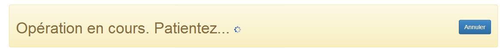
- riga 17: un'informazione di debug:

Tutti gli elementi precedenti sono controllati da una direttiva [ng-show / ng-hide] che fa sì che, pur essendo presenti, non siano necessariamente visibili.
3.8.4. Le viste dell’applicazione
Nel codice della pagina master si ha:
<div class="container">
...
<!-- la vista corrente -->
<ng-view></ng-view>
...
</div>
La riga 4 riceve le diverse viste dell’applicazione. Queste sono definite nel modulo [main.js]:

Il ruolo della configurazione dei diversi percorsi è stato spiegato al paragrafo 3.7.15.4, pagina 242.
La vista [login.html] è vuota, ovvero non aggiunge alcun elemento a quelli già presenti nella pagina master.
La vista [home.html] aggiunge il seguente elemento alla pagina master:
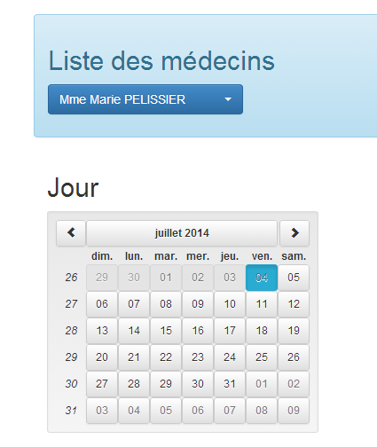
La vista [agenda.html] aggiunge il seguente elemento alla pagina master:

La vista [resa.html] aggiunge il seguente elemento alla pagina master:

3.8.5. Funzionalità dell'applicazione
Le viste del client Angular sono già state illustrate nel paragrafo 1.3.3, a pagina 7. Per facilitare la lettura di questo nuovo capitolo, le riportiamo qui di seguito. La prima vista è la seguente:
 |
- in [6], la pagina iniziale dell’applicazione. Si tratta di un’applicazione per la prenotazione di appuntamenti medici;
- in [7], una casella di controllo che consente di attivare o disattivare la modalità [debug]. Quest’ultima è caratterizzata dalla presenza del riquadro [8] che visualizza il modello della vista corrente;
- in [9], un tempo di attesa artificiale espresso in millisecondi. Il valore predefinito è 0 (nessuna attesa). Se N è il valore di questo tempo di attesa, qualsiasi azione dell’utente verrà eseguita dopo un tempo di attesa di N millisecondi. Ciò consente di osservare la gestione dell’attesa implementata dall’applicazione;
- in [10], l’URL del server Spring 4. Seguendo quanto detto in precedenza, si tratta di [http://localhost:8080];
- in [11] e [12], l’ID e la password di chi desidera utilizzare l’applicazione. Ci sono due utenti: admin/admin (login/password) con un ruolo (ADMIN) e user/user con un ruolo (USER). Solo il ruolo ADMIN ha il diritto di utilizzare l’applicazione. Il ruolo USER serve solo a mostrare la risposta del server in questo caso d’uso;
- in [13], il pulsante che consente di connettersi al server;
- in [14], la lingua dell'applicazione. Ce ne sono due: il francese (predefinito) e l'inglese.
 |
- in [1], si effettua l'accesso;
 |
- una volta effettuato l'accesso, è possibile scegliere il medico con cui si desidera fissare un appuntamento [2] e il giorno dell'appuntamento [3];
- si richiede in [4] di visualizzare l’agenda del medico scelto per il giorno selezionato;
 |
- una volta ottenuto l’agenda del medico, è possibile prenotare una fascia oraria [5];
 |
- in [6], si seleziona il paziente per l’appuntamento e si conferma la scelta in [7];
 |
Una volta confermato l'appuntamento, si torna automaticamente all'agenda dove il nuovo appuntamento è ora registrato. Questo appuntamento potrà essere successivamente cancellato in [7].
Le funzionalità principali sono state descritte. Sono semplici. Quelle che non sono state descritte sono funzioni di navigazione per tornare a una vista precedente. Concludiamo con la gestione della lingua:
 |
- in [1], si passa dal francese all’inglese;
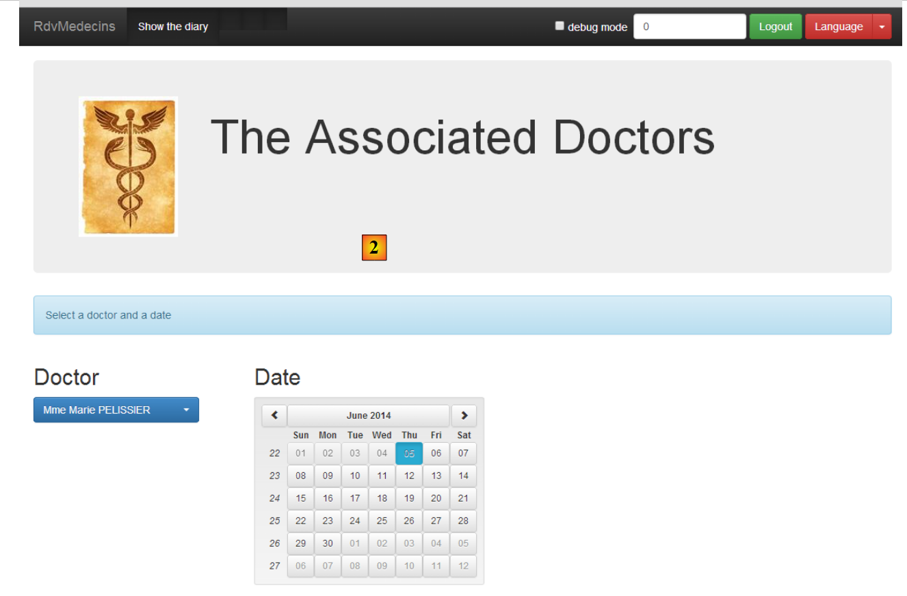 |
- in [2], la vista passa all’inglese, compreso il calendario;
3.8.6. Il modulo [main.js]
Il modulo [main.js] definisce il modulo Angular che controllerà l'applicazione:
 |
- riga 4: il modulo si chiama [rdvmedecins];
- riga 5: il modulo [ngRoute] viene utilizzato per l'instradamento dei URL;
- riga 6: il modulo [translate] viene utilizzato per l’internazionalizzazione dei testi;
- riga 7: il modulo [base64] viene utilizzato per codificare in Base64 la stringa 'login:password';
- riga 8: il modulo [ngLocale] viene utilizzato per l'internazionalizzazione del calendario;
- riga 9: il modulo [ui.bootstrap] viene utilizzato per il calendario;
- riga 12: la configurazione delle rotte;
- riga 40: l'internazionalizzazione dei messaggi;
3.8.7. Il controller della pagina master
Ricordiamo il codice HTML della pagina master [app.html]:
<body ng-controller="appCtrl">
<div class="container">
...
Riga 1: l'intero corpo (body) della pagina master è controllato dal controller [appCtrl]. Data la sua posizione, questo lo rende un controller generale e principale dell'applicazione. Come spiegato nel paragrafo 3.7.15, il modello costruito da questo controller viene ereditato da tutte le viste che verranno inserite nella pagina master.
Il suo codice è il seguente:
angular.module("rdvmedecins")
.controller("appCtrl", ['$scope', 'config', 'utils', '$location', '$locale',
function ($scope, config, utils, $location, $locale) {
// debug
utils.debug("[app] init");
// ----------------------------------------inizializzazione pagina
// i modelli delle # pagine
$scope.app = {waitingTimeBeforeTask: config.waitingTimeBeforeTask};
$scope.login = {};
$scope.home = {};
$scope.agenda = {};
$scope.resa = {};
// modello della pagina corrente
var app = $scope.app;
...
// ---------------------------------- metodi
// annullamento attività corrente
app.cancel = function () {
...
};
// disconnessione
app.deconnecter = function () {
...
};
// questo codice deve rimanere qui perché fa riferimento alla funzione [cancel] che lo precede
app.waiting = {title: {text: config.msgWaitingInit, values: {}}, cancel: app.cancel, show: true};
}])
;
Le righe 10-14 definiscono i cinque modelli utilizzati nell’applicazione:
app.html | appCtrl | |
login.html | loginCtrl | |
home.html | homeCtrl | |
resa.html | resaCtrl | |
agenda.html | agendaCtrl |
È importante comprendere che l’oggetto [$scope], essendo il modello del controller della pagina principale, viene ereditato da tutte le viste e da tutti i controller. Pertanto, il controller [loginCtrl] ha accesso agli elementi [$scope.app, $scope.login, $scope.home, $scope.resa, $scope.agenda]. In altre parole, un controller ha accesso ai modelli degli altri controller. L’applicazione in esame evita accuratamente di avvalersi di questa possibilità. Pertanto, ad esempio, il controller [loginCtrl] opera solo con due modelli:
- il proprio, [$scope.login];
- e quello del controller padre [$scope.app];
Lo stesso vale per tutti gli altri controllori. Il modello [$scope.app] verrà utilizzato come memoria condivisa tra i diversi controllori. Quando un controllore C1 dovrà trasmettere informazioni al controllore C2, si procederà come segue:
Nel [C1]:
Nel [C2]:
In entrambi i casi, $scope è ereditato dal controller [appCtrl] ed è quindi identico (si tratta di un puntatore) in [C1] e [C2]. L’oggetto [$scope.app], che funge da memoria condivisa tra i controller, verrà spesso indicato come session nei commenti, per analogia con la sessione utilizzata nelle applicazioni web classiche, che designa la memoria condivisa tra le successive richieste HTTP.
Torniamo al codice del controller [appCtrl]:
// i modelli delle # pagine
$scope.app = {waitingTimeBeforeTask: config.waitingTimeBeforeTask};
$scope.login = {};
$scope.home = {};
$scope.agenda = {};
$scope.resa = {};
// modello della pagina corrente
var app = $scope.app;
// [app.debug] e [utils.verbose] devono essere sempre sincronizzati
app.debug = utils.verbose;
app.debug.on = config.debug;
// nessun titolo della pagina per il momento
app.titre = {show: false};
// nessuna barra di navigazione
app.navbarrun = {show: false};
app.navbarstart = {show: false};
// nessun errore
app.errors = {show: false};
// impostazione locale predefinita
angular.copy(config.locales['fr'], $locale);
// la vista corrente
app.view = {url: undefined, model: {}, done: false};
// attività corrente
app.task = app.view.model.task = {action: utils.waitForSomeTime(app.waitingTimeBeforeTask), isFinished: false};
- riga 8: [$scope.app] sarà il modello della pagina master. Sarà anche la memoria condivisa tra i diversi controller. Anziché scrivere ovunque [$scope.app.champ=value], il puntatore [$scope.app] viene assegnato alla variabile [app] e si scriverà quindi [app.champ=value]. Basta semplicemente ricordare che [app] è il modello esposto nella pagina master;
- riga 11: [app.debug.on] è un valore booleano che controlla la modalità debug dell'applicazione. Per impostazione predefinita è impostato su true. Il suo valore è collegato alla casella di controllo [debug] delle barre di navigazione;
- riga 15: [app.navbarrun.show] controlla la visualizzazione della seguente barra di navigazione:

- riga 16: [app.navbarstart.show] controlla la visualizzazione della seguente barra di navigazione:

- riga 18: [app.errors] è il modello del banner degli errori;

- riga 22: [app.view] conterrà informazioni sulla vista corrente, ovvero quella attualmente visualizzata dal tag [ng-view] della pagina master. Qui inseriremo le seguenti informazioni:
- [url]: l'URL della vista corrente, ad esempio [/agenda];
- [model]: il modello della vista corrente, ad esempio [$scope.agenda];
- [done]: a vrai indica che la vista corrente ha terminato il proprio lavoro e che si sta passando a un'altra vista;
Queste informazioni servono per il controllo della navigazione.
- riga 24: avvia un'attività asincrona, un'attesa simulata. L'attività asincrona è indicata da due puntatori [app.view.model.task.action] e [app.task];
Nel controller [appCtrl] sono stati fattorizzati due metodi:
// annullamento dell'attività corrente
app.cancel = function () {
...
};
// disconnessione
app.deconnecter = function () {
...
};
- riga 2: la funzione [app.cancel] serve ad annullare l’attività corrente per la quale è attualmente visualizzato un messaggio di attesa. Tutte le viste mostrano questo messaggio e quindi l’annullamento dell’attività avverrà qui;
- riga 7: la funzione [app.deconnecter] riporta l’utente alla pagina di autenticazione. Tutte le viste, tranne la vista [/login], offrono questa possibilità;
La funzione [app.deconnecter] è la seguente:
// disconnessione
app.deconnecter = function () {
// si torna alla pagina di accesso
$location.path(config.urlLogin);
};
- riga 4: si torna alla pagina di login di URL [/login];
3.8.8. Gestione dell’attività asincrona
Nella nostra applicazione, in un dato momento, sarà in esecuzione un solo task asincrono. È possibile averne più di uno. Ad esempio, all’avvio dell’applicazione, questa richiede al servizio web l’elenco dei medici e poi quello dei clienti con due richieste HTTP successive. Si potrebbe ottenere lo stesso risultato con due richieste HTTP simultanee. Angular offre gli strumenti per questa gestione. In questo caso, però, non abbiamo optato per questa soluzione.
L’attività in esecuzione viene annullata con il seguente codice nel controller [appCtrl]:
// annullamento dell'attività corrente
app.cancel = function () {
utils.debug("[app] cancel task");
// si annulla l'attività asincrona della vista corrente
var task = app.view.model.task;
task.isFinished = true;
task.action.reject();
...
};
- riga 5: l’attività viene ricercata in [app.view.model.task]. Inoltre, tutti i controller faranno in modo che le loro attività asincrone siano referenziate da questo oggetto;
- riga 6: per indicare che l’attività è terminata;
- riga 7: per terminare l’attività con un errore. Questa notazione è diversa da quella utilizzata negli esempi Angular esaminati:
- negli esempi, l’oggetto [task] era un oggetto [$q.defer()] che poteva essere terminato;
- nella versione finale, l’oggetto [task] è un oggetto con i campi [action, isFinished], dove [action] è l’oggetto [$q.defer()] chepuò essere completato e [isFinished] è un valore booleano che indica che l’azione è stata completata;
Esaminiamo il ciclo di vita dell’oggetto [task] con un esempio. All’avvio, dopo il controller [appCtrl], subentra il controller [loginCtrl] per visualizzare la vista [views/login.html]. Il suo codice di inizializzazione è il seguente:
// si recupera il modello padre
var login = $scope.login;
var app = $scope.app;
// vista corrente
app.view = {url: config.urlLogin, model: login, done: false};
Alla riga 5 si trova [model=login]. Ciò significa che quando si modifica l’oggetto [login], si modificano anche gli oggetti [app.view.model] e [$scope.app.view.model]. Quando nel controller [loginCtrl] si desidera eseguire un'attesa simulata, si scrive:
// attesa simulata
var task = login.task = {action: utils.waitForSomeTime(app.waitingTimeBeforeTask), isFinished: false};
Aggiungendo il campo [task] all’oggetto [login], esso è stato quindi aggiunto all’oggetto [$scope.app.view.model]. Se l’utente annulla l’attesa, il codice in [appCtrl.cancel]:
// modello della pagina corrente
var app = $scope.app;
...
var task = app.view.model.task;
task.isFinished = true;
task.action.reject();
terminerà correttamente l’attesa simulata (righe 4-6).
3.8.9. Controllo della navigazione
Le regole di navigazione utilizzate nell’applicazione sono le seguenti:
qualsiasi | sì | |
/login | sì, se il controllore [loginCtrl] ha segnalato di aver terminato il proprio lavoro | |
/home | sì | |
/agenda | sì | |
/home | sì, se il controllore [homeCtrl] ha segnalato di aver terminato il proprio lavoro | |
/resa | sì | |
/agenda | sì | |
/agenda | sì, se il controllore [homeCtrl] ha segnalato di aver terminato il proprio lavoro | |
/resa | sì |
Ciò è implementato con il seguente codice:
Per [agendaCtrl]:

- righe 11-20: implementazione della regola di navigazione;
- riga 26: nuova vista corrente;
Per [resaCtrl]:
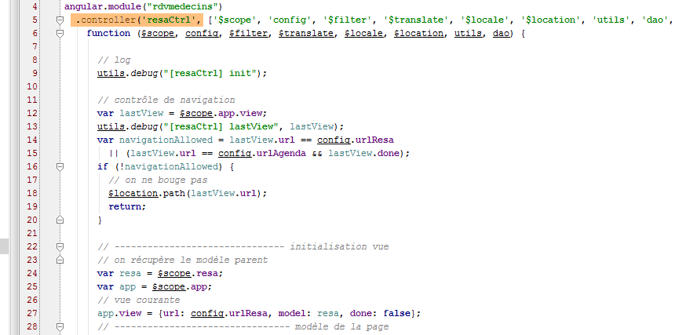
- righe 12-20: implementazione della regola di navigazione:
- riga 27: nuova vista corrente;
Per [loginCtrl]:

- qui non c'è alcun controllo di navigazione poiché la regola stabilisce che è possibile accedere a URL [/login] da qualsiasi pagina. Pertanto, se l'utente digita questo URL nel proprio browser, funzionerà indipendentemente dalla vista corrente del momento;
- riga 16: la nuova vista corrente;
Il codice per il controller [homeCtrl] è stato fornito nel paragrafo 3.8.7.
Infine, per una regola come:
/home | sì, se il controller [homeCtrl] ha segnalato di aver terminato il proprio lavoro |
ecco un esempio di codice che fa passare da URL [/home] a URL [/agenda]:
 |
Qui sopra ci troviamo nel metodo [afficherAgenda] del controller [homeCtrl]. L’utente ha richiesto l’agenda di un medico.
- riga 107: la promessa dell'attività HTTP;
- riga 109: la variabile [app] è stata inizializzata con [$scope.app]. Quest'ultimo oggetto, come abbiamo visto, viene utilizzato come modello della vista [app.html]. Questo modello [$scope.app] viene utilizzato anche per memorizzare le informazioni che devono essere condivise tra le viste;
- riga 111: si analizza il codice di errore restituito dall’attività;
- riga 113: il risultato [result.data] viene inserito nel modello [app];
- riga 116: il controller [homeCtrl] passerà il controllo al controller [agendaCtrl]. Gli comunica di aver terminato il proprio lavoro con il codice della riga 115. Questo codice verrà utilizzato dal controllore [agendaCtrl] nel modo seguente:

- riga 11: viene recuperato l'oggetto [$scope.app.view];
- riga 15: elaborazione del campo [$scope.app.view.done] inizializzato da [homeCtrl];
3.8.10. I servizi
 |
I servizi [config, utils, dao] sono quelli già descritti nella presentazione di Angular:
- il servizio [config] è stato introdotto nel paragrafo 3.7.4;
- il servizio [utils] è stato presentato nel paragrafo 3.7.5;
- il servizio [dao] è stato introdotto al paragrafo 3.7.6;
A titolo informativo, si ricorda la struttura di tali servizi:
Servizio [config]
 |
- in [1]: si nota che il codice è lungo circa 250 righe. La parte essenziale di questo codice consiste nell’esternalizzazione delle chiavi dei messaggi internazionalizzati [2]. Si evita di inserire queste chiavi in modo fisso nel codice;
Servizio [utils]
 |
- riga 8: non avevamo ancora incontrato la variabile [verbose]. Essa controlla la funzione [debug] nel modo seguente:
 |
- righe 22-25: la funzione [utils.debug] non esegue alcuna operazione se [verbose.on] viene valutata come false. Questa variabile è collegata a una variabile del controller [appCtrl]:
 |
- riga 21: [app.debug] assume il valore del puntatore [utils.verbose]. Pertanto, qualsiasi modifica apportata a [app.debug] verrà applicata anche a [utils.verbose];
- riga 22: il valore iniziale di [app.debug.on] viene prelevato dal file di configurazione. Per impostazione predefinita, è il valore true.. Questo valore può variare nel tempo. L'utente ha infatti la possibilità di modificarlo nelle barre di navigazione:
 |
- riga 45: una casella di controllo (type=checkbox) consente di modificare il valore di [app.debug.on] (attributo ng-model);
Servizio [dao]
 |
3.8.11. Le direttive
 |
Le direttive [errors, footable, list, waiting] sono quelle già descritte nella presentazione di Angular:
- la direttiva [footable] è stata introdotta nel paragrafo 3.7.8.6;
- la direttiva [list] è stata introdotta nel paragrafo 3.7.12;
- le direttive [errors] e [waiting] sono state introdotte nel paragrafo 3.7.14;
Non avevamo ancora incontrato la direttiva [debug]. È la seguente:
 |
Il file [debug.html] citato alla riga 11 è il seguente:
- riga 2: la direttiva [debug] visualizza il proprio modello nel formato JSON in un banner Bootstrap (riga 1);
Questa direttiva viene utilizzata solo nella pagina master [app.html]:
 |
- la direttiva [debug] viene utilizzata alla riga 35. Visualizza quindi la forma JSON del modello [$scope.app] quando ci si trova in modalità debug (attributo ng-show). Il risultato è simile a questo:
 |
Per interpretare questi dati è necessaria una buona conoscenza del codice, ma una volta acquisita tale conoscenza, le informazioni sopra riportate diventano utili per il debug. Qui sono stati evidenziati gli elementi del modello [$scope.app] visualizzato. Si ricorda che [$scope.app] è la memoria condivisa dai controller;
- [waitingBeforeTask]: il tempo di attesa simulato prima di qualsiasi richiesta a HTTP;
- [debug]: la modalità debug – è necessariamente true se viene visualizzata questa barra;
- [navbarrun]: valore booleano che controlla la visualizzazione della barra di navigazione seguente:

- [navbarstart]: valore booleano che controlla la visualizzazione della barra di navigazione seguente:

- [errors]: modello della direttiva [errors];
- [view]: incapsula le informazioni sulla vista attualmente visualizzata;
- [waiting]: modello della direttiva [waiting];
- [serverUrl, username, password]: informazioni di accesso al servizio web;
- [medecins]: modello per la direttiva [list] applicata ai medici;
- [clients]: lo stesso per i clienti;
- [menu]: controlla le opzioni di menu visualizzate. Queste sono definite in [navbar-run.html]:

Le opzioni di menu si trovano alle righe 16, 23, 29 e 36.
- [formattedJour]: il giorno selezionato nel calendario nel formato 'aaaa-mm-gg';
- [agenda]: l'agenda del medico. In essa sono presenti fasce orarie libere (rv==null) e prenotate. Per queste ultime è indicato il nome del cliente che ha effettuato la prenotazione;
- [selectedCreneau]: la fascia oraria scelta per effettuare una prenotazione;
3.8.12. Il controller [loginCtrl]
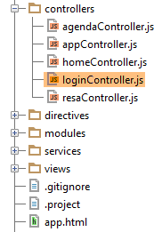 |
Il controller [loginCtrl] è associato alla vista [views/login.html] che, associata alla pagina master, genera la pagina seguente:

Il controller [loginCtrl] è il seguente:

- riga 13: [login] sarà il modello della vista corrente;
- riga 14: [app] è la memoria condivisa tra i controller;
- riga 16: si popola [app.view] con le informazioni della vista corrente;
Questo codice di inizializzazione sarà presente in ogni controller. Per il controller C1 di una vista V1 con modello M1 si avrà il seguente codice di inizializzazione:
- riga 18: si ricorderà forse che [appCtrl] ha avviato un'attesa simulata a cui fa riferimento l'oggetto [app.task.action]. Si utilizza [promise] di questa attività per attendere il suo completamento;
- riga 39: il metodo [login.setLang] gestisce il cambio di lingua;
- riga 47: il metodo [login.authenticate] gestisce l'autenticazione dell'utente;
Esaminiamo le fasi principali del metodo di autenticazione:

- righe 50-51: [app.waiting] è il modello del banner di attesa;
- riga 53: [app.errors] è il modello del banner di errore;
- riga 55: viene avviata un'attesa simulata. L'oggetto [action, isFinished] è referenziato da [login.task] e quindi, poiché [app.view.model=login], da [app.view.model.task]. Si ricorda che questa è la condizione affinché l’attività possa essere annullata;
- riga 57: al termine dell’attesa simulata, si caricano i medici;
- riga 62: una volta ottenuta la richiesta dei medici, la si analizza. Se i medici sono stati ottenuti, si richiedono quindi i clienti;
- riga 83: si analizza la risposta ottenuta e si visualizza la vista finale. Ciò avviene con il seguente codice:

- riga 87: il valore booleano [task.isFinished] viene impostato su true nei seguenti casi:
- l'utente ha annullato l'attesa;
- la richiesta dei medici si è conclusa con un errore;
- righe 91-98: il caso in cui si hanno i clienti;
- riga 93: [app.clients] è il modello della direttiva [list] che visualizzerà i clienti in un elenco a discesa;
- righe 97-98: ci si prepara a cambiare vista (riga 98) ma prima si indica che il controller ha terminato il proprio lavoro (riga 97). Si ricorda che [$scope.app.view.done] viene utilizzato per il controllo della navigazione;
Il punto importante da notare qui è che i medici e i clienti sono stati memorizzati nella cache del browser. D'ora in poi non verranno più richiesti al servizio web.
3.8.13. Il controller [homeCtrl]
 |
Il controller [homeCtrl] è associato alla vista [views/home.html] che, associata alla pagina master, genera la pagina seguente:

La struttura del controller [homeCtrl] è la seguente:

- righe 12-20: si tratta del controllo di navigazione. Tutti i controller lo possiedono tranne [loginCtrl], poiché la pagina [/login.html] è accessibile senza condizioni;
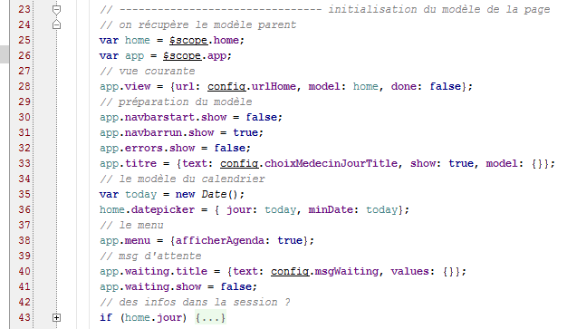
- righe 25-28: qui troviamo righe simili a quelle presenti nel controller [loginCtrl]. [home] è quindi il modello della vista associata al controller;
- riga 33: un attributo che non avevamo ancora incontrato. Si tratta del modello della barra del titolo della vista:

- riga 36: [home.datepicker] è il modello del calendario;
- riga 38: [app.menu] è il modello del menu della barra di navigazione. Qui sarà presente l'opzione [Agenda]. È questa che permette di richiedere l'agenda di un medico;
Infine, il controller dispone di due metodi:

La visualizzazione dell’agenda (riga 51) è stata trattata nel paragrafo 3.7.8.
3.8.14. Il controller [agendaCtrl]
 |
Il controller [agendaCtrl] è associato alla vista [views/agenda.html] che, associata alla pagina master, genera la pagina seguente:

La struttura del controller [agendaCtrl] è la seguente:
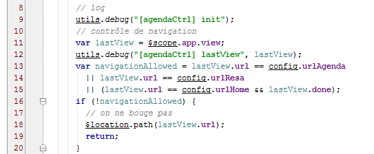
- le righe 10-20 gestiscono la navigazione;

- righe 23-26: [agenda] sarà il modello della vista associata al controller [agendaCtrl];
- righe 36-44: [app.titre] è il modello del banner di titolo seguente:

- riga 46: il menu avrà l’opzione [Home / Accueil]:

I metodi del controller sono i seguenti:

- riga 95: il metodo [agenda.supprimer] è stato trattato nel paragrafo 3.7.9;
Il metodo [agenda.home] è un metodo di pura navigazione:

Il metodo [agenda.reserver] è il seguente:

- riga 73: il parametro della funzione [reserver] è il numero della fascia oraria (id);
- righe 77-86: servono a individuare la fascia oraria con tale identificativo;
- riga 82: la fascia oraria individuata viene inserita nella memoria condivisa [app]. Il controller [resaCtrl], che subentrerà (riga 90), utilizzerà questa informazione per visualizzare la propria barra del titolo;
- righe 89-90: navigazione verso [/resa.html];
3.8.15. Il controller [resaCtrl]
 |
Il controller [resaCtrl] è associato alla vista [views/resa.html] che, associata alla pagina master, genera la pagina seguente:

La struttura del controller [resaCtrl] è la seguente:
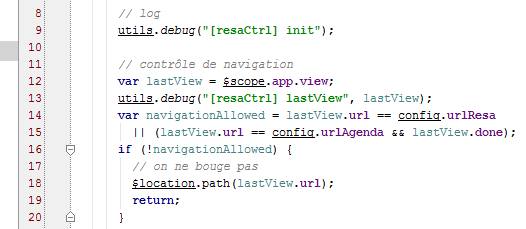
- righe 12-20: il controllo di navigazione;

- righe 24-27: [resa] sarà il modello della vista corrente;
- righe 38-45: [app.titre] è il modello del banner del titolo successivo:

- riga 47: vengono visualizzate due opzioni di menu:
I metodi del controller sono i seguenti:

Il metodo [resa.valider] è stato analizzato nel paragrafo 3.7.9.
3.8.16. La gestione delle lingue
Tutti i controller offrono il seguente metodo [setLang]:
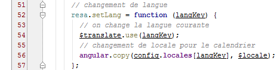
Avrebbe potuto essere fattorizzato nel controller [appCtrl].